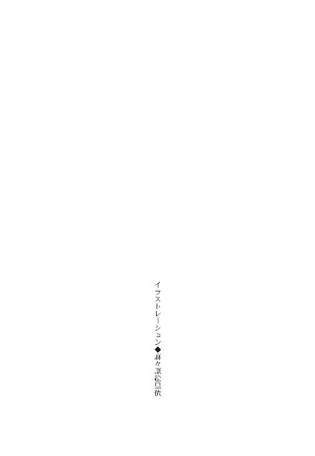

| 三千世界の鴉を殺し(20) (ウィングス・ノヴェル) | |
| 津守時生 | |

１
降り注ぐ柔らかな日差しが、春のような温もりを与えた。
需品科の倉庫を警備する兵士たちは、緊張感のないのどかな表情で眼を細める。カーマイン市の冬は長く、ただただ寒い。
十一月ともなれば、日差しのない昼はかなり気温が低下する。
温度調節素材で作られた制服と異なり、戦闘服は消耗品扱いの安物だった。
さすがにいかな貧乏基地でも、必要な各種防寒具の支給はある。
気温に応じた着用を許可されているので、兵士たちは今、迷彩服の上にロングコートを着ていた。
それでも足元から這い上がる寒気に耐える身には、太陽の弱い日差しも充分な恩恵になる。
早朝から一時間ほど前まで続いた搬出の喧噪が噓のように、今の倉庫はいつもの静寂を取り戻していた。
現在、カーマイン市の住宅地区イエロー・タウンの治安は、かつてないほど悪い。
発端は、根拠のない食糧危機の噂だった。
商店は暴徒の略奪に遭い、治安維持のために出動した都市警察と銃撃戦も起きている。
さらなる暴徒の略奪と破壊を警戒した惑星政府は、銀河連邦宇宙軍カーマイン基地に食品製造工場群の警備を依頼してきた。
カーマイン市に住むものの口に入る食品は、すべて食品製造工場を経由している。
それは流民街の住民も例外ではない。
そこを破壊されたら、飢餓レベルの深刻な食糧危機に陥ってしまう。
にもかかわらず、食料が手に入らないなら、大本の食品製造工場を襲って手に入れようと、インターネットで煽動するものが現れた。
愚かにも多くの人間が襲撃に賛同し始めているという。
カーマイン基地と惑星政府は、宇宙軍の惑星軍基地急襲により一時期関係が悪化していた。
しかし、食糧危機を招きかねない暴徒という共通の敵に対し、協力して対処すべきだという認識では一致する。
ブレッチャー司令官は警備を快諾した。
周辺宙域で跋扈するおびただしい数の宇宙海賊が掃討されるまで、定期貨物船や客船がバーミリオン星の宇宙ステーションに入港する予定はない。
従って、今月宇宙港警備担当の第二連隊は、仕事がなくて暇だった。
ただ遊ばせておくなら、隣接する空港から食品製造工場の警備に送り出せばいい。
無駄を省き、惑星政府に恩を売る好機だと、基地司令官はほくそ笑んだ。
警備に当たる連隊の食料は、製造工場から直接回してもらうよう交渉も済んでいる。
需品科の倉庫を管理する兵士たちは、要求された多量の装備品を運搬用自走車両に積み込んで、あわただしく空港に送り出した。
終わりの頃は、出発時間に間に合わせようとする運搬係の兵士たちが半ば殺気立ち、出入りのチェックをするわずかな時間さえ惜しんだ。
そのせいで歩哨の兵士たちは不愉快な思いをしたが、今はもう過去のこと。
一人の兵士が、日差しの心地よさに大きなあくびをする。
コートの内ポケットに入れてある携帯端末の呼び出し音が鳴った。
「はい、倉庫入り口──はっ！ ありがとうございます。......それで中のものに連絡は？ ......アイアイ・マム」
「少佐殿か。荷物の追加か？」
通話を終えて携帯端末を胸ポケットに戻す男に、入り口の反対側に立つ兵士が尋ねた。
「いや、そうじゃなくて──」
男が答えかけるのと、建物の陰から現れた遠くの人影を見とがめた相棒が、銃を構えるのはほぼ同時だった。
今日は特別だったが、本来は在庫整理や修理、新たな納品や出庫など倉庫管理を担当する同僚か、警備担当の同僚以外、倉庫を訪れる人間はいない。
需品科の上官から連絡を受けた兵士が、反射的に身構えた相棒に慌てて訪問者があることを告げる。
「これからオスカーシュタイン大尉殿が、任務に必要な物を取りにくるそうだ」
「あれがオスカーシュタイン大尉殿だってのは、遠目でも一発でわかった」
すでに警戒を解いていた相棒が、苦笑して言う。
自分たちと同じ都市迷彩の戦闘服を着ていても、黒いスクリーン・グラスをかけて黒髪を長く伸ばした男は、カーマイン基地に一人しかいない。
需品科の男性兵士たちにとって救世主に等しい彼は、歩哨に立つ二人には更になじみ深い存在だった。
戦闘服姿のルシファードは、整備兵のように何種類かの工具を挿したベルトを腰に巻き、左手に軽合金のアタッシェ・ケースを持っている。
声をかけても不自然ではない距離まで彼が来たところで、二人は同時に敬礼した。
「お久しぶりです、大尉殿！」
「ああ、君たちか。あの時は世話になったな」
長髪の男は足を止めて答礼し、爽やかな笑顔を見せる。
制服の採寸に来て一度会ったきりだが、彼のほうも二人を覚えていた。
「とんでもない。我々こそ、大尉殿にはいくら感謝しても足りないほどの御恩があります！」
「あれから落ち着いたか？」
「お陰様で、ほかの兵科の男たちから白い目で見られることはなくなりました」
「それは何よりだ。八つ当たりされて辛かったな」
ねぎらいとも慰めともつかない言葉だったが、低音の響きは優しい。
当時の思いが胸に甦り、目に涙が浮かんだ兵士たちは言葉を詰まらせる。
「あ、ありがとうございます......っ、サー」
「同じ需品科の人間として、彼女たちの暴走を止められなかったので......責められても仕方がなかったとは思いますが......」
「たとえほかの兵科の兵士でも、面と向かって彼女たちを止められなかった以上、君たちを責める資格なんぞ欠片もねえよ」
雌狼の群れに敢然と一人で立ち向かい、勝利を勝ち取った英雄は軽い口調で言い捨てた。
ああ、カッコイイ人だなぁ......と胸を熱くする。
「ところで大尉殿。コートどころかジャンパーも着ないで、寒くありませんか？」
「寒暖の差には割と耐性があるんだ。見ているほうが寒いとまわりから言われるから、なるべく周囲に合わせて着るようにはしているが」
「今も見ているこちらが震えてきます」
「すまん。だが、ロングコートは作業の邪魔になるからなぁ。汚しそうだし」
まだ寒さに体が慣れない兵士が、身を固くして震え声で言うと、薄着の男は困ったように笑ってわびる。
身につけている工具類から、作業が何か大体想像がついた。
所属兵科がどこだろうと、自分の手で何でも修理できたほうが生き延びる確率は高くなる。
マコトたち輸送科の兵士が部品のやりくりに苦労しているように、需品科も予算不足のせいで、小さな備品の新規補充さえままならない。
在庫の備品を自分たちで修理するのが当然になっている需品科の兵士たちは、仲間以外で初めて倉庫に〈作業〉しにやってきた男に対し、親近感を抱いた。
男の心の奥には、いつまでも歳を取らない少年が住んでいる。
その少年は、分解だの修理だの改造だのという〈作業〉に心躍らせる。
反対に壊しただの散らかすばかりだのガラクタばかり集めてだのと、周囲の女たちから口うるさく小言を言われても、少年は絶対にめげない。
兵士は共感度百パーセントの笑顔で言った。
「お引き留めして申し訳ありません。バンカー少佐殿から大尉殿の御用の件は、うかがっております。......どうぞお通り下さい」
「ありがとう。世話になる」
歩哨の兵士は、虹彩認証で倉庫の分厚い扉の脇にある通用口を開き、来客に促す。
律儀に礼を言って、通用口から倉庫の中に入っていく長身を見送った相棒は、上官から連絡を受けた兵士に聞く。
「大尉殿は中で何をするつもりなんだ？」
「必要な物を倉庫から出すついでに改造していくんだと」
「本部ビルの二階に机やコンピュータを何台も搬入していたから、何か特別な任務についているらしいとは思っていたけど......。改造って......親父どもがほっとかないぞ」
二人は同時に、古参の兵士たちの顔を思い浮かべた。
「工具を持っていたが、アタッシェ・ケースの中はパソコンかな？」
「さあ？ 今回の食品製造工場群警備に関係がありそうだけど」
「大尉殿が着任してから、まともな宇宙軍基地らしくなってきた気がしないか？」
「ああ、俺も今、それを言おうと思ってた！ 美形で剛胆な上にデキる男って嫌みでしかないのに、あの人は男の目から見てもカッコイイよなぁ」
「色々ハイスペックすぎて、はるか雲の上の人だがな。出来の良さを鼻にかけるどころか、気さくで感じがいいし」
「あの人の下で働けたら、退屈することはなさそうだ」
ルシファードにタラされるのは、直属の部下たちばかりではなかった。
早朝から呼び出され、忙しく働いていた倉庫係の兵士たちは、通用口から入ってきた一人の男を胡散臭げに眺めやる。
受付のような役目の若い兵士だけがすぐに反応し、席から立ち上がって敬礼した。
「ようこそ、オスカーシュタイン大尉殿。需品科のコリン少尉です。バンカー少佐殿から、大尉殿に便宜を図るように連絡を受けています。今日はどのような用件でのご来訪ですか？」
「よろしく。このリストにある品物を揃えてもらいたい。それから、それらの品を改造して作りたい物があるので、大型工具と作業台を貸して欲しい」
ルシファードは一枚の紙を差し出しながら、ドミニクに話した用件を言う。
彼女が倉庫内での作業を勧めてくれた。
兵士は紙を受け取り着席すると、紙に書かれた品名をパソコンに打ち込み始める。
「五番の自走ワゴンが棚から自動で集荷し、作業台までお届けします。作業台は半分以上空いていますから、ご希望の工具がある台を選んでお使い下さい。備え付けの操作卓にワゴンの場号を打ち込めば、お届け先に登録されます」
「ありがとう。世話になる」
「どういたしまして。何かありましたら、近くのものにご相談下さい」
ルシファードは愛想のいい受付係の兵士に礼を言い、自走運搬車が乗り入れられるように広く作られた通路を奥へと歩いていく。
倉庫の内部は、高い天井まで届く棚が整然と並んでいた。
取り付けられたレールに沿って上下左右に移動するマニピュレータが、指定された物品を棚から取り出すと、通路で待機する自走ワゴンがその物品を乗せ、指定の場所まで運んでいく仕組みだった。
受付の兵士から手で方向を示されたので、作業台のある場所はすぐにわかった。
倉庫中央通路の生活用品寄りの場所に広い修理スペースがある。
溶接やプレス加工など、多少危険を伴ったり騒音の出る作業のスペースは、奥にあるようだった。
目の前に整然と並ぶ作業台は、よく使用する工具と部品の詰まった箱を載せたワゴンが、もれなく脇に付いている。
どれも同じ作りで、大きく番号の書かれたポールが立っていないと区別がつかない。
幾つかの作業台の上には、いかにも作業途中という感じで、解体された備品と小さな工具が雑然と置かれていた。
ホコリを嫌う精密機械を扱うクリーン・ルームの場所を示す表示もある。
広い倉庫内で働く兵士たちの動線を考えると、作業台を中央に設けるのは合理的だろう。
使う作業台を決めて、腰のマイ工具を載せていく。
「おう、若いの。何しに来た。慣れないことはやめておいた方がいいぞ」
古参兵が通りすがりに声をかけたという風を装って、探りを入れてきた。
職人気質のベテランが横柄なのは、どこの世界でもほぼデフォルト。
気にもとめずにルシファードは答える。
「無人偵察機の魔改造、かな？」
魔改造だとぉ大好物じゃないですかやだーとばかりに、陰に隠れて様子をうかがっていた倉庫係の兵士たちが、あちこちから顔を出す。
「そいつは素人にゃあ荷が重そうだな」
「下手にいじって、基地の大事な備品を壊されちゃたまんねーしよ」
「仕方がねえな。今は暇だし、ちょっくら手伝ってやっかー」
親父たちがてんで勝手なことを嬉しそうに言いつつ、わらわらと集まってきた。
どの目もきらきら輝いている。
ルシファードは笑って、少年の心を持った男たちに呼びかけた。
「それじゃ、みんなで一緒にやらかそう」
歩哨の交代時間になっても、ルシファードはまだ中で作業を続けているのか出てこない。
仕事の終わった二人は相談し、自分たちの分のついでを装って彼にコーヒーを持って行くことにした。
一杯のコーヒーに作業の手を止め、休憩する彼に話しかけるくらいなら、邪魔にはならないだろう。
通用口から入り、広い通路を歩いて奥に向かう。
重火器は輸送科の武器庫に保管されているが、自動小銃や拳銃、弾丸など個人に貸与される武器の在庫は、需品科が管理していた。
オーダーメイドではない下士官以下の制服の在庫、制服に合わせる男女の靴、戦闘服とブーツ、携帯端末やパソコンもある。
とはいえ、今年に入るまで一度も出撃命令がなかった基地の倉庫は、住宅エリアに住む家族持ちの兵士に貸与される家電や予備の家具がかなりのスペースを占めていた。
生活に余裕のある家族は備え付けの家具を返却し、好みの家具や最新家電を自費で揃えるが、給料が安い一般兵士や子供の多い世帯は、家電も無料で貸与される中古品を選ぶ。
入り口近くに席のある受付係が、物品の出入りをコンピュータで一括管理している。
奥には検品係や修理とメンテナンスする係がいた。
ブレッチャー司令官は、経費の無駄を厳しくチェックするため、消耗品以外で新規購入することはほとんどない。
大半の物は修理不可能なレベルになるまで使用し、流用できる部品はすべて保管しておく。
お陰でジャンルは異なるものの、需品科と輸送科の兵士は中古品修理の専門家と呼べる猛者が何人もいる。
とりあえず二人は中央通路をそれ、先に休憩スペースの飲料ディスペンサーに向かう。
古いソファで区切られたその一角には、珍しく誰もいなかった。
それぞれ好みの飲み物をオーダーし、半分ほど飲んでからコーヒーを一つ追加する。
簡易カップを手にし、クリーン・ルーム脇の通路を通って修理スペースに向かう。
すぐに頭より少し上の高さに吊られた漆黒の物体が目に入った。
「あ、惑星軍からちょろまかしてきた最新型無人偵察機！」
「馬鹿野郎。押収品と言え」
倉庫の主のような古参兵が振り返って注意する。
倉庫で働く兵士たちの大半が集まって、無人偵察機の回りをウロウロしていた。
妙に楽しそうだった。
兵士たるもの、家電の修理より兵器を改造したい。
三メートルほどの機体を軽合金のフレームに載せ、その四隅を結んだワイヤーをクレーンで吊り下げる形を取っていた。
ミサイルを二基装着できる機体の下部に細長い物体が接合されている。
角度が悪くてよく見えないが、その物体の先端近くに開口部がある。
それは下に向かって開いていた。
近くの作業台に、立ってパソコンを操作しているルシファードの後ろ姿がある。
邪魔になる長い髪を一つに編んで束ねていた。
「......よし。シミュレーションでは、指示通りの角度で命中したぞ」
「おっし。やったぜ！」
「めでたい！」
ルシファードの言葉に周囲の兵士たちが手を叩く。
「しかし反射板の強度が不安だな。連続使用でも数回は保って欲しいんだが......」
「仕方がねえさ、若いの。時間がなけりゃ材料もない。それを工夫して、これだけの改造をしてのけるほうが凄いことだ」
「家電の部品を転用しようなんて発想自体、アタシらにはないね」
不安を口にする男を需品科の兵士たちが慰める背後から、歩哨に立っていた兵士の一方が質問した。
「これで製造工場を襲撃する暴徒を鎮圧するんですか？」
一瞬空気が凍り付いたように需品科の兵士たちが動きを止めている中、ルシファードだけが自然な動きで顧みる。
「暴徒を鎮圧するなら、ミサイルをブチ込んだほうが早いぞ？」
「いやいやいや、ナニ物騒なことを言ってんだよ。催涙ガスだとかゴム弾だとか電気ショック銃だとか拡声器での警告だとか威嚇発砲だとか、事前に色々やることはあるだろ！」
あわてて倉庫係の古参兵が否定した。
「ぬるい儀式のあとの話だ」
「儀式って言うな！」
「儀式で鎮まるほど大人しい奴らなら、流民街から百キロ近く荒野を移動している途中で、頭が冷えるんじゃないのか？ 食品工場を襲撃して、できたばかりの在庫を分捕る程度ならまだしも、中まで入られたら汚染されて製造中のものを全部廃棄処分することになるんだ。その上で工場内の汚染エリアを殺菌する。それが終わるまで新しい食品は製造されない。さらに頭の沸騰している連中が、機械に何かして製造ラインが作動不能に陥ったら、餓死者の出る事態になるんだぞ。そんな連中のために多数の餓死者を出すくらいなら、ミサイルをブチ込んで一掃したほうが簡単だ」
仮定としても、そんな深刻な事態を想像したくない。
兵士たちは複雑な表情で沈黙する。
急に暗くなった空気を変えるべく、相棒の兵士が無理に笑顔を作り、二つ持ったコーヒー・カップの一方をルシファードに差し出す。
「お疲れ様です。俺たち、ちょうど交代時間になりましたので......大尉殿もいかがですか？」
「ありがとう。こちらもほぼ作業が終わったところだ」
「......えーっと......その、どうして大尉殿は、これを改造しようと思い立ったわけですか？」
「ラクロワ中佐殿から、暴徒対策の役に立ちそうなものはないか探してくれと頼まれた。ミサイルより穏便な方向でな。倉庫の在庫リストをざっと見て適当なものがなかったから、これは造るしかなかろうと」
「えーと、初歩的な質問ですが、倉庫の在庫リストって公開されていましたっけ？」
「見せてもらった」
バンカー少佐からルシファード来訪の連絡を受けた歩哨の兵士は、在庫リストも彼女から見せてもらったのだろうと思う。
まさか正式に頼むのが面倒で、コンピュータをハッキングして〈リストを見せてもらう〉人間がいるとは誰も思わない。
「何を取り付けたんですか？」
「以前、流民マフィアからガメたビーム・ライフルがあったんで、それをバラして簡単なレーザー砲にした。射程は短いが、無人偵察機の高度を下げることで対処できるだろう」
「口径の小さいビーム・ライフルからの流用だと、暴徒のような多数への抑止力にはならないと思いますが」
コーヒーを一口飲んだ男は、相手のセリフに対し理解に苦しむといった調子で答えた。
「ミサイルを使うなら、派遣した連隊にミサイル・ランチャーを装備させているだろうが。爆撃して皆殺しにするつもりなら戦闘機を飛ばせばいいんだし」
おいおいおいおいー、相手は暴徒とは言え民間人だぞと古参兵。
「大尉殿。この場にいるのはみんな軍人ですが、民間人を爆撃するような虐殺行為を軽々しく口にするのは、いかがなものかと......」
「そうは言っても、暴徒の中には流民街マフィアが混ざっているしな。連中は以前、ビーム・ライフルや武装ＶＴＯＬやパワード・スーツを持ち出してきたんだ。民間人扱いして遠慮していると、そのうち痛い目に遭うぞ？」
「それじゃ、流民街マフィアが食品製造工場を乗っ取るっていうのか？」
やばいだろ、それと青ざめる一同。
苦笑したルシファードが否定した。
「そんな兆候があったら、警備ではなく直接戦闘機が飛ぶって」
「ですよねー。流民街マフィアだってバカじゃないんだから、自分たちまで飢えたり、宇宙軍から徹底的に攻撃されるような自殺行為はしませんよねー？」
一緒になって青ざめた歩哨の兵士たちが、頭をかいて恥ずかしそうに笑う。
「ただ馬鹿なガキ共を煽って、食品製造工場群に向かわせる連中の意図は謎だがな」
「民間人のガキ共が大半だと、あんたの言うようにミサイルをブチ込んで排除するわけにもいかねーしなぁ」
「と言っても、放置したら襲われるから警備は必要だ。面倒な話だぜ」
「都市警察や俺ら宇宙軍に、自分たちの影響力を見せつけようってハラじゃねえのか？」
「こっちも存在意義を主張できるから、一概に悪いとも言えねーぞ？ 都市警察も惑星政府のの奴らも、カーマイン基地の宇宙軍を空港と宇宙港の警備業者と呼んでやがる」
「訓練じゃない緊急出動っていいモンだな。第二連隊の奴らの緊張感も全然違う」
顔をしかめたルシファードがぼそりと付け加えると、倉庫係の親父たちが口々になんやかやと言い始めた。
その勢いに乗って、歩哨の兵士の一人がずっと感じていた疑問を口にする。
「一個連隊の警備って、それなりに経費もかかりますよね？ よく司令官殿が許可したと思うのですが......」
「そりゃお前、頼んできた惑星政府持ちは当然だろ」
「いや......出庫の時、自走運搬車の運転手をしてた奴とちょっと話したことなんですが......。第二連隊の連中、持って行く装備品をメチャクチャ絞れって言われていたそうで。武器までケチられたらマジ危なかったから、惑星軍からパクッた分が大量にあって助かったって」
「押収品と言え」
お約束の突っ込みのあと、一同の視線がルシファードに集まった。
「ん？」
「ん、じゃねえ。無人偵察機の魔改造は誰に頼まれたんだ、若いの」
「ラクロワ中佐殿だが？ 無人偵察機なら、夜にまぎれて近くから監視できるからと」
「待てよ。監視だけなら魔改造は必要ないよな？」
「そこはそれ、別な使い道が」
「......悪い笑顔しているぞ、兄ちゃん......」
なんとなく使用目的がうっすらわかった一同だが、保身のため聞かなかったことにする。
こういう後ろ暗い物の調達を直々に依頼される男なら、裏事情にも精通していそうだということで、目下の疑問の答えを求め、一番中枢に近い男に再度問いかける。
「副司令官殿から、費用について何か聞いていねーか？」
「ああ、止める暇もなくカッコつけて引き受けた挙げ句、詳細を詰めないでソッコー通信切っちゃったって」
「切っちゃったって......」
「うわ......目に見えるようだ。ケチなくせに見栄っ張りな小物の姿が......」
一同は顔を見合わせてうめく。
基地にいる兵士たちの大半は、司令官の人となりをよく知っていた。
「あとからでも交渉できなかったのか？」
「急いで事務方と連絡を取ったが、あっちの役人もしたたかでな。警備のための滞在中、食品製造工場から必要な分だけ、食料を持ち出していいということになったそうだ」
今度は怒りのうなり声が上がる。
「必要な分だけって念を押すあたりが、いやらしいじゃねーか。警備を頼みながら、泥棒予備軍だと見なしてやがる」
「すげぇむかつくな。俺たちだって食糧不足はごめんだから、基地が食品製造工場を守るのは賛成していたのによ！」
「親父さんたちの怒りはもっともだが、司令官殿がヘマをしたんだから仕方がない」
倉庫係の古参兵たちをルシファードがなだめるも、歩哨の兵士が別の問題で怒り出す。
「司令官殿のヘマのせいで、警備の兵士が装備品を削られるって本末転倒ですよね！ 惑星軍から頂戴した武器がなかったら、武器や弾丸まで制限されていたなんて！ それで死ぬようなことになったら、やってらんないですよっ！」
「頂戴した武器......うーん、ギリＯＫか？」
「いや、丁寧に言えばいいってモンでもねーだろ」
「そんなことで戦死者が出たら暴動だな。みんなで殴れば怖くないってか」
「みんなで一発ずつ殴っちまったら、さすがに死ぬわ」
殴られるのが誰がとは言わない。
ルシファードが薄く笑って言う。
「さすがに宇宙軍兵士が、素人の悪ガキ集団相手に死んだら笑いものだぞ。一応、タチの悪いのが混じっていても、早々に消えるだろうし」
「あ、言っちまったよ」
「誰がどうしてとは言ってねーから、セーフなんじゃねえの？」
「とりあえず改造した無人偵察機は、日が暮れたらいつでも飛ばせるよう、倉庫の外に出しておいてくれ。離陸に必要なのは......二十メートルもあればいいだろう」
倉庫の周囲は無駄に土地が余っている。
ただし、総務科の女性兵士たちに好奇心でいじられると困るので、一応駐機場所は選ぶ。
そのあたりは指示せずともわかるのが古参兵たちだった。
ルシファードの指示にうなずいて言い添える。
「了解。需品科と総務科の両方に、食品製造工場群警備に必要なものがあるから見かけても触るなと、倉庫係の名義で通告しておこう。あんたが言うと逆効果になりそうだからな」
「丁度都合のいい場所があるから、すぐに運んでおくよ」
尉官に対する言葉遣いではないが、彼らの口調には親愛の情が溢れている。
ルシファードも同様の気持ちで丁寧に礼を述べた。
「ほかの仕事もあるのに、手伝ってくれてありがとう。助かったよ、親父さんたち」
「礼を言うのはこっちのほうだ。こういう仕事なら、いつでも大歓迎だ」
「暇な時には遊びに来いよ、若いの」
「部品切れで使えない備品が色々あるんだ。それを使って、魔改造しようぜ」
「またなー」
溶接や工作機械の移動、片付けなどを率先して手伝っていた古参兵たちが、子供のような笑顔で突然現れた機動歩兵科の将校に別れを告げた。
需品科から第一本部ビルに戻るリニア・カーの中で、ルシファードは司令官室にいるラクロワ中佐に簡単な報告をした後、通信を切って昨日中佐と話し合った問題をもう一度考える。
現在、食品製造工場群を襲撃しようと荒野を移動中の略奪予定者たちは、大半がイエロー・タウンに住む若者だった。
彼らは予算の乏しいカーマイン基地や惑星軍をあなどっている。
加えて自分勝手な幻想を抱いている。
軍隊が市民に向けて発砲した場合、報道で知ったほかの市民が猛烈に抗議し、惑星政府は有権者の支持を失う。
だから、政治家たちは最初から軍隊に発砲を許可しない。
都市警察ですら圧倒する自分たちは、発砲を禁じられた貧乏基地の兵士など蹴散らせる。
──......なんかヤバイ薬、一発きめてる？
若者たちが食品製造工場群を襲撃を呼びかける掲示板を読んだ時、ルシファードは素で画面に突っ込みを入れてしまった。
あまりに自分たちに都合のいい論理の展開は、正気を失っているとしか思えない。
百歩譲って暴力に酔っているのだとしよう。
多数の餓死者を出しかねない食品製造工場群の襲撃及び破壊行為を行なうものは、ただの犯罪者ではない。
生活基盤の崩壊を目的とするテロリストだった。
撃ち殺されても文句は言えない。
それでも思慮分別の足りない若者のしたことなのに、プロの武装集団が本気で鎮圧するのはやり過ぎだと、言い出す連中は必ずいる。
惑星政府が宇宙軍に警備を依頼したのは、いざとなれば暴徒への発砲は惑星政府の関知するところではないと、姑息に言い逃れできるからだ。
それなのにブレッチャー司令官は、責任の所在を明確にせず、二つ返事で引き受けた。
おかげで時間的な余裕のない中、責任問題対策のためにラクロワ副司令官とルシファードがこうして奔走する羽目になった。
二人が懸念したのは、衆愚政治に毒されたマスコミや政治家からの非難ではない。
流民街マフィアの支援を受けた暴徒たちに〈ザ・ビースト〉が紛れ込みはしないか、というその一点のみ。
あの男の念動力なら、完全武装した一個連隊を短時間で全滅できる。
第二連隊が食品製造工場群を死守できる可能性など皆無。
ラークシャス・ムガルが出現する可能性について、二人は真剣に話し合った。
普通の犯罪者が食品製造工場を占拠して要求するとしたら、何か特別な要求を通すためのデモンストレーションだと思う。
バーミリオン星では、逃亡するための個人用宇宙船を調達するのが極めて難しい。
待っているうちに疲労して、突入を招いて捕縛されるか狙撃されて死ぬ。
籠城は、逃亡できないことが前提になる。
そんなやり方は、周囲の仲間を犠牲にしても逃げ続けてきた銀河連邦手配レベル１の〈ザ・ビースト〉らしくない。
まず生死不問の指名手配犯が自ら居場所を明らかにし、かつ籠城という形でそこから動かないのは自殺行為だった。
ルシファードのように空間移動できるなら別だが、他に逃げ場のないところで数にものを言わせて攻撃すれば、いつかは力尽きる。
そんな死に方をするため、わざわざバーミリオン星まで来たとは思えない。
二人は、食品製造工場群の襲撃に〈ザ・ビースト〉が加わる可能性が低いと判断した。
従って第二連隊の連隊長には何も伝えていない。
ルシファードは、ラークシャス・ムガルの魁偉な容貌を思い浮かべる。
宇宙港のロビーであの男と超能力戦になった時、乗降客や見送りの人間たちをかばったために全力を出せなかった。
誰もがそう思っている。ルシファードもそう思おうとした。
だが、自分はごまかせない。
ムガルがルシファードの腕を引きちぎろうとした時、ルシファードもまたその接触を利用して、ムガルを生きながら分子分解し、塵に変えることができた。
正当防衛の場合、ＥＳＰ法第二次措置を受けていても、心臓に負荷はかからない。
手配レベル１の凶悪犯を野に放つのは、のちのち必ず厄介なことになるとわかっていた。
それでも大勢の見ている前で、人間を塵に変える力を見せたくなかった。
恐れられるのが嫌だというのではない。
他人はおのれが思いたいように思い、それによってルシファードを判断する。
他人の思惑を気にして行動を制限したところで、望んだ結果になるとは限らないのだから、他人が自分の力をどう思うかを気にするのは無意味だ。
ルシファードが思いとどまったのは、感覚的なものだった。
相手が誰であれ、生きている人間を塵に変えると歯止めを一つ失い、怪物に一歩近づく。
具体的な根拠があるわけでもなく、ただそんな気がした。
ＥＳＰ法第二次措置のせいではない。
任務で多くの人間を殺してきた自分が、殺人の善悪を問題にするのは今さらだろう。
銃で射殺するのは良くて、念動力で心臓を潰すのは悪い。
「力の使い方か......？」
答えの出ない疑問が独り言となって漏れた。
不意に鳴り出した携帯端末の呼び出し音で物思いから覚める。
応答すると、通信科の兵士が外線を取り次いでいるという連絡だった。
通信科を通すことで正式な通話記録が残る。のちに癒着を疑われないため、意識的に証拠を作っておく必要があった。
通信兵の告げた名前は、ルシファードが連絡を待っていた相手のものだった。
それでは、おつなぎ致しますという言葉のあとにわずかな間が空く。
『オスカーシュタイン大尉か？ 依頼の件、確かに先方へ伝えた。時間がないため、急いで二班を出発させたそうだ。あとはそちらから連絡し、正式に契約してくれ』
「ありがとう。コネ扱いして悪かったな、御曹司」
『まったくだ。カーマイン基地との繫がりが公になるのは、官僚にとってプラスではない。特に惑星軍基地の襲撃以降は、かなり心証が悪い。明らかなやり過ぎだろう』
ヴァンサン・ロメールの非難を受けて、ルシファードの唇が獰猛な笑いにつり上がる。
「心証が悪いとは、よく言うよ。パープル・タウンのど真ん中に大陸間弾道ミサイルが撃ち込まれていたら、官僚も政治家もバーミリオン星から消えていたんだぞ」
『仮定の話に意味はない。そもそもカーマイン基地の存在理由は首都防衛だ。エボニー大陸の主権は惑星政府にある。政府内では宇宙軍の越権行為に対し、極めて不快感を抱いている』
「宇宙軍にも自己防衛の権利があるんでね。誰かさんたちのように、大陸間弾道ミサイルが飛んでくるのをのんびり待つつもりは毛頭なかっただけだ」
笑いを含んだ明るい声は、冗談や皮肉を超えて嘲笑だと判断されたらしい。
プライドの高いエリート官僚が、氷を思わせる冷たい声音で言い返す。
『すぐ暴力か。だから軍人は野蛮で困る。わが惑星バーミリオンは文民統制を重んじる。宇宙軍はまず惑星政府に連絡し、証拠を提出したのちに対処を話し合うべきだった』
「あんたたちの面子を立てていたら情報が漏れただろう。基地内部ですら情報漏れを警戒し、訓練名目で出撃したんだぞ。クーデターというのは武力による政権転覆、暴力革命だ。文民統制だなんて、虫歯になりそうな激甘の寝言同然だよ」
『人間は法と秩序に従ってこそ人間になる。それが弱肉強食のケダモノの群れとの違いだ』
その言葉を聞いて、ルシファードはため息が出そうになった。
「御曹司。あんたが高潔な理想を目指すのは、官僚として正しい姿だと思うけどな。現実は、臨機応変に清濁あわせ飲むことで、やっと少し実現できるかどうかだ。俺はあんたの潔癖さが心配だよ。惑星大統領閣下ほどではないにせよ、海千山千な政財界の妖怪どもから、いいようにあしらわれているんじゃねーの？」
「......そんなことは、ない」
あるわけですか、やっぱりー。
ルシファードは口調を優しく変え、本気で相手の世渡り下手を案じた。
それはヴァンサンにも伝わったらしい。
『知っての通り保身は人並みだ。......威張れることではないが』
「いやいや、そこ大事。それさえできないと、良くて左遷。悪くて事故死（表向き）になっちゃうから。今は亡き大統領補佐官なんて、マジ暗殺者が送り込まれてきて謀殺されたもんな」
『本当に？』
「ああ、本当だ。補佐官が自衛のため、隠しカメラを自室に仕掛けていた。その映像を閣下から見せてもらったが、ガチでえげつないぞー。御曹司も敵を作るのはほどほどにな。いざとなったら定年またずに退官して、政財界どっちかの道に逃げるんだぞ」
実はルシファードも任務で軽～く暗殺をやったことがある。
それを言ったら基地外の貴重なコネをなくすので、言ったりはしない。
敵を作りやすい自分の性格を知っているヴァンサンは、ルシファードの忠告に思うところがあったようだ。
『何かあったら、また相談に乗ってくれるか？』
「もちろんだ。都市警察の食堂でカツ丼を喰った仲だしな」
『ありがとう。......それでは、契約の件は頼む』
「了解。あんたの信用で、急遽受けてもらった依頼だ。最優先で処理する。それじゃ、また」
坊ちゃんチョロイ。
ヴァンサンとの通信を切った男は、契約者となる副司令官に依頼の成功を報告するため、再度連絡を取った。
惑星バーミリオンが、惑星アリアドネの植民星から主権を持つ惑星として独立して五十年がたつ。
首都のおかれたエボニー大陸は将来の人口増加を見越し、周辺環境整備もしやすい広大な建設用地を用意していた。
食品製造工場や日用品などの製造工場も人口増加に対応できるよう、最初から周辺への拡張計画を組み込んで必要な地下設備を整えていた。
だがそれも移民の頭打ちにより、今も荒野のまま放置されている。既存の工場がフル稼働するようになっただけで、新たな工場が増設されるほど需要は伸びなかった。
バーミリオン星の惑星改造が終わる少し前から、地球系人類の爆発的な人口増加が収まり始め、移民の必要性が急激に低下していた。
選ぶ自由があるなら、豊かな未来の約束された将来性のある惑星に移住したほうがいい。
銀河系の端のバーミリオン星では、今後大きな発展は望めないと見なされた。
独立して程なく新たな移民の予定はなくなり、人口増加は自然増に任せられたが、人口の少ない惑星では需要も小さい。雇用が伸びない状況では将来に不安が残る。そうなると人は結婚して出産することをためらう。
負の連鎖が発展を阻んだ。
加えて惑星政府に従うのをよしとしない流民街の存在が、人口問題を複雑にしていた。
流民街マフィアは、暴力への恐怖で支配する住民を手放そうとせず、違法な街を着々と荒野に広げる。
市民登録をしていない彼らは、市民税を納めない。
だが、上下水道や電力などのライフラインを勝手に延長し、料金を払わずに利用している。
バーミリオン星がアリアドネの植民星だった時代から、流民街マフィアの武力は都市警察を上回るものがあり、為政者側の頭痛の種だった。
惑星軍を投入してマフィアの殲滅を図るのは、双方に甚大な被害が出る。
正式の許可を得ず移民してきたものたちも、いずれは惑星市民になることを考えると、長く遺恨を残すような手荒な真似はしたくない。
歴代の惑星政府は、問題を先送りし続けた。
一般市民に重大な被害を及ぼさない限り、流民街のライフラインを断つまではしない。
ただし市場を通して出回る生活必需品は、対価を支払って購入すること。
その方針の下、流民街の人々はバーミリオン星の経済活動に組み込まれた。
マフィアの搾取があるため、税金やライフラインの代金を支払っていないからといって、大半の住民は決して豊かではない。スラム化しているエリアは広がる一方だった。
流民街の人口増加率は正規市民より高いが、失業率と犯罪発生率、日夜くり返されるマフィアの抗争での死亡率も高い。
新たな都市が建設される見通しは立たなかった。
カーマイン市と同じ施設用地は、エボニー大陸に合計六カ所存在する。
手つかずのまま放置され、ところによっては周辺の森林に呑み込まれつつあった。もはや再整備しなければ利用できない。
現在稼働している食品製造工場群に万が一のことがあった場合、深刻な食糧危機に陥るというのは、それが理由だった。
アイボリー大陸には別の食品製造工場群があるが、そこもアイボリー大陸の需要をまかなうと、ほとんど余剰は出ない。
設計当初から、無駄が出ないように計算されているのだから当然だった。
カーマイン市も都市計画に基づいて整備された都市だった。縦横に走る道路と運河が、整然とした同じ面積の区画を作り出す。
大雑把に分けると、リニアシステムを敷設した道路が人の移動、運河が物資の運搬を担当している。
そこには明確な理由があった。
一定の重量を超えるものはリニアカーでの輸送に適さない。充分な浮力を確保すると負荷が大きく、埋設された装置の寿命を縮める。最悪の場合は壊してしまう。
大きさは大型バスまで、重さは都市警察や宇宙軍に配備された装甲車までが、現在リニアシステムでの走行を許可されている。
同じ道路を利用する自走車の走行にも厳しいルールが課せられた。
自走車の頻繁な行き来は、衝突事故や渋滞が発生しないようにリニアカーの運行管理をするシステムを混乱させ、追突事故を招きかねない。
ただし、自走車はリニアシステムのない場所を走行するための車だった。カーマイン市内に住むものは必要としない。
自走車を所持する組織も、平時であれば市内を走行するのにリニアカーを使うだろう。
リニアシステムを管理する都市警察の交通局は、現状で問題なしと判断した。
運河を航行する大小の輸送船は、河川管理局を煩わせることなく多くの物資を運んでいる。
生産工場から大量の食品や日用品を運ぶのは、ほぼ無人の大型輸送船だった。人工の巨大運河に面した工場から、直接コンテナで製品が積み込まれる。
そのまま運河を航行し、消費地であるイエロー・タウンの流通センターでコンテナを降ろすと、代わりに空のコンテナを積み込んで戻る。
カーマイン市建設時に建材運搬のために造られた巨大運河は、最初から商業用への転用を目的としていた。
イエロー・タウンにある機械化された巨大流通センターも、運河に面して建設されている。
そこで注文に応じて分けられ、小型の輸送船が商業輸送用に作られた運河を通って配送していく。
ショッピング・センターや大型施設にある専用倉庫、商店街の共用倉庫に到着した荷物が、さらに分けられる。そこから先は、利用する側のやり方に従って納品された。
小売店の注文を受けて、運搬用のリニアカーで各店舗に配達する業者も存在する。
流通センターや各倉庫の警備は極めて厳重だった。
流民街マフィアも今までは手出ししなかった。
流民街にも人間は住んでいて、さまざまな生産活動をしている。
だが、料理を提供するレストランはあっても、肉や野菜の生産者はいない。服を仕立てたり作って売る店はあっても、布や糸のもとになる繊維を提供できる人間はいない。
流民街の誰かが倉庫を襲えば、さらに警備は厳重になる。そうなると、今までのように金を出して買おうとする者さえ、流民街からイエロー・タウンに出た瞬間、都市警察から銃弾を浴びせられることになるだろう。
流民街のボスたちの誰もが一度は考えた。
食品製造工場を始めとした原材料や加工品の工場群を押さえられたら、一気に立場を逆転できるのではないか、と。
通常ならば不審な動きを見せた途端、武装した都市警察が大勢駆けつけてくるし、惑星政府も工場群の周辺警備に惑星軍を配置する。
とても付け入る隙はなかった。
それが今はどうだろう。
宇宙海賊の跋扈によって定期貨物船が欠航し、銀河系の端にある惑星バーミリオンは孤立。 必要な部品や燃料が届かなければ、早晩重要な施設の機器が機能を停止する。
だから深刻な食糧危機が訪れる。
そうネットでデマを流したら、いとも簡単に一部の市民が暴徒化した。
都市警察は市内での略奪行為を食い止めるのに手一杯。
宇宙軍によってクーデター未遂が発覚した惑星軍は、上層部の大半が拘束され現在も取り調べ中であり、組織再編は結論が出てからになる。
信頼を失い、指揮系統も混乱している惑星軍に対し、現段階で惑星政府が出動命令を出すはずもない。
惑星政府は、惑星軍のクーデター未遂で独断専行した宇宙軍を非難し、関係は険悪になっている。
食糧危機は他人事ではないので、宇宙軍も食品製造工場群の警備依頼がきたら、無下に断わるわけにもいかないが、責任の所在等で不協和音があるだろう。
一般市民を巻き込めば千載一遇の好機かもしれない。
日頃は熾烈な縄張り争いをしている流民マフィアのボスたちは、それぞれに同じことを考えていた。
地平線の彼方まで小石だらけの荒れ地が広がっていた。
明るい大の月がバーミリオン星の陰に隠れ、小さい月も新月のためにほとんど闇夜に近い。
カーマイン市の人口を支える重要な生産施設は、市街地から百キロ離れた広大な荒野のただ中にある。
昼間の太陽光発電で蓄積されたエネルギーを利用し、休みなく稼働する工場群は完全自動生産のため、製造や検品はもちろんのこと、機器のメンテナンスもすべてコンピュータが管理していた。
無人の工場に人間が関わるのは、消耗品の補充や部品の交換では直せない故障が発生した時などごくわずか。従って明かりを使って生育を早める野菜の生産工場と家畜の飼育場以外、照明装置を必要としない。
それが今、工場群のカーマイン市側に位置する荒れ地には、光と人の姿が溢れていた。
背の高い組み立て式の非常灯が一定間隔で並び、周囲を明るく照らしていた。
野営地と市側の荒野を隔てるように、駐められた装甲車が長い列を作っている。戦闘が始まれば、工場群と兵士たちを守る遮蔽物にする予定だった。
装甲車の反対側に広がる闇を見透かしながら、無精ヒゲをはやした男が、自分たちの護衛を担当する小隊長に不安を隠せないようすで尋ねる。
さまざまなドキュメンタリーを製作し、テレビ局に売り込むのが彼の仕事だが、今回の仕事は毛色が違っていた。
食品製造工場群の警備に配置された宇宙軍の行動を記録するため、取材クルーを率いて昼間から行動を共にしている。
カーマイン基地副司令官からの依頼だった。
宇宙軍と惑星政府が微妙なこの時期、中立な立場のものが撮影した記録を残しておきたい、という理由は彼としても充分納得がいく。
アリバイを作っておくに越したことはない。
デマが飛び交い、いたるところに煽動者がいる。
バーミリオン星に住む皆が、心を一つにして乗り越えなければいけない時になんと愚かなことか。
バーミリオン星にとって異物である宇宙軍が、どう行動するか興味はあった。
いかに貧乏基地でも、一個師団の基地が保有する戦力で、現政権を倒し戒厳令を敷くことも可能だった。
記録を撮るカメラの存在が、理性的に行動するためのくびきになってくれればと思う。
などと真面目に考えている彼だが──。
外見も口調も軽佻浮薄なマスコミ関係者にしか見えないので、軍人たちから向けられるまなざしは冷ややかだった。
「ケリー少尉～。本当にこんななんにもない場所で、流民街マフィアを迎え撃つつもりなんスかぁ？ 自分たち、連中の取材をしたこともあるっスけど、色々威力のある武器を持ってました。血で血を洗う抗争しているだけあって、奴ら、とんでもなく物騒スよ？」
「連中の武装があなどれないレベルなのは承知している。こちらも相応の武装をしている」
「でも連中、今回は民間人を装ってネットで工場地帯襲撃を呼びかけましたからねー。集まった民間人を楯にして襲撃されたら、宇宙軍は撃退できるんスか。一応やばいシーンは撮らないようにしますけど、あっちはネット中継しながらやってきて襲撃まで中継するつもりでしょ。軍が手荒なコトしたら、一般市民に対して過剰防衛だと騒ぎ立てるんじゃないかなー」
小隊長は失笑する。
今は撮影されていないせいか、率直な答えが返ってきた。
「過剰防衛？ 軍隊に対し武力攻撃した時点で、反撃を予想できないほうがおかしい。攻撃してくる相手が誰であろうと、我々は応戦して敵を無力化する。それだけのことだ。人質ならいざ知らず、襲撃に同意して行動を共にするなら、それは民間人ではなく犯罪者だろう」
「怖っっっ！ いや、ごもっともなんですケド～。結構な数の連中がこっちに向かっているって、連絡が入ってますよ？ 大丈夫っスか？」
「大丈夫とは何が？」
「相当な数の死人が出ますよ？ 一般市民も入っている以上はその家族もいるんで、いくらマフィアに踊らされたアホでも殺しちゃうと、人殺しって非難されますよー」
映像製作会社の男と小隊長は、互いに理解に苦しむという表情を向け合う。
年齢が近いことあり、武装した集団の中でもストレスなく話せる人物だった。それでも人を殺すというハードルの高さが、民間人と軍人とでは違う。
「遊び半分で来る連中は、警備する我々を殺したら英雄になれるとでも思っているのか？ 我々が、奴らに大人しく殺されてやると無邪気に信じているなら笑える」
「あー、いやー、でもー、ほらアンタらはプロですしー、素人集団相手に本気になるのは大人げないっつかー」
「素人の撃った弾でも当たれば死ぬんだ。先程も言ったが、我々は武力攻撃された時点で応戦し、敵を無力化するまで止めない。我々はそのための訓練を日々くり返している。軍を相手にするとはそういうことだ。殺すか殺されるか。相手に向けて銃を撃ってから、そんなはずではなかったなどという言いわけは通らない」
軍人は単純明快に言い切った。相手が素人でも躊躇しないし、手加減しない。
くたびれた防寒ジャケットを着た男は、血の気の失せた顔に引きつった笑いを浮かべる。
簡潔な論理と容赦のなさに夜気に関係ない寒気がした。
理解はできる。戦場で迷っていたら死ぬ。
だが、このままではまずい。冷酷非情過ぎると宇宙軍が非難される映像が、間違いなく撮れてしまう。
こちらも依頼を受けて撮影する以上、クライアントを窮地に陥れるのは本意ではない。
流民街マフィアは宇宙軍の隙を突ければいい程度での感覚で、一般市民の若者を加えたのだろう。連中のほうも殺されて困らない下っ端の若者だ。
「アンタらの出動を要請したのは惑星政府っスよね？ 虐殺なんかしたら、世論が黙っちゃいないっスよ」
「だから昼間、君たちはこの食品製造工場の取材をしたんだ。ここが無事に稼働しているから食糧危機の心配はないと納得しただろう？ 遊び半分で略奪しに来た連中を撃退しなければ、深刻な食糧危機に陥る。あとから惑星政府が正当性を訴えるための格好の素材だ。実際、事実だしな。それでも殺人は罪悪だと訴えるものがいるなら、法の正義と多数の命を優先する政府との力比べになる。そんな倫理と現実の戦いは、銃弾の飛んでこない場所でしてくれ」
「......失礼ですが、自分たちは宇宙軍いえカーマイン基地の兵士をナメてたっス。こんな宇宙の端っこの超ヒマな基地に左遷されたクズ......失礼、宇宙港警備員くらいにしか役に立たない集団だって、ずっと思ってたっス」
「戦闘の役に立たない兵士など、銀河系僻地の基地に左遷される以前に宇宙軍から淘汰されているが、そういう認識が君たちにあるのは知っている。左遷されたお陰で、カーマイン基地内の士気が高いとは言えなかったからな。だが、軍隊の役立つ場面のないほうが平和なのは間違いない。戦闘を開始した軍隊に人を殺さず勝利しろと命じても、ほとんど不可能だ。人死にを避けたいなら、戦闘開始前に決着を付けなければならない。それを行なうのが政治だ。戦争とは政治の失敗に他ならないと言われる所以だ」
「なるほどー」
取材クルーのリーダーは感心して相槌を打つ。
今回、彼は危険手当をつけるからと、上司に拝み倒されてここに来た。
いつもはテレビ局の娯楽番組を製作する下請け会社に派遣され、効率よく撮影するスタッフとして働いている。
報道関係の仕事に長年携わっているものなら、こんな話の流れにならなかっただろう。
急に入ったテレビ局の仕事の人手が足りなくて、たまたま彼のスケジュールが空いていた。
遊びのノリでイエロー・タウンの商店の略奪に参加する若者たちを取材していたら、その延長としてこの取材を命じられたようなものだ。
辺境惑星の閉塞した社会には、未来に希望を持てる仕事がない。失業以前に職のないイエロー・タウンの若者。
幼い頃からマフィアの抗争を見て育ち、マフィアの構成員になるか惑星軍の兵士になるくらいしか将来の選択肢がない不法移民の若者。
食品の売り惜しみや価格の便乗値上げは実際にあった。
それが市民の怒りと不安を煽っただけでなく、市民と流民街双方の若者たちの閉塞感が略奪というはけ口を求めたのかもしれないと、彼は真面目な顔を作ってリポートを締めくくった。
店舗を破壊しての激しい略奪は、都市警察の厳しい取り締まりによって怪我人と多量の逮捕者を出しつつ、終息に向かっている。
インターネット上で、次は大本の製造工場を狙おう、都市警察の手が回らない今なら早い者勝ちだ、という呼びかけが始まったのは知っていた。
さすがに惑星政府が管理する重要施設に手を出しちゃマズイんじゃねーの？ そう思っていたら、まさかの取材命令。
ついでに話題の食品製造工場群も取材してこいと言われる。
管理する官公庁の担当部署から特別に取材許可をもらい、厳重に警備された巨大流通センターから、運河を遡る無人運搬船に同乗して、食品製造工場の港にたどりついた。
そこで待っていたのが、製造工場群の管理会社の社員一人と、現在周辺地域に野営しながら警備をしている銀河連邦宇宙軍カーマイン基地の兵士だった。
社員は工場群の取材に協力した後、ヘリコプターで本社に戻っていったが、護衛兼広報担当という宇宙軍のケリー少尉はずっと同行している。
立ち入り禁止区域に入り込まないように監視するためかと思ったら、取材クルーの宿泊地が宇宙軍の野営地になっていた。
社会情勢が不安定化して以来、仕事は増える一方だった。
本来は分業制の会社なのに娯楽畑の自分たちまで駆り出され、休みなしで働かされるスタッフたちはかなり腹を立てている。
それをなだめるのもリーダーである自分の仕事だった。
スタッフたちを先にテントで休憩させ、自分はこれからの取材計画を立てるべく動く。
イエロー・タウンから出発し、流民街を通って荒野に入った若者たちの集団は、キャンプをしながら食品製造工場を目指している。
必ずしも若者ばかりではないその集団に加わり、同行取材をしている映像製作会社もいた。
彼はそこのリーダーと知り合いで、情報交換としてメールをやり取りしている。
弱小製作会社同士はライバルでもあるが、報酬や労働条件をテレビ局側と交渉する際は助け合う。特に大事なのは、危険が伴う取材での情報交換だった。
流民街マフィアと関わる取材は、取材費の乏しい弱小製作会社にとってコネクションがものを言う。
紹介したりされたりするため、互いの安全を気遣うようになっていた。
その略奪集団側にいる知人からのメールによると──。
集団は流民街の友人たち（？）から自走車を何台も借りて乗り込み、帰りは自走車に略奪品を積み込む計画だった。
さらに工場から流通センターまで製品を運ぶ自動貨物船を乗っ取ることができれば、多量の物資を横取りすることも可能だという提案があった。
予定より遅くなったが、夜明け前には目的地に到着して警備の宇宙軍を排除し、明るくなってから略奪を開始するつもりらしい。
届いたばかりのメールを読んでリーダーは戦慄する。
これはまずい。
互いの取材対象の情報を敵対勢力に漏らさないというのは、守らねばならないルールだ。
しかし、自分たち取材クルーの命のほうが大事なのは言うまでもない。
同行している少尉に一応断りを入れた。
「......すみません。別会社の友人が、あっち側を取材しているんですケド、ちっとヤバそうなんで......今すぐ逃げろってメールしていいっスか？ 勿論、こっちの警備の状況とか書きませんので......なんなら送信前に見せます」
「わかった。取材スタッフが戦闘の巻き添えで死亡するのは困る。早急に警告してくれ」
「あざーっス」
短く礼を言った年若いリーダーは、自分の携帯端末を使ってメールを打った。緊張感から指が震えて動きがぎこちない。
『軍人なめるのマジヤバイ。理由作ってソッコー逃げろ。できなきゃ遠くから取材しろ』
彼の打ったメールの文面を見せられた少尉は、苦笑してうなずく。
「緊迫感の伝わるいい内容じゃないかな」
「んじゃ、送ります」
送信してすぐに着信音が鳴り、略奪集団側の取材クルーから返信がきた。
『了解。小型自動飛行機のカメラ撮影に切り替える。メール感謝』
「君の気持ちが伝わって良かったな」
「......っス」
ケリー少尉に軽く肩を叩かれ、リーダーは小さく礼を言った。
２
需品科での作業を終えたルシファードは、本部ビルのプロジェクト・ルームに戻り、それ以降パソコンで複数の映像をモニターしている。
一つは略奪集団に加わっている人間の中で、リーダー格らしき民間人の青年が、支援者という名の野次馬たちに垂れ流しているインターネットのライブ中継。
ほかの参加者が、個々の目的を持ってネットに上げている動画も調べられる限りチェックして、有用と判断したものはデータを保存する。
情報収集に役立ちそうな人物は即座に調べられるよう印を付けた。
二つめは、食品製造工場群の警備に派遣された連隊が、現状報告を兼ねて基地の通信科に送ってくる画像だった。
通信科のメリッサ・ラングレー大尉に許可をもらって回線を繫いでいる。
後日、宇宙軍の行動が問題になった時、証拠として提出される可能性もあるので、撮影する兵士も疑惑を持たれないよう、まめに移動して全部映していく。
三つめに重要視しているのは、ルシファード自身が改造して送り出した無人偵察機のもたらす暗視カメラの映像と、搭載したコンピュータのデータだった。
惑星軍の地下武器庫から頂戴してきた最新型無人偵察機は、調べてびっくり驚異のハイスペック。
最新型はだてではなかった。
高速静音飛行に熱迷彩は序の口で、光学迷彩まで装備しながら意外なほどエネルギー消費が少ない。
撮影カメラは通常撮影から暗視モードを百倍まで拡大可能。
搭載コンピュータも軽量超小型でありながら自立思考タイプで、自動索敵に自動追尾機能がある。それに熱迷彩と光学迷彩の隠密性を組み合わせると、お前は忍者か暗殺者かという恐ろしさ。
ただし、収集する情報のデータが多すぎて、すぐ本体のメモリ容量を超えてしまうため、上書きして使うことで短時間しか情報を残せない。
常時情報を送信し、記録は外部に任せることで補えるが、大量のデータ送信は発見されやすく隠密性を損なう。
その欠点を理解した上で使い方を考えれば、これ一台で相当な戦力になる。
「君、俺の養子にならない？」
需品科の倉庫で改造するため初めて機体を調べ、その性能を知ったルシファードは、思わず意味不明なことを話しかけてしまった。
ルシファードが惑星軍に潜入したイヴルの構成員なら、この機体を使って常時カーマイン基地を監視し、強襲作戦も事前に察知していただろう。
外宇宙のテクノロジーを使い、外部から提供された武器を地下に保管していただけでは、単なる宝の持ち腐れだった。
本当にもったいない。
今回の件で痛感した彼は、惑星軍からパクった──もとい押収した需品科の武器をあとで徹底的に調べようと思った。
輸送科の倉庫に収納した戦利品──もとい押収品は、マコトの部下たちが調べているはずなので、そちらはマコトにあとから教えてもらおう。
──掘り出し物が結構ありそーだなー。楽しみだなー。今頃ワクワクするのもどうかと思うけど、忙しかったんだからしよーがないって。
仕事や色々な出来事があって、チェックの優先順位が低くなっていた。
惑星軍のことを言えない自分が許せなくなりそうだったので、自分に言いわけをする。
取りあえず今夜のミッションはサクッと終わらせようと、机に並べたコンピュータのモニターを眺めて思う。
惑星議会やパオラから言いがかりをつけられないように、うまく事態を片付けられるかどうかは、ルシファードと派遣された連隊との連携にかかっている。
個人的にも成功させたい。
今までルシファードを始めとした宇宙軍から多大な援助を受けながら、感謝するどころか、あからさまに利用し続けるパオラ・ロドリゲスの態度が不愉快だった。
ルシファードがＯ２の息子だからといって、Ｏ２の愛人だか元カノだかを助けてやる義理もなければ義務もない。
個人的な関係を持つのを避け続けてきたのに結局、こうしてルシファードに仕事が回ってくるので大変迷惑だった。
宇宙軍を便利に頼ると、のちのち面倒臭いことになると思わせなければ、これからも図々しく頼ってきそうだ。
最小の犠牲で食品製造工場群から暴徒を追い払えたら、ブレッチャー司令官にはここぞとばかりに恩に着せてもらおう。
我らが司令官殿は、自分の自慢をするのは好きだが他人に自慢されるのは嫌いという、大変わかりやすい性格だった。
放っておいても自慢するだろうが、ラクロワ中佐に焚き付けてもらって、パオラをうっとうしがらせるくらいブイブイ威張らせる。
司令官として必要な資質がかなり欠けているブレッチャー大佐だが、性格を理解した上で扱えば操りやすい。
部下の思惑通りに反応する大佐を可愛いとさえ──そこでルシファードは我に返った。
──うっそーんっっっ。ラクロワ中佐殿どころか、俺までそんなコト思っちゃうなんて、司令官殿こそ真の魔性の男ぉ？ 来ちゃった......なんて可愛く言われて、ときめく日が来たらどうするよ俺ーっっっ。
一人でバカなことを考えているあいだも夜は深まり、宇宙軍側に大きな動きがあった。
ついに略奪集団が分乗する自走車のライトを確認できる距離になり、数台の投光器がまだ遠く離れた場所にいる彼らの姿を強力な光で照らし出す。
『こちらは、惑星政府の依頼を受けて食品製造工場群の警備に当たる、銀河連邦宇宙軍カーマイン基地所属第二連隊。立ち入り禁止エリアにも関わらず、接近しつつあるものたちに警告する。すみやかにカーマイン市に戻れ。これ以上の接近は強制排除の対象になる』
指向性マイクでおきまりの警告をする。
それに対する返事が、ロケット砲の発射だった。
宇宙軍は無人偵察機から得た情報で、相手の武装は把握済みだった。
カウンター・ミサイルを放つと同時に、工場の屋上に待機していた狙撃兵がミサイル砲を発射したものと、これから発射しようと構えるものたちを次々と射殺していく。
狙撃兵がミサイル砲を封じると、強化戦闘服を着た兵士たちが装甲車の陰から走り出す。
運動機能を強化された彼らは、瞬く間に略奪集団のもとへ到達し、荒野に広く展開していた自走車の車輪を破壊し始める。
拳銃やライフルの弾丸を弾く装備をまとい、手で自走車の金属の車体を引きちぎる兵士たちは、数分もかからずに暴徒の武器輸送と高速移動の手段を奪った。
「大勢で襲いかかれ！」
暴徒のリーダーはハンドマイクでまわりに呼びかける。
戦闘能力の高い兵士でも、多くの人間が飛びかかったら足をすくうことができる。その上にのしかかり、戦闘服を剝いでしまえば勝てると考えた。
だが、リーダーの命令が実行されるより早く、兵士たちは駆け戻って行く。
もみ合いになれば素手の民間人を負傷させてしまう。
それを危惧した撤退だと判断したリーダーは、自分の予想が正しかったと確信した。
「宇宙軍は一般市民に手出しできないぞ！」
戦闘の恐怖と昂揚にリーダーの煽動が加わり、流民街マフィアと一般市民の混成部隊は、叫びながら拳を夜空に突き上げる。
「どんどん押して──っ」
リーダーの声が突然途切れた。
その体が立ち上がっていた自走車の後部座席から、車外に転がり落ちる。
オープンタイプの自走車は車高が高く、運転者からは落ちたリーダーのようすが見えない。
「どうした！ 狙撃されたのかっ」
一番近くにいた人間が地に伏して動かない男を抱き起こし、携帯端末のライトで顔をのぞき込む。
目を開いたままリーダーは絶命していた。
額に黒い穴が開いていた。
穴の周囲が焦げていることから、レーザーで焼かれたのだとわかる。
「レーザー・ビームだ！ どこから狙われたんだ！」
「ひるむな！ 大勢で押し寄せれば手出しできな──」
指示を出しかけた男が、リーダーと同じく唐突に倒れた。
その男の頭にも穴が開いている。
周囲のものたちが恐怖で浮き足立った。
「やばいっ。確実に狙い撃ちされてるよっ。ミサイル砲の連中がやられたのと同じだ」
「あれはライフルだろ！ レーザー銃はずっと射程が短いし、口径からして小さい銃だ」
離れた場所にいる人間は異変に気づかない。
そこここで、行けだのブッ殺せだのと煽る男たちが、次々に倒れる。
全員どこから狙われたのかわからないまま、レーザー・ビームで頭を撃ち抜かれていた。
煽動者には容赦なく死の一撃が浴びせられる。
集団の大半がようやく理解し、誰もが恐怖で凍り付いたまま立ち尽くす。
そこへ静観していた宇宙軍が指向性マイクで再び呼びかけてきた。
『君たちの大多数は、工場を占拠して惑星政府から多額の金と特権を奪おうと目論んだ流民街マフィアの思惑に踊らされていた善良な惑星市民だ。悪質な煽動を行なう構成員はすべて排除した。この場から立ち去り、カーマイン市に戻れば罪には問わない』
穏やかな、ほとんど優しいとさえ言える声は逆に不気味だった。
生き残ったものたちは態度を決めかねて、互いに顔を見合わせる。
そのようすを上空にいる無人偵察機のカメラが捉えていた。
カーマイン基地にいるルシファードのパソコン・モニターには、略奪集団の動きがすべて映し出される。
ルシファードは警備に派遣された第二連隊の連隊長に進言した。
『あと一押しです。近くにミサイルを一発撃ち込むのがよろしいでしょう』
連隊長はその進言を受け、部下に命じた。
即座に命令は実行に移され、略奪集団よりの荒野に着弾し炸裂したミサイルが土砂をまき散らす。
浮き足だった烏合の衆は、悲鳴を上げて自分たちがやってきた方角に走り出した。
あとには、ライフルやレーザーで狙撃された死体と車輪のない十数台の自走車だけが残る。
オーバー・キルにならず略奪集団を追い払えた。
宇宙軍は民間人に手を出さないはず。大勢いれば安全、自分一人が狙われることはない。
群集心理を逆手にとったルシファードと第二連隊は、副司令官が願った通りに事態を収拾したのだった。
暴徒化した市民による食品製造工場群の襲撃未遂事件は、あっけなく終わった。
正規の軍隊が確かな情報に基づいて作戦を立て、全力で迎え撃ったのだから、終わるべくして終わったと言える。
だが、第二連隊側に当初は油断があり、危ういところだった。
どうせ素人の悪ガキの集団、流民街マフィアが武器を与えても大したことはない。
などと、楽観視していた。
それが無人偵察機を使ったルシファード・オスカーシュタインからの報告で一変した。
無人偵察機の暗視装置は、屋根のない自走車の荷台に積まれた蓋のない箱の中身と、その上に置かれた三つのガスマスクを撮影していた。
簡易発射装置で打ち出せる小型ミサイル式の化学兵器。
着弾と共に中の液体が周囲に飛散し、すぐ気化して毒ガスが発生する。
自走車ごと装甲車に突っ込んで大破すれば、広範囲が汚染される。
おそらく一般市民の襲撃者はそれを知らない。
第二連隊の連隊長は当初の作戦を変更した。
自走車に乗った人間が化学兵器を使用するより早く、タイヤを狙って動きを止める。
どんなミサイル砲でも撃つ前に、狙撃兵が使用者を全員射殺。
それから先はルシファードに任せ、指示を出す人間を潰していく。
事態は連隊長の狙い通りに進んだ。
煽動者を次々に殺され、恐怖に駆られた暴徒たちは無用の長物と化した自走車を捨てて、我先に逃げ出す。
宇宙軍は車内を捜索し、映像で記録した上で全部回収する。
死体は一箇所に集めて放置。
引き取るのも野ざらしにするのも、襲撃者たちを送り出した側の自由にすればいい。
敬意を払うに値しないものたちの死体に、埋葬の手間をかけるつもりはなかった。
殺したのは略奪の煽動者と武器を宇宙軍に向けて使用した人間だけ。
証拠となる記録映像もあり、惑星議会の議員に非難されても論破できるだろう。
逃げた連中が戻ってくる可能性も残っているが、ほぼ任務は完了した。
第二連隊隊長は、自分の命令で戦闘態勢から待機に移行した部下たちのようすを見ながら、満足げにうなずく。
明け方近くの襲撃だったため、交代で休憩を取りながら待機する。
一番冷え込む時刻だった。
ルシファードは無人偵察機を操作し、生き残った暴徒が我先に逃げ出すのを追った。
力尽きて走るのを止めた連中は、誰も追ってこないと気づいて胸をなで下ろし、荒れ地に座り込む。
すすり泣いたり怒り出して宇宙軍を呪ったり。
ひとしきり騒いで興奮が冷めると、イエロー・タウンに向かって歩き始めた。
野営の装備や食料を置き去りにして逃げてきた彼らに、夜明け近くの荒野は寒すぎる。
疲労で寝込んだりしたら、そのまま凍死しかねない。
互いを励ましながら、せめて太陽が昇って気温が上がるまでは歩き続ける。
映像には、すっかり戦意を失った暴徒の残党の姿があった。
一番近い流民街までの距離を考えると、彼らが飢えるのは確実だった。
遊び半分で襲撃に向かう自分たちのようすを、インターネットで実況中継していた阿呆どもなので、誰かはまだ生きた端末を持っているだろう。
中継を見ていた支持者や友人たちが失敗を知って助けに来るなり、自分たちで迎えを頼むなりすればいい。
願わくば、連中が厚顔無恥にも都市警察に救助要請をしないよう祈りつつ、ルシファードは役目を終えた小型偵察機に帰投命令を出した。
需品科の倉庫脇に戻るので、あとで倉庫係の兵士たちに回収を頼めばいい。
徹夜になったルシファードは、自分以外誰もいないプロジェクト・ルームで伸びをし、立ち上がって休憩室に向かう。
飲料ディスペンサーの前でオーダーに迷っていると、携帯端末が胸ポケットでくぐもった呼び出し音を鳴らす。
「はい、オスカーシュタイン。──お早うございます、中佐殿。今どちらに？」
相手は副司令官アンリ・ラクロワ中佐だった。
そろそろ夜が明けるという時刻なので、お早うの挨拶も間違いではない。
『司令官室だ。ブレッチャー司令官殿はお帰りになったが』
いるほうがビックリなので、そういう無価値な情報はいらない。
などと言うわけにもいかないので無難に答えておく。
「お疲れ様です。報告書は第二連隊が上げるでしょうが、私のほうからも補足と解説付きで無人偵察機の映像データを提出致します」
『ただでさえ君の負担は大きいのに、新たな仕事まで増やしてすまないな。......しかし、君の協力を得ていなければ危ないところだった。まさか遊び半分で襲撃を企てた一般市民にまぎれて、化学兵器まで持ち出してくるとは。まったく予想もしなかった。その上で、犠牲を少なくしたいという私の希望まで叶えてくれてありがとう』
「とんでもない。お役に立つことができて幸いです。本当は無駄になるほうが喜ばしいことなのですが」
『第二連隊には正午に帰還命令を出す。報告書は後回しでいいから、君は宿舎に戻って休んでくれ』
「お気遣いありがとうございます。ですが、司令官殿への報告書提出と決裁は早いほうがよろしいでしょう。ほかにも色々仕事はあります。着替えに戻ってから士官食堂で朝食をとり、始業時間にはここに戻る予定です」
徹夜して丸二日連続で任務に就く程度はどうということもない。
兵士はそのために心身を鍛えている。
『そうか。私も定時には司令官室にいる。何か気になることがあれば遠慮なく連絡してくれ』
「ならば万が一を考えて、第二連隊の帰還は流民街を大きく迂回するルートをとるように進言致します」
『流民街マフィアが何か仕掛けてくるとでも？』
「正直申し上げて、わかりません。ただ、流民街マフィアに化学兵器が調達できただろうかと思ったものですから。爆発物なら手作りでも簡単ですが、揮発性の高い毒物を作成するにはそれなりの施設が必要です」
『回収された化学兵器の小型ミサイルは、全部で六十もあったそうだ。タルコニック社の刻印があると報告を受けた。製造自体違法なはずだが......。刻印は偽造されたものだと言い逃れられて終わりだろうな』
ルシファードの推論の一助になるかと考えた副司令官が、新しい情報を追加した。
「よくある話ですね。バンカー連隊長の左遷も、秘密裏に行なわれていた生物兵器の実験に巻き込まれたせいですし。化学兵器は、おそらく〈イヴル〉が渡したのでしょう。実行者たちがアレですから、成功してもしなくてもいい程度だったと思います」
『化学兵器は保管も使いどころも難しい。案外、不良在庫を押しつけたのかもしれん』
「回り回って、我々がその処理を押しつけられたのですか？」
『実際に使用されるよりマシだろう』
冗談としては微妙だが、ありそうな話だった。
「流民街は〈イヴル〉が根城にしています。最近、宇宙軍に先手を打たれているので、私が奴らだったら、嫌がらせをする機会は逃しません。それに〈ザ・ビースト〉が合流した以上、何か企んでいるのは間違いありません。警戒は常にしたほうがよろしいでしょう」
『もっともだ。現に今回、無人偵察機が非常に役立った。食品製造工場群への襲撃は、目くらましと考えることもできる。全員無事に帰還するまでが作戦だ。輸送機の護衛にＶＴＯＬも出そう。訓練にもなる』
ラクロワ中佐も同様の疑いを持っていたのだろう。
即座に具体的な案を出された。
「惑星軍から押収した新型機の試験飛行も兼ねれば、無駄にならないでしょう」
『輸送科に伝えておく』
襲撃者たちは短時間で片付けられたが、非常に危険な任務だった。
副司令官とルシファードには、その危機感が共有されていた。
一個連隊千五百人余りを一回で移動させる輸送力が、カーマイン基地にはない。
自走車や野戦用のテントなど、人間以外に運ぶ物も多々ある。
今回はＡＦＳを使用しなかったので、ＡＦＳの輸送機を兵員輸送に転用するという荒っぽい方法をとった。
ＡＦＳの輸送機に車両や資材を運び込んで固定し、余った空間に人間を積み込む。
一応、兵士も一緒に運ぶ事態を想定して、輸送機の壁には兵士の体を固定するシートも設けられていたが、壁にしかないので必要数には遠く及ばない。
物資を運ぶ時に固定するための金具や金属の支柱が、床に収納されているので、残りの兵士はそれを出して利用する。
さまざまな用途に使うベルトの先端にあるカラビナで、背負ったリュックごと自分の体を床や支柱の金具に固定するという、危険極まりないやり方だった。
着陸に失敗した時の安全性をまったく考慮していない。
リュックが衝撃の緩衝材になるかというと、ほとんど気休めだった。
運悪く事故が起こったら死ぬか重傷。
兵士たちにできることは、ひたすら早く基地に戻れるように願うのみ。
いくら鍛え抜いた分厚い筋肉鎧をまとっていても、ＡＦＳほど丈夫ではないし、頭部のパーツが潰れたり外れたりしたからといって、新しいものに交換はできない。
ＡＦＳの輸送機は、人工重力装置を装備して総重量を調節している。
今回は人工重力装置を総重量の軽量化だけでなく、加速度により発生するＧの調節にも利用していた。
そのお陰で、衝撃を吸収する座席シートがなくても離着陸時の衝撃は少なく、固定した部分に過度な圧力が集中することもない。
座席シートによる衝撃の吸収もないまま通常の離発着をすると、過度な圧力のかかった部分に骨折や脱臼、捻挫や筋肉の断裂などの被害が生じる。
通常訓練でパラシュート降下を行なう人員輸送専用の五十人乗り輸送機が四機、人間だけなら詰め込んで三百人ほど輸送可能な二機のＡＦＳ輸送機に車両や物資を分割して乗せ、一度に一個大隊五百人をカーマイン基地へと運ぶ。
一個連隊は三個大隊。基地の所有する輸送機のすべてを使って三往復する。
広大な食品製造工場群の警備には一個連隊が必要だった。
結果的に短時間で略奪者の集団を追い払えたが、戦闘は警備の一部でしかない。
略奪者の集団から夜陰に乗じて離れた人間が、ゲリラ的に離れた場所の工場に爆発物を仕掛ける可能性もある。
集団が来る方向に主力を置き、工場の敷地すべてを頻繁に巡回して警戒に当たった。
食品製造工場群警備の任務が終わってから、荷物のように運ばれる兵士は大変だったが、到着した輸送機を整備して再度送り出さねばならない輸送科の整備兵たちには、別の負担が重くのしかかっていた。
全輸送機を使用し、どの機体も古い。
それを昨日から連続で合計六往復使用する。
飛行距離は短いものの、離着陸の際に機体が受ける衝撃が問題だった。
滑走路のある基地はいいとして、食品製造工場周辺の荒れ地への離着陸は不規則な震動による負荷がかかる。
それを少しでも和らげるため、エネルギー消費量が跳ね上がるのを覚悟で、人工重力装置を性能上限まで稼働させた。
墜落などという最悪の事態は論外として、荒野で故障しないように摩耗や傷で耐久性が落ちている部品は可能な限り交換しておく。
予算を気にして、まだ使用できるなどと惜しんではいられない。
マコト・ミツガシラ少尉は、部下たちと共に輸送機の整備作業に追われながら、先日取り寄せたばかりの部品を思い、後悔していた。
──こんなことなら、一緒にもっと色々取り寄せておくんだった。送料も無料になったのに......っ！
あの時はこんな状況になるなどと予想もしていなかったので仕方がない。
どちらにしても予算の問題もあり、前倒しの購入にも限度がある。
わかっていても、マコトは切実に予知能力が欲しかった。
──予知能力があれば、あの時オスカーシュタイン大尉殿が〈ザ・ビースト〉と戦う危険も避けられたのに......っ。
互いに激しく相手の肉体を傷つけ合う、文字通り獣のような死闘を思い出して身震いする。
ルシファードに異相の男と出会ったことをマコトが話さなければ、ルシファードが気づくこともなく、あの男もそのまま宇宙港のロビーから立ち去っていただろう。
二人の戦う未来を変えてから、ルシファードに〈ザ・ビースト〉との接近遭遇を告げればいい。
──......あれ？
持ってもいない予知能力で現実を改変する自分を夢想していたマコトは、今までずっと抱えていた違和感がなんだったのかを思い出す。
──そうか！ あいつは......。
「少尉。ミツガシラ少尉。......おい、マコト！」
「えっ、あ、なんでしょう？」
間近から大声で名前を呼ばれて我に返る。
パイロット・スーツを着た男が傍らに立っていた。
同輩の少尉だが、軍歴が長いのでマコトには上級者になる。
ＡＦＳ輸送機の操縦を担当した彼は、第一大隊の将兵を乗せて、今し方空港に戻ってきたばかりだった。
学都出身の才能を買われて特別入隊したマコトは部下たちの信頼も厚く、知識と技能のみならず判断力や技術者としての勘も含めて、その有能さは群を抜いている。
それを快く思わない上官たちもいる中で、誠実な人柄の彼は最初からマコトに対して好意的に接してくれた。
年齢も上の先輩に対して、マコトも常に敬意を払っていた。
その先輩が渋い顔で言う。
「今、ヤルヴィック少佐殿からルート変更の命令を受けた。......流民街外縁部を飛行しろと」
「はあぁ？ 外縁部だろうが、流民街から目視されるようなルートは危険ですよ。どこから持ち込んだのか不明ですが、簡易対空ミサイルとか迫撃砲を撃ってくるような連中なのに。どうして、そんな無用の危険を犯すような真似を？」
「迂回ルートは燃料の無駄だと。ドケチな司令官命令だ」
先輩少尉は吐き捨て、マコトはあまりにあきれて開いた口がふさがらない。
確かにＡＦＳ輸送機は、膨大な量の飛行燃料を必要とする。
「燃料代と......部下の命と......どっちが......」
「攻撃されないかもしれないなら、確実にかかる燃料代を節約したいんだろ。ＡＦＳ輸送機の人工重力装置の燃料代と、兵員輸送機の往復回数を増やした場合を比較して、兵員輸送機のほうが安くつくから、そっちを使えとも言ったそうだ」
「兵員輸送機をそんなに酷使できません！」
「ああ。さすがにヤルヴィック少佐殿も、古い機体を連続使用すると故障の危険が増すから、その要請には応じられないと突っぱねた」
マコトはうめいた。
「......スピードを上げて、一刻も早く流民街上空を通り過ぎるほかありませんね」
「それだけじゃ心許ないから、ほら......例の惑星軍からの分捕り品、アレを護衛に出したらどうかって」
「新型ＶＴＯＬですか！ できれば喜んで出しますが、どなたの指示でしょう？」
「副司令官殿がテスト飛行を兼ねて飛ばしたらどうかと、口添えして下さった」
最高権力者の基地司令官が出した理不尽な命令を撤回することができない以上、せめて護衛機だけは性能のいいものをとラクロワ中佐が提案したのだろう。
「わかりました。すぐ整備するように手配します」
「頼む。......まったく最低な司令官もいたもんだ。あのドケチ野郎。死んでくれないかな」
舌打ちした先輩少尉は、いまいましげに言った。
口に出さないだけで、マコトもそう思った。
第二大隊の兵士を乗せた輸送機が何事もなく空港に到着した。
兵士と装備、搭載した車両を降ろした後、護衛機を含めた各機体の点検整備に入る。終わり次第、第三大隊を迎えに出発しなくてはならない。
報告を受けたブレッチャー司令官は満足げな面持ちで通信を切り、書類を読んでいる副司令官に向き直った。
「アンリ。やはり何もなかっただろう。思慮深いのは君の美点だが、今回ばかりは取り越し苦労だったな」
「お言葉を返して申し訳ありませんが、こちらが三回に分けて食品製造工場方面に出撃したことは、流民街からでも目撃できたでしょう。本日一回目の帰投を確認してから、襲撃の用意をする時間は充分あります。残りあと一往復すると知っているのですから、ようすをうかがっている可能性もあります。明らかに一回目より二回目のほうが、流民街寄りのコースを飛んでいますし──」
「襲撃の準備を整えているなら、その二回目で襲ってきただろう。三回目も近くを飛ぶかどうか、わからんのだからな。マフィアなどと言ってもたかが違法移民の集団。栄光ある連邦宇宙軍がそんな連中を過度に警戒しているのは、もはや慎重を通り越して恥でしかないぞ」
司令官は苛立たしげに副官の言葉をさえぎった。
近くを飛行していても、二回目は戦闘機が護衛についていたのだから、襲撃を計画していた側が攻撃のタイミングを計っているうちに見送ってしまったのかもしれない。
敵の待ち伏せを警戒する側が心がけねばならないのは、同じルートを同じ戦力で同じ時間、今回は同じ速度で通ることだ。
司令官は相手をたかが違法流民の集団と呼んだが、化学兵器まで持ち出してくる集団をたかがで済ませていいはずがない。
おそらく今回も背後には〈イヴル〉の存在があると、口頭でも報告したのだが。
カーマイン基地内にも末端の構成員が潜入し、地下に埋まった宇宙船や流民街に潜伏する多くの凶悪犯罪者は、無視できない危険因子だろう。
構成員ではないかと疑惑が持たれている中には、政治家や官僚、経済界の大物がいる。
先日も惑星軍上層部のクーデター計画を未然に防いだばかりだった。
いくら自分が直接関わっていなかったとはいえ、これまでの経緯を失念するとは思えない。
目の前にいるこの男は一体何を考えているのだろうと思いながら、アンリ・ラクロワは再度抗弁する。
「司令官殿のおっしゃるたかが違法移民の住むエリアで、以前オスカーシュタイン大尉の中隊が交戦したことは覚えていらっしゃいますよね？ その時の戦力を考えれば、充分警戒する必要はあります。流民街マフィアが、どれほどの重火器やＶＴＯＬを有しているか、なんの調査もされていません」
「君は何もわかってない。我々宇宙軍は流民街マフィア如きを警戒しているような態度を見せてはならんのだ！」
「......は？」
ブレッチャー司令官は席を立ち、啞然とする副官の机の前をうろつきながら、時折拳を握って力説した。
「今回、惑星大統領から食品製造工場の警備の依頼があったのは丁度いい機会だ。我々は惑星軍のクーデター計画を未然に防ぎ、重要拠点を襲った略奪者どもを一蹴した。カーマイン基地をあなどっていた惑星政府や市民に我々の実力と存在意義を知らしめたのだ！ 先日送り出した報告書が中央本部に届けば、カーマイン基地の活躍が正式に認められる。予算も増え、兵器の質量共に増強できるし、兵士の質も向上するだろう。新生カーマイン基地の輝かしい歴史の第一歩として今、流民街の無法者など眼中にないと態度で示さねばならん」
ラクロワ中佐は上官の上気した顔をしばし無言で見つめた。
航空燃料を節約するための体のいい言いわけと出世欲から発した妄想が混ざり合って、グロテスクで滑稽な詭弁に仕上がっている。
妙な説得力を持っているのは自分で信じ込んでいる上に、宇宙軍の誇り、つまり男のメンツに訴えているからだろう。
脳筋の兵士の中には共感するものも出るだろうが、現実主義者のラクロワは、経費や体面より部下の命のほうが大事だった。
「連邦宇宙軍軍人として、誇り高くあろうとする司令官殿のお考えは承りました。ところで、未然に防げたものの危うく化学兵器が使用されるところでした。一緒にいた流民街マフィアが持ち込んだものだとしても、これは取り締まるべき都市警察の怠慢、惑星政府の責任です。危険手当として、航空燃料費用の半分を惑星政府に要求してはいかがでしょう？」
「ん？ そうだな......。言われてみればその通りだ。全滅する危険もあったのだから、そこは責任を感じてもらわねばならん。よかろう、交渉は任せた」
「アイ・サー」
司令官はいつもの通り面倒な交渉を副官に丸投げすると窓辺に歩み寄り、機嫌良く窓から本部ビル前の広場を見下ろす。
防弾コーティングを施した全面硬化ガラスの外壁は、差し込む日光の明るさは調節でき、外から中のようすは一切見えないようになっていた。
ふと思い出し、ブレッチャーは副官を顧みる。
「三度目のコースは二度目と同じルートだぞ」
「アイ・サー」
念押しされたラクロワは内心で舌打ちする。
燃料費が当初の半分となれば、安全を考えて遠回りのコースでも気にしないだろうと思ったのだが、おのれで信じ込んでいる詭弁は譲らないらしい。
せめて速度を上げて、できる限り速く流民街を通り過ぎるように命令を出そうと思った。
惑星軍の地下武器庫から接収してきた兵器類の中に、宇宙軍装備のＶＴＯＬ最新鋭機Ｖ５ボレアスが一機含まれていた。
宇宙軍の主流はまだＶ４ゼフィロスなので、カーマイン基地の輸送科に所属するパイロットの中にボレアスの操縦経験があるものはいない。
幸いにも中古ではなく新品の機体だった。
新品には整備マニュアルと操縦マニュアルのディスクがついている。
フライト・シミュレーション用ソフトがないのは残念だが、もともとカーマイン基地の装置では古すぎてインストールできない。
パイロットは操縦マニュアルを読んだだけで飛ばすことになる。
カーマイン基地の整備兵の年齢はさまざまだった。
中には七十歳近い超ベテランもいるが、この基地に左遷されて長いものはいない。全員Ｖ４ゼフィロスまで整備した経験があった。
現在は廃棄一歩手前のＶ３エリアルを整備しているものの、一同の機械に対する好奇心は衰えていない。
先を争って整備マニュアルをコピーし、貪るように読みふけった。
その結果、重大な問題が判明する。
Ｖ４ゼフィロスはＶ３エリアルのヴァージョン・アップ版なのは周知の通り。
しかし、Ｖ５ボレアスは設計思想が根本から異なり、未知の機体に等しい。
整備はマニュアルと首っ引きになりそうだった。
Ｖ３エリアルの後継機Ｖ４ゼフィロスの飛行時間が長かったパイロットも、Ｖ５ボレアスでは経験者ボーナスがほとんどない。
それでも、飛ばすことはできそうだと言い出したパイロットがいる。
輸送科の副官だった。
日頃Ｖ３エリアルをポンコツ機と呼んではばからず、墜落しそうで怖いからと言って、よほどのことがないと搭乗しない。
手のかかる〈娘〉ほど可愛い整備兵たちの評判はすこぶる悪いが、天才肌のベテラン操縦士としてパイロットたちには尊敬されている。
マコトは、ことあるごとに整備兵を下に見る彼が嫌いだった。
現在、機体整備の現場は、殺気立つほど忙しい。もしもマコトが抜けられるなら、Ｖ５ボレアスの搭乗にマコトも立候補するところだった。
飛行機事故の大半は、離発着時に集中している。
垂直方向に離発着するＶＴＯＬは、その点で安全性が高く、荒天による気流の乱れに見舞われなければ失敗する可能性は低い。
だから副官も、Ｖ５ボレアスでも飛ばす自信があるのだろう。
整備の参考にするために戦闘機やＡＦＳを始め、作業用機械など数多くの操縦資格を持つマコトは、Ｖ５ボレアスの設計思想が理解できた。
経験と勘の天才肌パイロットと、構造を理解した技術畑のパイロット。
余裕がある時なら競ってみるのも面白いが、今は意地の張り合いをしている暇はない。
マコトは整備に専念する。
Ｖ５ボレアスは副官が乗ることになった。
さすがにぶっつけ本番というわけにはいかず、事前に基地周辺を試験飛行したのち、飛ばすだけなら問題ないと判断する。
副官は、第三次輸送部隊と共に第二連隊の元へと向かった。
予定通り、ルシファードは朝からプロジェクト・ルームで仕事をしていた。
アンリ・ラクロワから届いたメールを読んで嘆息する。
「悪い予感的中って言うか、ブレッチャー司令官がまさかのフラグかよ......」
珍しくスペルを間違えている箇所がある。そこに副司令官の強い憤りが感じ取れた。
思わず独りごちた彼は、昼休みを利用して需品科から借りてきたものを見下ろす。
彼の足元には、ミサイル砲とそれにセットして使うミサイルが一ケース置かれていた。
帰投する第三大隊に何かあった場合は、これが役に立つ状況だといいのだが。
作業をしていたパソコンを終了する。
足元の荷物とノート・パソコンを持って、隣の休憩室に移動した。
ソファに腰を下ろすと、テーブルに置いたノート・パソコンを起動させる。
操作して画面に映し出したのは、第三大隊から送られてくる映像ともう一つ。
ずっとコントロール下に置いている衛星からの映像だった。
流民街の監視を中断して、カメラを食品製造工場群の方向に向ける。
真上からの視点だが、倍率を上げると第三大隊の兵士や装甲車の移動も見て取れた。
輸送機への積み込みが完了するまで、もう少し時間がかかるようなので、マコトを携帯端末で呼び出す。
「......オスカーシュタインだ。忙しいところをすまない。お前が空港に残っているのかボレアスに乗って出たのか、確認しようと思ってな。......勘と言っても計器は見ればわかるだろう。今までの蓄積があるから可能な話なんだが......」
確認後、マコトから上官の愚痴を聞かされる羽目になった。
そちらのほうが長い。
マコトの件では輸送科には借りがある。
輸送科の中で愚痴ると対立の素になるので、ルシファードの聞き役は適任だろう。
「ああ......偉いぞ。そこは大人になって正解だ」
話しながら足を組むルシファードは私服姿だった。
黒いタートルネックのセーターに黒のスラックス、いつものスクリーン・グラスも黒。
ソファの脇に置かれたロングコートも黒という黒ずくめの格好の中で、靴だけが戦闘服を着る時に履く灰色のジャングル・ブーツだった。裾も靴の中に入れている。
一目で軍人だとわからなければ充分。
流民街で活動することになった時、宇宙軍兵士だと知られると、行動が著しく制限される。
行く先々で流民街マフィアの仲間に通報されては、空間移動する意味がない。
「......最新鋭機だぞ。飛ばすだけで専属を認めるほど、周囲も甘くねえだろ......」
ルシファードは穏やかに相槌を打ちながら、冷徹なことを考えた。
輸送部隊の帰路に何が起ころうとも、これで優秀なマコトを失わずに済む。
初めて乗ったＶ５ボレアスを安全に飛ばすまではできても、敵の攻撃を避けつつ輸送機を護衛して戦うのは無理だろう。
もちろん何も起きないのが一番だが、宇宙軍に流民街上空を素通りされて、流民街マフィアが面白いわけがない。
特に食品製造工場群の襲撃が失敗したあとでは、連中のメンツに関わってくる。
マコトの話は、上官の愚痴から輸送部隊の帰路の不安、司令官への不満に変わった。
流民街は多くの武器が違法に流通し、都市警察だけでなく宇宙軍とも交戦した前歴があるのに、司令官はどうしてその危険性を無視できるのか。
航空燃料代より部下の命が安いと思っているなら許し難い等等。
「......まったくだ。ドケチな司令官のせいで輸送機に何かあったら、暴動が起きても不思議じゃねーな」
その場合、輸送科は間違いなく司令官殿の辞職を求めて蜂起すると、輸送科所属の少尉は本気で宣言した。
輸送機や護衛機のパイロットは輸送科の兵士だった。
反乱と断じられかねない話をとがめることなく、黒髪の男は笑って言う。
「俺も賛成だ。目の前で数に訴えないと、あのドケチは他人が数字より人命のほうを大切にするのだとわからんだろう。ただし抗議行動は早めにな。そうでないと、おのれの甘さを反省した副司令官殿が先に上官を撃ち殺すぞ」
いつだって、ろくでなしの上官のツケは部下がたった一つの命で支払わされる。
その思いはマコトも同様だったらしい。
甘やかした自覚があるなら今すぐ上官を撃ち殺し、輸送部隊に迂回ルートをとるように命令を変更して欲しいと、冷ややかに言い捨てた。
「こらこら。ラクロワ中佐殿には妻子があるんだ。この程度の状況下だと、上官殺しは死刑確実だ。あの上官の命と引き換えで妻子を路頭に迷わせるのは、割に合わないと思うが」
即座にマコトも同意する。
ブレッチャー大佐の命と自分の人生。自分を大事にしよう。
「だろ。──ああ、第三大隊がそろそろ出発するようだ。......いや。仕事に支障がなければ、このままにしてくれ。俺は衛星から送られてくる映像を見ているから、リアルタイムで実況中継ができる」
心配していたマコトは、ルシファードの申し出に声を弾ませて礼を述べた。
出発する第三大隊の大隊長は司令官室に報告し、輸送部隊各機のパイロットは目的地である空港の管制室に連絡する。
空港で待っているマコトたちには直接連絡が入らない。
乗っ取った衛星からの映像を、輸送科の誰かのパソコンにも転送するのは可能だが、メカおたくの技術者たちが衛星を自分たちにも自由に使わせてくれと言い出したら厄介だ。
レーザー砲を備えた軍事衛星を違法に使用していると、広く知られるのは好ましくない。
カーマイン基地の通信科が利用する気象観測衛星は、すでに色々な場所の観測と監視に活用されている。
ただし惑星政府と兼用のため、動画ではなく一定時間ごとに撮影した静止画だった。
民間や惑星政府が、通信など多目的利用で打ち上げた衛星はほかにもあり、カーマイン基地もそのいくつかを共同利用している。
緊急性や機密保持を考えると、カーマイン基地専用の軍事衛星が必要だった。
だが、金がない。情けないほどに金がない。
ヴァンダイク方面軍総司令本部の誰かが、基地を弱体化させるために予算を削りに削ったのだから当然だった。
以前、秘密裏に〈イヴル〉が惑星軌道上に周回させていた複数の攻撃衛星は、ルシファードが乗っ取ったもの以外、すぐ自爆している。
全部乗っ取り、有意義に利用したかったのに残念でならない。
ルシファードがそう考えるのは予想がついたからこそ〈イヴル〉も奪われて利用される前にと、早々に破壊したのだろう。
資金力に余裕のある惑星政府は早速、軍事衛星を十基新たに配備していた。
小型の衛星を一基ずつシャトルに乗せて宇宙ステーションに運び、そこから宇宙空間に送り出す。地上から指令を出して静止軌道に乗せるか、周回軌道に乗せれば終わり。
宇宙ステーションあっての、安上がりで簡単な方法だった。
惑星軍からの大陸弾道ミサイルを破壊する時、それらの何基かをごく短時間ハッキングし、レーザー光線の角度を調節する反射板を使わせてもらった。
バレたら外交問題に発展するため、それらを日常的に乗っ取るのは控えている。
イヴルの衛星は、バーミリオン星に来た宇宙船が運んできたのだろう。
外宇宙からもたらされた物質転送装置を利用し、地下宇宙船やアイボリー大陸の惑星軍基地に多量の重火器や大型兵器を送り込んだのも、その宇宙船だと思われる。
流民街マフィアの武装レベルからすると、惑星外からどれほど密輸されたのか、その総量は見当もつかない。
銀河系の端にあるバーミリオン星まで、個人所有の宇宙船で何十回も運ぶのは、あまりに非効率なので、中型かそれより大きい貨物船を使ったのだろう。
その際、宇宙ステーションの探査装置が、接近する所属不明の貨物船に気づかなかったとは考えにくい。
外殻に高価なステルス機能を持たせれば探査装置をごまかせるが、中型以上の貨物船の外殻全部にコーティングを施すのは、不経済で非現実的だった。
残るは定期貨物船ということになる。
こんな辺境惑星への定期航路を維持できるのは、ほかの定期航路で相当な利益を上げている大規模な運輸会社に限られる。
銀河連邦は辺境惑星への定期航行を維持するため、全体の優遇措置と引き換えに赤字航路の定期航行義務を運輸会社に課していた。
そして大手の運輸会社は、いくつか存在する汎銀河系複合企業体のいずれかの傘下に入っている。
それがＦＲＣであっても何ら不自然ではない。
まさに敵のやりたい放題。
今更だが、宇宙軍内部にまで敵がいる中で、自分たちはよくやっていると思う。
「全機離陸した。第二大隊の時と同様に先頭を兵員輸送機が飛び、そのあとをＡＦＳ輸送機が二機続いて、最後がまた兵員輸送機の順だ。護衛機は位置を変えながら周囲を警戒している。流民街方向に向かって出発──」
マコトに説明していたルシファードは、不意に開閉ブザーが鳴って開いた扉に注意を引かれて言葉を切る。
戸口には、共に私服姿のライラとドミニクが立っていた。
彼女たちは左肩にルシファードが用意しているものと同じロケット・ランチャーをかつぎ、それにセットして使う小型ミサイルの入ったケースを右手に下げている。
満面の笑みで室内に入ってきた二人は、床に置かれたルシファードのケースに並べて、自分たちの荷物を置くと、そろえたようなタイミングで、握った拳の親指を立てた。
絶句したルシファードを向こう側でマコトがいぶかしむ。
「......いや、すまない。こちらに来客があっただけだ。全機何事もなく飛行している。......わかった。そうさせてもらう。流民街に入った頃にまた連絡する」
マコトの配慮によって通話を切り上げたルシファードは、自分の左右に座った女性たちを交互に見てため息を吐く。
右側に腰を下ろしたドミニクは、彼の肩にしなだれかかる。
「どういうつもりだって聞かないの？」
「どういうつもりなのか、格好を見ればわかります。俺が需品科から借りた武器で見当をつけたのでしょうが、別に何もないかもしれませんよ？」
「あら、災厄の王の予測だもの。大丈夫、絶対的中するわよ」
左側に腰を下ろし、身を乗り出して衛星からの動画に見入っているライラが断言した。
ドミニクは部下からの報告でルシファードが武器の用意をしたことを知り、それをライラに連絡したのだろう。
武闘派の二人が、今後を予測するのは至極簡単な話だった。
「何それ。全然大丈夫じゃねえだろう。何事も起こらず、誰も死なないほうが一番いいに決まっている」
「あなた、自分の凶運をナメてるわね。私があなたと一緒にいて、今までどれだけ災難に見舞われてきたか、忘れたとは言わせないわよ」
「へっ。どれだけって、具体的にどの程度の話だよ？」
どうせ数え切れないくらいと言われるだろうと思ったルシファードは、ふてくされて適当に言い返す。
だが、ライラが指を折って口を開くのを見て、あわてて止めた。
「やめて！ 一つ一つ実例を挙げられたら心が折れちゃうでしょっ！」
「聞いて泣くがいい」
士官学校からの親友という二人のやり取りに、ドミニクは笑ったものの、すぐ真顔に戻る。
「ところで、もうすぐ夕方なのだけど。流民街上空で日が暮れたら危険だわ」
「そこは第三大隊もわかっているようです。今までで一番撤収が速かった。輸送機もスピードをかなり出していますし、暗くなる前に通過できると思います」
「襲われなければね」
パソコン画面に視線を向けた男の隣で、ライラが一言付け加えた。
自分の副官を見遣った男は、静かにたしなめる。
「どうしてお前は、そう悪い方に物事を誘導しようとするのかな。実現して欲しくないなら、そういうことは言うなよ」
「何を今更。あなたが関わっているのに、何事もなく済むはずがないでしょう。自分だって、ミサイル・ランチャーを用意しているじゃないの」
「俺が関わっている案件じゃねえだろ、これ。万が一の事態になった時、一番最初に駆けつけられるのが俺だと思ったから、保険として用意しているだけだ。現実になったら、誰かが死ぬんだ。準備が無駄になるのに越したことはない」
ドミニクは、その言葉に隻眼を見開いて数度目をしばたたいた。
「意外ね。俺が助けに行くからには、誰一人死なせないと言うのかと思った」
「俺はどこのお気楽スーパー・ヒーローですか。今まで山ほど部下を死なせてきた俺が、そんな噓臭いセリフを言えるはずないでしょう。そもそも一人の超能力者が何でも解決できれば、恐ろしく維持費のかかる軍隊なんて必要ありません」
「あなたは結構頑張っているほうだと思うけど」
ドミニクは苦笑する。
知力と超能力の両方を使い、救った命も多いだろう。それを当然と見なして数えないこの男は、部下から見れば立派に英雄なのに、その自覚は全然ないらしい。
ライラが声を上げた。
「いけない。空間移動するなら、前もってＰＣリングを外しておかないと！ 危なく忘れて空間移動させるところだったじゃない。ほら、腕を出して」
「だーかーらー、どうして空間移動するって決めてかかる」
「何事も起こらなければ、はめ直すだけよ。装着したまま空間移動して、電撃を受けてもいいなら外さないけど？」
「外して下さい、お願いします」
頼まれる前にライラは、ルシファードの服の袖をまくり上げていた。
慣れた操作でパスワードを打ち込み、外れる際に嚙み合っていた部品がずれて浮き上がった腕輪を素早く抜き取る。
「ここに乗せておくから、戻った時にはめ直せばいいわよね」
「もう反論する気にもならねえ......」
力なくつぶやいた男は、脇にＰＣリングが置かれたパソコンの画面をのぞき込む。
端に表示された小さな地図に赤い点がゆっくりと移動していく。その位置を確認すると、携帯端末を取り出した。
「悪い。空港で到着を待つマコに、輸送部隊のようすを逐一教えてやる約束をしたんでな」
「どうぞ。私たちは勝手にコーヒーでも飲んでくつろいでいるから、気にしないでいいわよ。──Ｄは何がいいですか？」
身軽く立ち上がったライラが、飲料ディスペンサーのほうへと歩いていく。
彼女に愛称を呼ばれるほど親しくなったドミニクは、しばし考えてホットココアを頼んだ。
「マコ、輸送部隊が流民街上空に達した。今までより速度を上げているから、完全に日が暮れる前に基地の空港に到着すると思う。......ボレアス？ 別に問題ないな。食品製造工場群上空でも訓練飛行していたし。ぶっつけ本番の初飛行としては、こんなモンだろ」
ココアのカップを手渡していたライラとそれを受け取るドミニクが、漏れ聞いた会話に顔をしかめる。
「初飛行って......本当？ 嫌な流れができているわね。ライラの話ではないけれど、こんな時はろくなことにならない──」
「......っ！」
ドミニクの言葉が終わらないうちにルシファードは鋭く舌打ちし、立ち上がった。
画面の端には、攻撃を受ける輸送機が映っている。
「流民街から攻撃が始まった。輸送部隊の救援に向かうから通信を切る」
二人の女性は画面を一瞥し、口を付けなかったカップをテーブルの上に置いて席を立つ。
ルシファードはノート・パソコンを閉じて小脇に抱え、予備のミサイルを詰めたケースをそちら側の手に提げる。
もう一方の手には細長い筒状の発射装置を持った。一メートルほどのそれは、いたって軽い上に取っ手がついているので持ちやすい。
ただし、三人とも両手がふさがっている。
ルシファードが何かを言うより早く、ライラが背中合わせに寄りかかってきた。
ほぼ同時にドミニクが、ルシファードの懐に潜り込む格好で正面から上体を密着させる。
ケースが軽くぶつかって音を立てたが、この程度の衝撃で爆発する心配はない。
「これだけ密着すれば、一緒に空間移動できるでしょ？」
間近から見上げるドミニクが、いたずらっぽく笑って囁く。
彼女は黒いパンツスーツに合わせた黒い眼帯をしていた。口紅と同じ赤の細かなドット柄によって、恐ろしげな迫力はかなり和らぐ。
今までの空間移動は、二人が配慮したように同行者の体のどこかに触れていないと、置き去りにする危険があった。
しかし今は、ルシファードの肉体を一時的に乗っ取った〈ご先祖さま〉のお陰で、超能力の繊細な制御が可能になり、同行者を伴って空間移動する場合も、一定の範囲内にいるなら任意で連れて行ける。──のだが。
上体に密着する豊かな胸の柔らかい感触を自らわざわざ遠ざける必要があるだろうか。
いや、ない。断じてない、はず。
従って、これはセクハラではなく役得というものである。
ルシファードは二人を連れて、流民街の一角へと転移した。
３
転移したのは流民街にあるビルの屋上だった。
到着した途端、温度調節や防刃機能を備えた制服のありがたみを思い知る。
やや強めの風が吹き付けると結構寒さを感じた。日が暮れたらさらに気温が下がり、風を耐え難く感じるだろう。
とりあえずそんな心配は無視し、屋上に散開した三人は即座にケースを開いて発射装置に小型ミサイルをセットする。
流民街の数カ所から、飛行中の輸送機に向けてミサイルが飛ぶ。
今のところ護衛機のＶ３エリアルがそれを迎撃しているので被害はないが、ミサイルが発射される場所が次第に増えていく。
Ｖ５ボレアスは迎撃のタイミングが遅い。不慣れな機体の操作に神経を使いながら、飛んでくる小型ミサイルにも反応し、撃ち落とすのだから仕方がない。
いきなり総攻撃が始まらなかっただけマシだった。
それでも流民街マフィアの武装レベルを考えれば時間の問題になる。
護衛機が対処できるうちは迎撃を任せ、ルシファードたちは攻撃してくる人数を少しでも減らすほうを優先した。
ミサイルが発射された場所を狙って、ミサイルを装着した発射装置のボタンを押す。
輸送部隊のうち兵員輸送の専用機二機は、流民街からの攻撃が始まった瞬間から流民街を離れる方向に機首を向け、遠ざかっていく。
厄介なのは巨大なＡＦＳ輸送機だった。
方向転換するにしても、機体の向きを変えているあいだに相当な距離を進んでしまう。しかも最後は、無防備にエンジン部分をさらすことになりかねない。
そのための護衛のＶＴＯＬなのだが、航空燃料を惜しんだブレッチャー司令官の命令で、ＡＦＳ輸送機二機に対して護衛機も二機という有様。
気休め、もしくは輸送部隊の様式美かと聞いつめたくなる。
襲撃を受けた場合、圧倒的に護衛機が足りない。
だからルシファードは、流民街側から援護する必要があると考えて準備した。ともかくＡＦＳ輸送機が逃げ切るまで守る。
合間を見て持ってきたパソコンを屋上に置き、追加のミサイルを入れた箱のすみから耳にかけるイヤホン型の通信装置を取り出す。
スリープ状態だったパソコンを起動し、あらかじめ今回の事態を想定していた手順で、輸送部隊に呼びかける。
「こちらオスカーシュタイン大尉。流民街側から、そちらの退却を援護する。可及的速やかに小型ミサイル射程範囲外に離脱されたし」
『......こちら第三大隊隊長カルヴァン少佐、援護を感謝する』
衛星を利用して送った通信に対し、やや遅れて応答があったのには感心した。
友軍なので使用している通信回線と発信元は秘匿していないが、この緊急時にきちんと礼を言ってくるのは律儀だと思う。
輸送部隊のうち、先頭と最後尾につけていた兵員輸送機は早くも流民街の外縁部を離れ、流民街からの攻撃が届かない荒野へと移動していた。
ＡＦＳ輸送機のうち後方の一機は、荒野の方向に針路を向けつつスピードを上げ、斜め方向に離脱するつもりらしい。
一番危ないのは、より流民街側に入り込んでいるもう一機のＡＦＳ輸送機だった。先程から大半の攻撃を受けている。
二機のＶＴＯＬだが、Ｖ３エリアルはスピードを上げて遠ざかるＡＦＳ輸送機を護衛し、Ｖ５ボレアスが残ってもう一機の護衛に当たるらしい。
ルシファードはそれを見て眉をひそめる。
機動性ではＶ５ボレアスが上でも、多方向からの攻撃を迎え撃つなら操縦し慣れているＶ３エリアルのほうが信頼性は高い。
何よりＶ５ボレアスに搭乗するのが初めてでありながら、より危険な状況にあるＡＦＳ輸送機の護衛に回ったパイロットの過信に不安を感じた。
それをいつまでも気にしている余裕はこちらにもない。
残るＡＦＳ輸送機の移動に伴い、攻撃する相手の位置も変わってくる。
さまざまな場所からミサイルが飛び始め、発射地点を確認してミサイルを撃ち込むほうも忙しくなってきた。
さすがマフィアが派閥抗争をくり返す街。こんなに多くの人間が銃ではなく、ミサイル・ランチャーを装備しているとは物騒この上ない。
「ライラ、Ｄ！ 場所を変えるぞ」
ルシファードの呼びかけに応えた二人は片膝立ちの姿勢を崩し、発射装置を肩から降ろす。
ライラは空間移動のできる友人のところに移動しようと、ミサイルの入ったケースの蓋を素早く閉めて立ち上がった。
自分たちのいる屋上に向かって、近くのビルから発射されたミサイルに気づく。
迎撃しようにも、発射装置に新たなミサイルをセットしていない。
「ルシファ！ こっちにミサイルが......っ！」
叫んだ瞬間、わずかなめまいを感じて二歩ほどよろめく。
足元から視線を上げると、視界が一変していた。
疑問を感じた直後、背後で轟く爆発音。
振り返ると、見覚えのある外装のビルが記憶より遙か後方にあり、そのそばに屋上の一角が崩れて瓦礫を落下させるビルがある。
ドミニクは、ライラより早くそこが直前まで自分たちのいた場所だと気づいた。
ケースから新たに取り出したミサイルを発射装置にセットしながら、ルシファードに皮肉っぽく言う。
「同伴者に触れていなくても空間移動ができたのね」
「言い遅れましたが〈ご先祖さま〉の置き土産のようなものです。色々微調整していってくれましたよ」
自分たちを狙った者のいるビルに向けてミサイルを撃ち込みながら、ルシファードはポーカーフェイスで答える。
ドミニクは、ＡＦＳ輸送機を狙って発射されたミサイルに向けて一発発射したあと、すぐ次のミサイルをセットし、続けて撃つ。
「私のケースは、もう残り三分の一よ。この調子だと護衛機一機では迎撃が間に合わないかもしれない！」
「エリアルが応援に戻ってくると思ったんですがね」
ミサイルを撃った敵を潰そうにも、角度の問題で狙えない場合もある。
敵の数が増える一方の今、ミサイルがＡＦＳ輸送機に命中するのは時間の問題だった。
巨大なＡＦＳを運ぶため頑丈に作られている輸送機なので、数発ならミサイルの直撃にも機体は耐えられる。
しかし、同じ場所に命中しなければ、という但し書きがつく。
機体に穴が開くと、中に飛び込んだ破片は兵士たちの肉体を切り裂くだろう。
頑丈な機体が仇となって、破片が内壁や床で跳ね返れば、さらに被害が広がる。
「Ｄ、ライラ。念動力で機体を防護できるか試してみる。エンジン周辺を狙ったミサイルだけ迎撃してくれ」
「了解！」
ルシファードは二人の返事を聞くより早く、ＡＦＳ輸送機の近くのビル屋上に転移する。
機体の移動速度と方向、自分の位置を把握して念動力を発現した。
自分を基点とする見えない防護壁を、移動する機体の周辺に展開し続けるのは難しい。
しかも飛行しながら方向転換している機体と自分の位置は、めまぐるしく変化している。
幾度となく空間転移をくり返しながら、エンジン部分を覆わないように防護壁を展開し直すのは、神経を使う作業だった。
移動しながらミサイルを迎撃する護衛機の位置も、視野に入れて行なわねばならない。
連携を取るには、あらかじめ護衛機に通信できれば良かったのだが、目の前に迫る危機を優先するしかなかった。
そもそも念動力で防護壁を展開するという、一般人にはにわかに信じがたい現象をパイロットが納得できるかどうか。
何発ものミサイルが、見えない防護壁に命中して爆発する。
迎撃する目標を失ったＶ５ボレアスのミサイルも同様に防護壁に命中するか、目標を見失ってそのまま延長上にある建物に命中して爆発した。
パイロットは混乱しているだろう。
ドミニクとライラは、機体の最後部に向かって飛ぶミサイルだけを狙った。
──護衛機を遠ざけられたら、もっと楽に防御壁が展開できるんだがな......。
護衛機が防護壁に衝突しないように展開し直しながら、ルシファードは残念に思う。
防護壁はルシファードを中心とした円が基本とし、大きさを変化させたり一部だけを展開することで応用する。
ＡＦＳ輸送機の中に転移して防護するのが一番簡単だった。
そのかわり内部に入ると護衛機が全く見えなくなる。Ｖ５ボレアスとの距離が把握できない以上、接触する危険は冒せない。
先に流民街上空から荒野へと向かったＡＦＳ輸送機の護衛機が、応援に戻ってきた。
頭痛がかなり辛いレベルになってきたルシファードは、敵ミサイルの迎撃を新たな護衛機に任せ、自分はライラたちのいるビルの屋上へと戻る。
空間移動で戻ってくるなり片膝を突いてしゃがみ込んだ彼を見て、近くにいたドミニクが駆け寄った。
「ルシファ！ どうしたの、真っ青よ」
「頭痛が......」
「超能力の使いすぎ？ 例の〈ご先祖さま〉は、副作用が出ないように調整してくれなかったのね。意地悪だこと」
ドミニクは憤然とする。
意地悪という言葉が今の緊迫した状況に不似合いで、頭痛に耐えながらルシファードは少し笑ってしまう。
おそらく母親の暗示がまだ解除されていない。あの〈ご先祖さま〉は、なぜ暗示をかけてまで能力の発動を阻害する必要があるのか、全然理解できないだろう。
大きな力を使う時、頭痛という形で自動的に制限がかかる。ＰＣリングと同様、発動したあとから痛み出すので封じる役には立たないのだが、苦痛で長く力を使えないのは地味に有効な嫌がらせだった。
ドミニクに続いて、ライラが空になったケースと発射装置を手に駆け寄ってくる。
黒のタートルネックのアウターに黒のレギンス、腰には拳銃にマガジン・ポーチなどを装備したベルトを巻いただけという、実に寒そうな格好だった。
「どうやら全機無事に逃げ切れそうね。私もミサイルを撃ち尽くしたし、痛み止めを飲むためにもう基地に戻る？」
「あと少しだから、最後の輸送機が安全圏に脱出するのを確認した上で戻りましょう。......頭痛は我慢できそう？」
ドミニクに聞かれ、黒髪の頭が無言でうなずく。
二機の護衛機を従えた巨大なＡＦＳ輸送機は、夕陽に染まり始めた空を背景にシルエットとなって遠ざかっていく。
射程距離内のビルから追いすがるように、かなりの数のミサイルが放たれる。
二機の護衛機はことごとく自機のミサイルで迎撃し、連続する爆発音が、やや間を置いて三人のいるビルの屋上まで届く。
不意にライラが声を上げた。
Ｖ５ボレアスがＡＦＳ輸送機のそばから離れていく。
そのあとを追尾する十数発のミサイル。
「......弾切れ！ あと少しなのに」
「でも、エリアルに援護してもらえば──どうしてそこで失速......っ！」
悲鳴のようなドミニクの叫び。
搭載したミサイルを撃ち尽くしたＶ５ボレアスは、ＡＦＳ輸送機の側面から大きく背後に回り込んだ。熱源感知装置で追尾してくるミサイル群の始末を友軍機のＶ３エリアルに委ねようとする。
それで終わりのはずだった。
だが、全部お任せするのを潔しとしなかったのは、最新鋭機を操縦しているというパイロットのプライドか──。
機体をひねりるように飛びながら速度を上げて急上昇し、さらにひねって追尾するミサイルに機銃掃射を仕掛けた。
機首を下にしてほぼ垂直の姿勢で撃った弾丸は、命中したミサイルが周囲を巻き込んで誘爆し、追尾してきた半分ほどを巻き添えにする。
アクロバティックな飛行自体は、ベテランパイロットなら問題なくこなせる。
だが、不慣れな機体で機銃を操作しながらの操縦は、無理があったのかもしれない。
水平飛行に移行する途中でバランスを崩し、速度と高度を急激に落とす。
まだ残っていたミサイルがＶ５ボレアスに追いついた。
一瞬で機体が炎に包まれる。
爆発し、飛び散る機体の残骸は、すぐ近くを飛行していたＡＦＳ輸送機のエンジン部分を直撃した。ＶＴＯＬの破片を浴びた輸送機のエンジンが、小さく火を噴くのが見える。
「まずい......っ！」
ルシファードは、思いがけない展開に顔色を変えて立ち上がったものの、苦痛のうめきを漏らして額を押さえる。
頭の奥から稲妻のように激痛が走り、空間移動を妨げた。
「限界を超えて無理をしては駄目よ！」
「ちょっと、どこへ転移する気なの！」
ドミニクとライラが、両脇から彼の腕に取りすがって口々に引き止めた。
ＡＦＳ輸送機に乗る兵士たちを救うため、機内に空間移動するのは危険だった。
爆破に巻き込まれるかもしれない。
しかも強い頭痛に悩まされるほど力を酷使している彼が、多くの兵士を伴って素早く戻ってこられるのか。
兵士たちには誰一人死んで欲しくない。それ以上に、ルシファードを失う危険を見過ごすわけにはいかなかった。
より赤みを増した空に黒い影となって浮かぶＡＦＳ輸送機は、大きく傾いて流民街に落下していく。
その重量を考えると落下速度はゆるやかとすら言える。人工重力装置がまだ正常に作動しているお陰だった。
機体の上部から左右にまたがる大きな金属の翼が伸びていなければ、飛行船の墜落風景に似ていた。
流民街の住民に非現実的な眺めを堪能する風情はなく、落下する巨大な機体に追い打ちをかけるように、何発ものミサイルが浴びせられる。
だが、それは不要な攻撃だった。
ミサイルが着弾するより早く、エンジンが閃光を発する。
人工重力装置は膨大なエネルギーを必要とし、それを搭載しているＡＦＳ輸送機には、兵員輸送機より遙かに高出力のエンジンが組み込まれていた。
それが破損して暴走すれば大爆発を起こす。
とどめとばかりにミサイルを浴びせた連中は、建物ごと跡形もなく吹き飛ばされるだろう。
破壊され、吹き飛ばされたおびただしい量の瓦礫が、爆風によって加速度のついた凶器となって、周辺の建物を破壊する。
爆風と飛散する瓦礫の破片から頭をかばい、床に伏せる程度しか身を守る方法はない。
ドミニクとライラは防衛本能に突き動かされ、空になったミサイル・ケースを拾って楯にしようと歩を踏み出す。
ルシファードは彼女たちに退避を告げる時間も惜しみ、カーマイン基地へと空間移動した。
プロジェクト・ルームの休憩室に戻ったライラは、ルシファードの指示でマコト・ミツガシラ少尉を携帯端末で呼び出し、輸送部隊に起こった出来事をすべて語った。
爆発寸前に戻ってきたが、ＡＦＳ輸送機の乗員は誰も助からなかっただろう。
Ｖ５ボレアスの破片を浴びなかったＶ３エリアルも、最後に見た時の位置から推測して、おそらくＡＦＳ輸送機の爆発に巻き込まれている。ＡＦＳ輸送機を見捨てて逃げることができなかったのだろう。
第三大隊のうち、大隊長カルヴァン少佐を含むＡＦＳ輸送機に乗っていた百二十人前後と、ＡＦＳ輸送機にＶ３エリアル・Ｖ５ボレアスの各パイロット。
それが宇宙軍兵士の犠牲だった。
マコトの輸送科は三人の兵士を失ったことになる。
ライラの報告を冷静に聞いていたマコトは、ライラと彼女に連絡を指示したルシファードに礼を言って通信を切った。
淡々とした態度だったが、マコトが衝撃を受けなかったわけはない。
彼から話を伝え聞いた輸送科の兵士たちや、無事に到着した第二連隊の第一大隊と第二大隊の兵士たちは激昂するだろう。
仲間の死の衝撃と悲しみは、元凶に対する憎悪となって基地全体に広がっていく。
そして、ライラも激怒していた。
携帯端末をベルトのポーチに戻した彼女は、ソファに横になっている友人を振り返る。
「ちょっと司令官室に行ってくるから」
「駄目だ。お前が営倉入りしたら俺が困る」
「何をしに行くか言っていないんだけど」
「言われなきゃわからねえと思うか？」
水で濡らしたタオルを額に乗せている男は、平坦な声音で返した。
ライラは口をへの字に曲げる。
「今まで無能なせいで部下を殺す奴は沢山見てきたけれど、ケチなせいで部下を殺した奴に初めて出会ったわ。私たちが必死で守ろうとした彼らの命は、航空燃料より安いと言うワケ？ ......ふざけンじゃねーぞ、××××野郎が。そんなに数字が好きなら、死んだ部下の数だけブン殴ってやる！」
「あらー、抜け駆けはずるいわよ、ライラ。どうせなら一緒に行きましょう。あなたが右の頰、私が左の頰担当ね。もちろん拳で思い切りいくわよ」
獰猛に唸って宣言したライラに対し、ドミニクはほがらかに共闘を申し出た。
長い脚をソファの肘掛けから突き出した姿勢のまま、ルシファードはため息を吐く。
「困ったご婦人方だなぁ。殴られたくらいで司令官殿の性根が治るなら、カーマイン基地に左遷されなかったと思うけど。あれは、鉄拳制裁より徹底的に責任を追及したほうがこたえるタイプだぞ」
「抗議集会を開いて、あのクソ野郎を突き上げればいいの？ ぬるいわね。同じ営倉入りなら痛い目に遭わせたほうが手っ取り早いじゃない」
武闘派のライラは、鼻息も荒く言い捨てて腕組みをする。
「だからマンツーマンの武力行使はよせって。集団で騒ぐにしても、反乱罪を適用されないように立ち回るべきだ。心情的にはこっち派の憲兵隊が手心加える理由を作って」
「具体的に何か考えているのね。早く言わないとしびれを切らしたあなたの副官が、司令官室に突撃しちゃうわよ」
微笑んで優雅に恫喝する隻眼の女。
「今後の行動計画を発表するその前に、まずカーマイン市のニュースをチェックしてもらえますか、Ｄ」
「わかった。あなたのコンピュータを借りるわね」
流民街の屋上から回収してきたノート・パソコンを開き、待機状態から復帰させる。
基地内なので即座につながった通信のメニューから、民間放送局のネット・ニュース・チャンネルを選択した。
映像の中央に円形のクレーターが残る流民街の惨状が映し出される。
「上空映像が早いわね。流民街の境界に近いイエロー・タウンから、小型飛行撮影機を飛ばしたって感じ？」
「周辺も広範囲に半壊状態ですね。撃墜しようと攻撃してきたんだから、こうなるのが当然よ。自業自得だザマーミロ」
「確かにあちこちからミサイルは飛んできたけれど、流民街マフィア相手に制止することもできるはずもなし。犠牲者の大半は、善良な一般流民の皆さんでしょうね」
「善良な一般流民て」
ドミニクの肩越しにパソコン画面をのぞき込んでいたライラが、ツボに入ったらしく小さな笑い声と共に肩を震わせた。
ルシファードは相変わらずソファに横になったまま、二人の会話を聞いていた。
「ライラ。俺のコートを貸してやるから、着替えてこい。そのあと輸送科から聞いた話をネット・ニュースで確認したらエライことになったと言いふらせ。その際、これは絶対報復すべきだと付け加えるのを忘れるな」
「了解。......なるほど。この格好だと何をしてきたのかと怪しまれるわね」
ライラは潜入スパイ大作戦的装束のおのれを見下ろし、ひとりごちる。
普通に私服で通せる格好のドミニクは、いい笑顔で自分の携帯端末を取り出す。
「言いふらしたいなら、需品科の女性ネットワークはお役に立つわよ～。ガンガン煽らせていいのね？」
「お願いします。復讐に燃えた兵士たちに突き上げられれば、収拾能力のない司令官は青ざめるでしょう」
「そんなの、ラクロワ中佐殿に丸投げするに決まってる」
友人のロング・コートを羽織って、長い袖口を折り返しながらライラはせせら笑う。
飛行ルートを変更させられなかった副司令官に対して、今回は色々と思うところがある。
あのクズを甘やかすにしても、ちゃんとコントロール可能な程度にはしつけるべきだろうに等等。
ルシファードには、司令官室でのやり取りがある程度想像できた。司令官命令を発動されてしまうと、いかな有能な副官でも覆せないだろう。
現在はらわたが煮えくりかえるような思いに耐えているラクロワ中佐の心情を思うと、怒りより同情が先に立つ。
「大丈夫。中佐殿も今回は、かばったりしない」
「何とかしろと上官に命令されても？」
「衝撃のあまり何も考えられないと自己申告するとか、放置する方向で全力を尽くすだろ」
「私としては、中佐殿にこそあのカスをブチのめしてもらいたいんだけど」
なおも鉄拳制裁にこだわるイケイケ武闘派。
「そんなことしたら、この状況を誰が収拾するんだ」
「マオ中佐殿あたりに押しつける」
「能力的にはベストな人選だが、序列としてそれはない」
「あなたが考えたシナリオがあるなら、いっそあなたが仕切れば」
「お前ね、暴力衝動を発散したくて、考えるの面倒臭くなったでしょ。いいから、さっさと着替えてこい」
「アイアイ・サー」
ライラは自分の上官におざなりな敬礼をして、プロジェクト・ルームを出て行った。
ドミニクは、二人が話している間も部屋の隅で通話していた。早くも四人目の友人を呼び出しながら、ルシファードに親指を立ててみせる。
痛み止めが効いたのと、ここに戻ってから超能力を使っていないお陰で、やっと頭痛が消えた。タオルを取って起き上がり、ソファに座り直す。
そのタイミングをはかったように入室を求めるドアのブザーが鳴った。
「どうぞ」
名乗りはなかったが、ライラが忘れ物をして戻ってきたのか、マルチェロだろうと思い、誰何もしない。
扉が開くと、そこには黒い負のオーラが幻視できるほど仏頂面をしたアンリ・ラクロワが立っていた。
ルシファードは急いでソファから立ち上がり、敬礼する。
「来てしまった......。あの部屋にあれ以上いたくなかったんだ」
「お気持ちはお察し致します。どうぞ、こちらに」
一人掛け用のソファを勧める。
そこに腰を下ろすなり、上官は深い懊悩のうかがえるため息をつく。
「濃いコーヒーを砂糖抜きでくれないか」
「アイ・サー」
上官の注文を受けて飲料ディスペンサーに向かったルシファードは、甘くしたハーブティを淹れて戻ってきた。
「これは？」
「先日、胃痛で検査をなさったばかりでしょう。神経が高ぶっている時には、こちらのほうがよろしいですよ」
「ふむ......」
部下に体をいたわられ、受け取ったカップを渋々口に運んだラクロワは、甘く優しい味に表情を和らげる。
「ありがとう。座ってくれ。......私服の君を見たのは初めての気がするな」
「基地内で私服を着ることは基本的にありませんから」
「そうしていると絶対軍人には見えんな。......真に鑑賞に値する美貌だ。眼福眼福」
「長髪とスクリーン・グラスのせいで、軍服を着ていてもコスプレ扱いされますし」
少し前まで濡れタオルを額に乗せるため、スクリーン・グラスを外していた男は喜ぶ上官の軽口に苦笑する。
彼の素顔を見て石化しないなら、別に顔を隠す必要もない。
が。
ルシファードは小声で通話を続けているドミニクを顧みた。
それはそれは楽しそうな笑顔の彼女は、目と口が向きの異なる三日月型に歪んでいる。
「Ｄ。腐女子回路で翻訳した情報まで拡散しないで下さいね」
「していないわよ～」
「連邦軍旗にかけて誓えますか？」
隻眼の視線が明後日のほうを向く。
「てへーって顔してもごまかせませんよ。あなたね、自分が二度も襲った男を今度はホモネタに投じてもてあそぶって、どれだけ鬼畜なんですか？ しかも相手は現在傷心この上ない副司令官とは。やっていいことと悪いことが──」
「二度も襲われたのか。それはうらやま気の毒」
腐女子集団需品科の親玉に説教をしている途中で、背後から撃たれた。
振り返ると、すましてハーブティーを飲んでいるタヌキ。
「どちらなんですか？」
「羨望七十、気の毒三十」
「気の毒が三十も！ それは大変心外ですわ。それから二回目は空間移動で逃げられたので、ノー・カウントです」
加害者が抗議する。
「強姦未遂は立派に犯罪です。立場が逆転しても、そーゆーこと言えるんですか？」
「立場が逆転？ きっちり返り討ちにしてやるわよ。次の日、足腰立たないくらい犯ってやるんだから」
字が違う。
胸を張って宣言するドミニクの態度にルシファードは両手で顔を覆った。
「ケダモノッ！」
「わははははは......ふぅ」
ヘタレを指差して笑ったものの、小さく息をつくと、いきなりディープな告白タイムに突入する副司令官。
「あと五分長く司令官室にいたら、ブレッチャー大佐殿を撃ち殺していたところだった」
──おおっと。ライラの斜め上を行く武闘派親父がここにいたよ。
「何と言って出てこられたのですか？」
「胃が痛いので、軍病院に行って薬をもらってくると言って出た足でここに来た。ちなみに携帯端末は机の引き出しに入れっ放しだ」
「なるほど。それでは連絡の取りようも探しようもありませんね。私に問い合わせが来た場合は、白を切りましょう」
ずいぶん近場への出奔だが、ラクロワが愚痴をこぼせる相手は限られるので仕方がない。
「そのまま実家に帰ってしまえばよろしいのに」
ドミニクが冷ややかに言い捨てて通話に戻った。
いくら女房役でも実家に帰るって。そもそもドコそれ。
ラクロワ副司令官は、ノート・パソコンの音を消したニュース画面に目をやった。
ニュースは瓦礫の山と化した流民街外縁部の光景を流し続けている。墜落したのが流民街中心部なら、被害はこの倍どころか三倍でも済まなかっただろう。
「ずっと財務科が長かった司令官殿にとって、数字のほうが兵士たちより親しみの持てる現実だったのかもしれんな......。もっと彼が兵士たちと交わるように私が動けば良かった。そうすれば、こんな......こんな死に方をさせることもなく......っ」
「彼らは司令官命令で死んだのですから、責任の所在は司令官殿にあります。たとえ司令官殿がどうにかして、その責任を逃れられないかと画策しようとも。司令官殿の吝嗇は有名です。輸送科の兵士たちは、どうしてあの飛行ルートを指示されたのか知っています。ラクロワ中佐殿が、司令官殿の命令を変更できなかったことに責任を感じていらっしゃるお気持ちはわかりますが、失われた命は戻ってきません。そして、この基地内では現在進行形で、司令官殿に対する怒りが絶賛上昇中です」
ルシファードの冷静な指摘を受けて、ラクロワのまなざしが鋭くなる。
ドミニクが先程から何をしているのか気づいていた。
「君たちが煽っている節もあるようだが？」
「第三大隊がどのように襲われ、護衛機が戦い、ＡＦＳ輸送機が撃墜されたのか。流民街で援護しながら、我々はほぼすべて見ていました。基地の兵士が同僚の最期を聞きたければ、我々は伝える義務があります。それを聞いて何を思うかは各自の自由でしょう。──司令官殿が、もっと生身の兵士を感じるべきだったというお言葉には私も同感です。遅まきながら、これから思い切り感じて頂きましょう」
美貌の大尉は、しれっと煽動を認めた。
ラクロワは瞑目し、ややあってつぶやく。
「暴動にまで持って行くつもりか。この基地より、あとがないのだぞ」
副司令官の言葉には二つの意味があった。
カーマイン基地より悪い左遷はない。
そこまで落とされた兵士は、上官の非道に対して暴動をためらわないほど型破りか、宇宙軍刑務所に入れられることを恐れないほど犯罪に対して抵抗感が弱い。
どちらであっても、普通の基地より遙かに階級社会の抑止力が働かない。
ブレッチャー司令官は暴動を防げなかった管理責任を問われる。その原因を聞けば、誰もが当然の結果だと思うだろう。
だが、暴動を起こした兵士たちもただではすまない。
ラクロワとしては、正当な怒りを表明した兵士たちが裁かれるほうに心の痛みを感じる。
「いいえ。そんな元も子もなくなるような事態にまで発展させる気はありません。ただ私を含めて、仲間を殺された怒りのガス抜きは当然必要です」
「収拾できる方法は考えているんだな？ それなら私も可能な限りの協力は惜しまない。君の策を聞かせてもらおう」
もともとラクロワには話す必要があったので、密談できるこの場所に向こうから来てもらったのは好都合だった。
ルシファードは、薄く笑って計画を話し始めた。
次々ナースたちから入る報告にたまりかね、軍病院外科主任サラディン・アラムートはついに片手を振って宣言した。
「これから先の怪我人搬送要請は、すべて断って下さい。こちらから医療チームを派遣して、その場で治療に当たると伝えて下さい。師長！ 演習時の要領で、現在出勤している看護師と医師の中から派遣チームを作って下さい」
「はい、ドクター・アラムート。──ミズ・バーレイ、派遣車両を確保して。ミズ・ブラウン、派遣車両に積み込む必要な器材と薬をまとめて頂戴」
遣り手の師長は、自分の仕事に入る前にナースたちへの指示を出す。
サラディンは視野に入った新米の医師に声を掛けた。
「ドクター・ヒル。いい機会です。あなたも医療チームに加わって、救急搬送が必要な患者のトリアージをしてきなさい」
「えっ......いえ、そのまだ......あまり自信が......」
「そんな飼い主に捨てられる犬のような目で見ないで下さい。経験豊富なナースがチームにいますから、あなたが見立て違いをしても患者を殺すようなことにはなりません。もちろん、その結果は報告されますから、ナースに頼り切って気を抜かないように。何事も経験だと思い、積極的に動きなさい」
「は、はい......っ」
外科主任から励ましとも脅しともつかない言葉をかけられた若い男性医師は、早くも緊張の面持ちでうなずく。
カーマイン基地では暴動に近い騒ぎが起きていた。
怒り狂った兵士たちが本部ビルに押しかけ、ビル内に入れまいとする憲兵隊と衝突し、怪我人が出ている。
ただし、憲兵隊と争って負傷したものはほとんどいない。
興奮した集団の中で、足を踏んだの唾を飛ばされただのというきっかけから、殴り合いの喧嘩に発展した怪我人が大半だった。
素手の喧嘩であっても、日々体を鍛えて戦闘訓練を積んでいる連中の乱闘だった。打撲だけでなく、単純骨折の怪我人も出る。折れた骨が内臓を傷つけることはあるので、甘く見るわけにはいかない。
基地内が騒然としている原因は病院の職員も皆知っている。共感していると言ってもいい。
経費削減の鬼である病院長が、軍病院に働く職員たちの憎悪の的であるように、ブレッチャー司令官は今、憎しみを集めている。
兵士たちは口々に復讐だ、報復だと叫んでいるらしい。
輸送機を撃墜した流民街マフィアに対しての報復を訴えているのだが、ブレッチャー司令官からすれば自分への怨嗟に聞こえて、生きた心地がしないだろう。
航空燃料代をケチって危険なルートを飛行させた挙げ句、百二十人以上の兵士が全員死亡している。
遺体は爆発で粉微塵になり、欠片さえ戻って来ない。
押しかけた部下たちがブレッチャー大佐を司令官室から引きずり出し、私刑にしても不思議ではない状況だった。
こんな時、司令官が楯にしそうなアンリ・ラクロワ中佐は、急性胃潰瘍という病名で内科に緊急入院している。
ルシファードがカジャに連絡して、司令官から防波堤を取り上げるため、そういう措置にしてくれと頼んだ。
疑うものがいても、内科主任室のコレクションの一つを飲ませれば、吐血させるくらい簡単にできるから安心しろとカジャは言ったとか。
それのどこが安心できるのか、レポート三枚以内にまとめて教えて欲しい。
なんであれ、サラディンとしても旧知のアンリ・ラクロワが矢面に立たずに済むなら文句はない。
あとは、本部ビルに押しかけた連中が、不用意に銃を持ち出さなければいいのだが。
ただの喧嘩が殺し合いになるだけでなく、流れ弾でも多くの死傷者が出る。
外科の仕事ばかり増やして欲しくない。
そんなことを考えていると、ナースが外部からの通信が入ったと呼びに来た。
「イエロー・タウンにあるホーネット病院からです。重症患者の転院をお願いしたいと......」
「いつものことでしょう。構いませんよ。各種検査データがあるなら、先に送ってもらって下さい」
「それが、患者は流民街の住民で、八名ほど......」
受けた電話の内容を話すナースが、サラディンの雰囲気の変化におびえて口ごもる。
「その電話は、保留になっていますか？」
「は、はい。こちらです」
「ありがとう。あなたは仕事に戻って下さい」
案内したナースに礼を言って解放した外科医は、画像通話の保留ボタンを押して、見知った顔に話しかけた。
「お待たせしてすみません、ドクター・ウッドマック。お久しぶりですね」
『お久しぶりです、ドクター・アラムート。お忙しいところに無理なお願いをして申し訳ありません』
目立って面長の相手は、ホーネット病院の外科主任を務める初老の男だった。
軍病院が救急医療を引き受けてからの付き合いなので、二十年ほどになる。
二十年のあいだにウッドマックは頭髪が薄くなり、顔の皺は増えて深くなった。
本人以外の大きな変化は、ホーネット病院の規模が倍近くなり、イエロー・タウンの医療の基幹病院として名を馳せるようになったことだろう。
「大変申し訳ありませんが、今回の転院はお引き受けできかねます。こちらも暴動のような騒ぎになり怪我人も多く出ていますので、重傷者を八名も受け入れる余裕がありません」
『流民街の住民だからですか？ マフィアとは無関係な一般市民ですよ。治療費を払う経済的余裕もあります』
「失礼ながら、患者が流民街マフィアと無関係かどうか、そちらに調査能力があってのご判断ですか？ 高額になる治療費の支払い能力があるというだけで、流民街の平均所得とかなり乖離した経済力の方だと思いますが」
『ドクター・アラムート。宇宙軍に多くの犠牲者が出たように、流民街にも多くの犠牲者が出たのです。宇宙軍にもマフィアにも関係のない人々が大勢亡くなっています。そんな悲惨な状況の中、敵味方を問わず、命の炎が消えかかったものを全力で救うのが、医師としての使命ではありませんか？ それができないなら、救急医療に携わるべきではありません』
サラディンはウッドマックの言葉に失笑した。
「失礼。我々は別に崇高な理想を掲げて、急患の受け入れを始めたわけではありません。あなたの言葉に従うなら、軍病院は救急医療指定病院を辞退するしかないでしょうね。ともかく、マフィア関係者の身の安全は保証できませんので」
『待って下さい！ 子供が......幼い子供がいるのです！ 悔しいですが、あなたの技術でなければ助けられない。子供は親を選べません。まだ何も成していない子供になんの罪があるでしょう。死ぬには早すぎます。どうか助けてあげて下さいっ！』
通信を切ろうとしたサラディンのようすに顔色を変え、ウッドマック医師は懇願する。
サラディンは眼鏡の奥にある琥珀色の目をしばたたく。
そして、つまらなさそうに言った。
「万人を救う医師の使命などという綺麗事に興味はありませんが、まだ何も成していない子供になんの罪があるのかという部分には、説得力がありました。よろしいでしょう。その子供の苦しみに免じて八人の転院を受け入れます」
『ありがとうございます、ドクター・アラムート』
喜色満面の医師と短い挨拶を交わして通話を終わる。
ウッドマックが、おのれの言った正論を本気で信じているかどうかは、どうでもいい。彼がその正論を振りかざして、サラディンを従わせようというのが気に入らなかった。
人はそれぞれ、おのれの思うところに従って生きている。他人の説得に綺麗事や正論を持ち出すなど、楽をするなと言いたい。
早くも命を終えようとしている子供を哀れみ、心の底から助けたいと思うウッドマックの叫びだけが、力を持っていた。
患者が流民街マフィアの関係者だとすると、今のカーマイン基地では面倒なことにしかならない。基地の兵士に患者と家族の警護を頼めるかどうかも怪しかった。なのに結局転院を認めてしまった自分の甘さに呆れる。
どうせ自分はウッドマックの言った子供の手術にかかりきりになるだろう。
子供以外の患者の手術は、他の医師が担当する。
宇宙軍関係者以外の急患を受け入れるのは、医師たちの技量を上げるのが目的だった。
無駄にはならない。そう思うことにした。
パオラ・ロドリゲスは鏡に向かい、何度目かの身だしなみチェックをする。約束の時間まであとわずかだと思うと妙に落ち着かない。
お茶の用意をしていた護衛官のエレンが、女主人のいつになく華やいだようすに微笑む。
「お綺麗ですわ、閣下。一分の隙もありません」
「ありがとう。でも私邸で会うのに、スーツはちょっと堅苦しかったかもしれない」
「そんなことはありません。オスカーシュタイン大尉も遊びに来るわけではないのですから」
パールの光沢がある淡いオレンジ色のスーツは、パオラを若々しく活動的に見せる。
かつて私邸で会った時と正反対に肌の露出はほとんどない。それでいて、ロングタイトのスカートは女性らしい下半身の曲線を強調し、優雅かつ上品にセクシーだった。
今回の訪問は、非公式であるもののカーマイン基地を代表して惑星大統領のパオラに内密の話があるということなので、客を迎えるにふさわしい格好でなければならない。
「今までずっと逃げ回ってきたくせに、どういう風の吹き回しかしら」
「逃げ回っていたとは思えませんけれど？ 惑星議会の証人喚問は相応の地位があるものでなければ野党は納得──」
「議会とは別よ。おひげの憲兵隊長ばかり来たじゃないの。......まぁ、彼もハンサムだったけれど」
パオラはエレンの言葉を苛立たしげに否定したあと、少し表情を和らげて付け加える。
「マルチェロ・アリオーニ大尉ですね。あの方も魅力的な方だと思います。オスカーシュタイン大尉は体調を崩されていたそうですから、いらっしゃれなかったのは仕方がありません」
「そんなこと、噓に決まっているわ。体を鍛えている軍人が、そう簡単に体調を崩すとは思えないもの」
「閣下。そんなにオスカーシュタイン大尉がお気に入りなら、あまり厳しく当たらなければよろしいのに。彼に苦手意識を持たれたとしても、仕方ないのでは？」
護衛官にやんわりと態度をとがめられ、パオラは少女のようにすねた表情で抗弁する。
「惑星大統領として言わねばならないことがあります。いつも厳しい態度で臨まなければならないような事態に、深く関わっている彼が悪いのよ」
「あの方の能力が荒事の解決に向いているせいでもあります」
「......そうね。彼でなければ私を助けられなかった。個人的には感謝しているのよ」
扉がノックされ、身元の確かな新しいメイドが待ち人の来訪を告げる。
約束の時間ちょうどだった。
「お通しして頂戴」
「かしこまりました」
「どうせ空間移動するなら、この部屋の中に直接くればいいのに」
惑星大統領の大胆な発言に護衛官があわてる。
「閣下！ 予告もなしに殿方が閣下と同じ部屋に転移されるのは、警備上もマナーとしても非常によろしくありません」
「冗談よ」
そこへメイドが客を案内して入ってきた。前もって話してあるので、客を通すとメイドはドアの前で一礼し、すぐに出て行く。
スクリーン・グラスで目元を隠した黒髪の宇宙軍士官は、下げていたアタッシェ・ケースを床に置くと、パオラに向かって折り目正しく敬礼する。
軍人にあるまじき長髪のくせに、その敬礼は見惚れるほど美しい。
「お久しぶりです、惑星大統領閣下」
「ようこそ、オスカーシュタイン大尉。またお会いできて嬉しいわ。どうぞこちらに来て、おかけになって」
女主人は華やかな笑顔で迎え入れ、お茶の用意がされたテーブルの席をすすめた。
エレンは彼に黙礼し、パオラの椅子を引いて着席を補助する。
久しぶりに対峙する美貌の士官は、その父親とは異なり若々しく爽やかな雰囲気を漂わせ、パオラの気分を浮き立たせた。
黒いスクリーン・グラスで目元が隠れているのは残念だが、人外かと思わせるほど異常に整った造作は目に心地よい。肩を流れる黒髪は相変わらずつややかで、やつれたようすもなかったため、尋ねる口調もつい嫌みっぽくなる。
「アリオーニ大尉の話では、体調を崩されていたという話でしたけど、もうよろしいの？」
「お陰様で。過労で倒れ、十日ほど強制入院させられました。充分に休養が取れましたので、もう問題はありません」
「過労？」
「はい、閣下。かなり蓄積していた上に何度も怪我をして、血を失っていたことも良くなったようです」
「......あ！ その節は助けて頂き、ありがとうございました。怪我をさせてしまい、申し訳ありません」
自分がかばってもらった時のことを思い出したエレンが、小さく声を上げる。
背中に刺さった小型ミサイルの破片を抜いた彼は、確かに相当ダメージを受けていた。普通の人間なら何日も入院し、静養する必要のある怪我だった。
「いえ。あなたを惑星大統領閣下のもとに無傷でお返しできて幸いでした」
「──それはそうと、流民街でのことは大変お気の毒でした。お亡くなりになった方々のご家族にお悔やみ申し上げます」
パオラは、おそらくこれが彼の訪問の理由だろうと思う話題に自ら踏み込む。
給仕のために控えているエレンが、まだポットから各自のカップにお茶を入れる前だった。
自由になる時間が潤沢にあるわけではない。いささか性急でも、社交辞令に費やす時間が惜しかった。
「痛み入ります。カーマイン基地始まって以来の大惨事に、大騒ぎになっています」
「そうでしょうね......」
沈痛な面持ちを保ったまま、パオラは心中で嘲笑する。
流民街上空をわずかな護衛機を連れて飛行した結果、流民街マフィア如きに輸送機を撃墜されるなど、間抜けにも程がある。こんな体たらくで、よく首都防衛のために駐屯しているなどと言えたものだ。
惑星議員の中には滑稽だと大笑いするものも多かった。
砂時計で紅茶の抽出時間を計っていた女性護衛官は、そっとポットを取り上げて、二つのカップへ交互にルビー色の液体を注ぎ入れ始める。
「あれほど大きな被害を受けるというのに、どうして流民街マフィアは輸送機を撃墜したのでしょうね」
「......えっ？」
ひとりごとのようにルシファードがぽつりと漏らした疑問に虚を衝かれ、パオラは思わず相手の顔をまじまじと見つめてしまう。
「推定ですが、数千人規模の死傷者が出ていますよ」
「そう......そうよね。宇宙軍のメンツを潰すためにしても......自分たちのほうも看過できない被害の大きさだわ」
その点に思い至らなかったパオラは、半ば呆然とつぶやく。
「攻撃した連中は、組織の上からの命令に従っただけだと思います。暴力や死の制裁で支配する組織の命令は絶対でしょうから、逆らうことなど思いもしないでしょう。末端の彼らが、輸送機を撃墜したあとに生じる被害の大きさを知らなかったとしても仕方がありません」
「......でも家族を失った人の怒りは、いくら流民街マフィアでも無視できないはず。まして、どこに墜落するかわからない状況では、組織上層部の家族だって巻き込まれかねないのに......どうして......？」
「少なくとも、被害を予想せずに命じたとは思えません。それだけの犠牲を覚悟して、宇宙軍のメンツを潰すことだけが目的だったというのは不自然な気がします。──ただ何が目的だったとしても、カーマイン基地としては徹底的に報復することに決めましたので、それをお知らせに参りました」
答えの出ない疑問に思考が囚われていたパオラは、ルシファードが言った内容を呑み込むまで時間がかかった。
「徹底的な報復、ですって？ 何をするつもりなの？」
「今から四十八時間後、カーマイン基地から出撃した戦闘機は範囲を限定せず、流民街を絨毯爆撃致します」
「なん......ですって......馬鹿なことを言わないでっ！」
パオラの怒鳴り声は金切り声に近かった。
「そんなこと、惑星大統領として許せるわけがないでしょう」
「流民街は違法に占拠された区域で、住民はバーミリオン星の惑星市民として登録されていません。従って、惑星政府の許可も不要と基地では判断致しました」
「登録さえすれば惑星市民になります！ そもそも無差別殺戮を看過できるわけがないと言っているのですっ！」
憤激したパオラは、テーブルを叩いて立ち上がる。
無表情に淡々と語っていた美貌の将校が、怒りに震える彼女を見上げ、唇の端をつり上げて笑う。
「そう。ですから、そのことについてご相談があります」
その笑顔を見て、この男が悪辣な策士だったことを思い出したパオラの背筋に戦慄が走る。
政治家として交渉事に臨む際、平常心を保つのは第一に心がけねばならないはずなのに、既に大きく感情を乱されたパオラは、自分の不利を悟っていた。
４
惑星玻璃宮を出発した戦艦メルクリウス号は、可能な限り最短ルートを通りヴァンダイク方面宙域の外縁部に到着した。
途中で通過した各方面軍の担当宙域では、少なくない数の戦艦が護衛と称して同行し、それらは担当宙域外に出た時点で、メルクリウス号の指揮下に入ると申し出た。
今回の作戦の実質的な旗艦であるメルクリウス号に対し、各方面軍の将軍たちが戦力として貸与した形になる。
玻璃宮の宇宙ステーションに係留されたきり、一度も実戦投入されたことのないメルクリウス号は、必要最低限の整備兵と戦略コンピュータ『メルクリウス』を管理運用する情報部所属の将校以外、乗組員が存在しなかった。
玻璃宮の出発時、宇宙ステーションに係留していた艦艇の中で同型の戦艦に乗船勤務したことのある兵士が、ファイ元帥の命令によって臨時の乗組員として徴用された。
特殊な事情での緊急招集のため、必要充分な人員は到底集まらない。
寄せ集めとしか言いようのない乗組員は最初、不慣れな航海に不安を隠さなかった。
だが、艦橋がほとんど無人という恐ろしい状況で、メルクリウス号はなんの支障もなく航行した。
艦名と同じ名を持つ戦略コンピュータが、戦艦のメイン・コンピュータとして操船や艦橋で必要とされる役割の大半を担っている。
人間の判断が介在しないコンピュータの操船は軍法で禁じられているため、ヴァンダイク方面軍総司令官代理の任を解かれたノーティス中将が、メルクリウス艦長代理として席に着いていた。
彼が臨時の艦長代理になった理由は二つ。
ヴァンダイク方面軍総司令本部に戻れば、会議の内容を総司令官のカンディンスキー将軍に報告する義務が生じる。将軍に知られるわけにはいかない。
もう一つは宇宙海賊掃討作戦遂行の際、ヴァンダイク方面軍の艦艇の中で友軍に敵対的行動を取るものがあった場合の証人としての立場。
掃討作戦の終了後、メルクリウス号から降りれば原隊復帰は保証されている。
中将はヴァンダイク方面軍側の兵士として、本来あってはならない行動かどうかの判断を求められる。必要な時はそれを証言することになるだろう。
記録映像は撮るが、宇宙軍内部の裏切りの記録まで後世に残すのは難しい。
たとえ内部で自浄作用が働こうとも、組織全体で不祥事を隠蔽するのは銀河連邦法に違反する。不健全で危険なことだと誰もが承知していた。
それでも組織内部で処理しようとするのは、宇宙軍への信頼を決定的に損なうからだ。
ノーティス中将の心の中には、そんな綺麗事ではなく裏切り者たちを原子レベルにまで消滅させてやりたいという激烈な怒りと野蛮な衝動があった。
宇宙海賊がどれほど許し難い悪逆非道な連中か、長い軍隊生活の中で吐き気を催すような行為の数々を嫌というほど見聞きしてきた。
そんな連中と裏で手を組み、宇宙軍の情報を流すなど言語道断の一言に尽きる。
裏切り者と呼ぶのもなまぬるい。人の皮を被った穢らわしいケダモノども。
人形でも務まるほど名ばかりの艦長代理であっても、喜んで協力するつもりだった。
「ノーティス中将殿。これよりヴァンダイク方面軍所属の全艦艇に向けて、ファイ元帥閣下の命令を送信致します」
副艦長席に座るＯ２が事務的な口調で作戦の開始を告げる。
それが自分への報告だと気づくのに少し間があった。
Ｏ２は艦橋にいる時間の大半を『メルクリウス』との対話と亜空間通信を使った戦艦の指揮官たちとのやり取りに費やしている。その中には、具体的な作戦の指示を受けるトルナード方面軍最高司令官デン将軍も含まれていた。
亜空間通信中継器と『メルクリウス』を通じ、状況のすべてを把握しているＯ２でなければ作戦は立案できないのだから、当然のことだった。
ヴァンダイク方面軍に所属する艦艇に向けて一斉送信されるのは、銀河連邦宇宙軍最高司令官ファイ・エン・ト元帥の命令を録画した映像だった。
ヴァンダイク方面軍総司令官ボリス・カンディンスキー将軍も見ることになるだろう。
Ｏ２はメルクリウス号が発信した元帥のメッセージを艦長代理にも見せるため、眼前のデスク・パネルに映し出した。
鳥から進化した人類である独特な容貌が正面を向き、威厳をもって将兵に語りかける。
『私は銀河連邦宇宙軍最高司令官ファイ・エン・ト元帥だ。この緊急通信受信時間をもって、ヴァンダイク方面軍所属の全艦艇はトルナード方面軍総司令官デン将軍の指揮下に入り、宇宙海賊掃討作戦に従事するよう命令する。なおヴァンダイク方面軍総司令官カンディンスキー将軍はその任を解き、後日処分が下されるまで謹慎することを命じる。ヴァンダイク方面における亜空間通信中継器の故障は全人類共通の苦難であるにも関わらず、その混乱に乗じて私掠行為を積極的に行なう宇宙海賊の跳梁跋扈は極めて許し難い。今回の掃討作戦は、宇宙海賊と判明した船に対し、一切の降伏勧告をせず即座に破壊し存在を排除することを目的とする。諸君たちにはヴァンダイク方面宙域に安全な航海を取り戻すため、速やかに容赦なく作戦を実行することを望む。──銀河連邦宇宙軍に栄光あれ』
静かだが力強く、この通信を聴く兵士たちの誇りと使命感に訴える内容だった。
ヴァンダイク方面軍総司令官の解任という衝撃的な内容を含んだ通信だが、宇宙軍最高司令官ファイ元帥を知らない兵士はいないので、極秘暗号通信で送られたこの映像の真偽を疑うものはいないだろう。
おびただしい数の宇宙海賊が担当宙域で私掠を重ねている。
一向に有効な対策を取れない責任者を解任し、めざましい成績を上げているものを後任として、その手腕を振るわせる。
何も奇妙な点はない今の命令の裏に、Ｏ２の意向があるのは確実だった。
重要機密扱いの小型中継器の存在やメルクリウス号、つまり情報部の関与は一切触れていない。ほとんどの将兵に知らせるつもりがないのだろう。
そんな秘密主義なところは情報部らしいとも言えるし、現場組の無用な反発を買わず、主な助っ人であるデン将軍に花を持たせるのも悪くない。
「......しかし、降伏勧告なしに船体を破壊とは......ずいぶん思い切ったな。武装解除に時間もかかるし、危険も高いから理解できるが、各宗教界や人権団体が騒ぎ出すぞ」
「口封じですよ」
「え......っ？」
半ばひとりごとだったノーティスのつぶやきに、耳を疑う刺激的な言葉が返る。
「仮にも宇宙軍の一部が、宇宙海賊と通じていたと言いふらされるのは非常にまずい。それを知る敵を一人でも多く短時間で効率よく殺さねばなりません。意図的に野放しにされた宇宙海賊による被害は甚大です。被害の規模と連中の悪逆非道ぶりを強く訴えれば、緊急避難的措置としておめでたい人権派を黙らせることもできるでしょう。あとは某将軍の配下が、宇宙海賊相手に証拠を残す間抜けでないことを祈るばかりです」
聞かされた冷酷な計算に言葉を失う。
その某将軍の末路も想像がつく。
無能のレッテルを貼られて総司令官を解任された後、それを恥じて自決するか、不幸な事故によって死亡──。
すべては宇宙軍内部で処理され、裏切りの事実はもみ消される。
ぞっとする最期だった。同じ死ぬなら自分は謀略の中ではなく戦闘中に死にたい。
愚直かつ潔癖なたちでお世辞の一つも言えないノーティスは、カンディンスキー将軍にうとまれてヴァンダイク方面軍総司令本部から異動させられた。
何が幸いするかわからない。
退役間近のガイ・コンドウ少将だけは影響力を奪ったことで本部に残されたようだが、長く中枢にとどまった分、見たくないものを見て聞きたくない事を聞いたことだろう。
今度の不祥事に巻き込まれなければいいのだが。
自分以上に世渡りが下手で頑固者だった老人の顔を思い浮かべていると、艦橋に入室を求めるブザーが鳴った。
『食事をお持ち致しました』
若い女性士官が二人分のトレイを載せたワゴンを押して、艦橋に入ってくる。
黒い軍服に中尉の階級章がついていた。
ファイ元帥の強引な徴用で、どこかの戦艦から臨時乗組員として集められたのだろう。
将校が艦橋への配膳係を務めるというのは通常ではあり得ない。人手が足りないから、手の空いている人間がすることになる。
男二人しかいない艦橋の潤いとして、彼女の存在は非常にありがたい。
栗色の髪を後ろで結った彼女は優しげな面立ちで、愛想良く微笑む頰にえくぼができる。地球人の女性兵士の標準より少し身長は低めだが、メリハリのきいた体型はセクシーというより母性的な魅力になっていた。
はっきり言って、彼女はかなりノーティスの好みのタイプだった。
何よりもＯ２の類稀な美貌に陶然と見惚れたり、関心を引こうとして媚びたりしないところに大変好感が持てる。
Ｏ２のいない場所で彼女に声をかけることができたら、玻璃宮に戻った時にディナーを一緒にどうかと誘ってみよう。
たった二年の結婚生活が破綻してから十五年。ノーティスは特定の相手と長く交際を続けることなく今日に至っていた。
互いの任地が恐ろしく離れていること、乗り込む戦艦が違うことなど、交際を続けるには絶望的な問題はある。それでも個人的に親しくならなければ何も始まらない。
えくぼの浮かぶ優しい笑顔でトレイを差し出す彼女に礼を言いながら、ノーティス中将はとりあえず二人きりで話せる機会を作ろうと決意する。
現在は各自の持ち場で待機する第三種戦闘態勢だった。
トレイに盛りつけられた料理は、スプーンで食べられるように作られている。多少見た目は味気ないが、まだ食事と呼べる代物だった。
敵の姿を捕捉しながらも、戦闘を避けるための交渉中や様子見の待機中という第二種戦闘態勢の場合、チューブ食が配布される。栄養の摂取というよりエネルギーの補給に近い。
交戦中もしくはその後、再び戦闘の可能性が残る状態での第一種戦闘態勢では、食事など配る暇も食べる余裕もない。
攻撃を受けて船体が破損したり怪我人が出たら、艦長はこれ以上の被害を受けないよう誰よりも冷静に、もしくは冷静に見える態度で指揮をとり続け、艦と乗組員を守る義務がある。
そして、各部署にいる兵士たちは、被害箇所の修理と負傷者の救助などに追われ、食事をするどころではない。
Ｏ２もトレイを受け取ったことを確認してから、ノーティスはスプーンに手を伸ばす。
だが、彼がトレイのカバーを外す前にＯ２が奇妙なクレームをつけた。
「セーラ・シモンズ中尉。早く結果を出そうと功を焦るにしても少し早すぎないか？ 宇宙海賊を殲滅したあとのほうが全体にとっては遙かに有益なのに、君は個人的な功績しか頭にないようだ。身勝手の極みだな」
「......は？ あの、何をおっしゃっているのか、私には......」
「摂取後一時間で心筋梗塞を誘発し、暗殺対象の死亡後、十分で体内から痕跡を消し去る毒物の話だ。これに君が入れた」
Ｏ２は顎の先でトレイを示す。
当惑の表情を浮かべていた女性士官は素早く行動し、次の瞬間、手にした拳銃を情報部部長に突きつけていた。
「あきれた。ＥＳＰ法では、みだりに超能力を使って他者に影響を及ぼしてはならないとされているはずよ。いくら嗅ぎ回るのが情報部の仕事だからといって、他人の頭の中を覗かないで頂戴、化け物」
「正当防衛になる状況下では、超能力をもって身を守るのは合法とされている。先日起きた私に対する暗殺未遂が未解決の状態で、毒殺を警戒するのは正当防衛に相当するだろう」
「そんな屁理屈がこの状況でも通用するかしら？」
至近距離で拳銃を構えたまま、シモンズ中尉は冷ややかに笑った。
想像もしなかった出来事に呆然としていたノーティス中将だったが、遅ればせながら立ち上がって制止する。
「馬鹿な真似はやめろ！ 艦橋でそんなことをしても記録映像が残るぞ。戦艦という密室で逃げられると思うか」
「記録映像を消去してこの拳銃を処分すれば、戦闘開始まで時間を稼げる。容疑者として拘束されても、戦闘にまぎれて脱出するチャンスはあるのよ」
「ずさん極まる計画だな。臨時乗組員として紛れ込んだ君には知りようもないことだろうが、この艦は戦闘に参加しない。戦略コンピュータ搭載艦を戦闘宙域に進めて、破壊の危険にさらすと思うか？ だから、急いては事をし損じると言うのだ」
Ｏ２はため息混じりに相手の見通しの甘さを指摘する。
彼女は毒殺が成功すると疑っていなかったのだろう。退路を確保できないなら、せめて目的だけは果たそうと覚悟を決めて拳銃の引き金を引く。
「......っ！ どうして指が動かないのよ......っ！」
「君が臨時の暗殺者だとしても、一応職業軍人なのだから攻撃目標、つまり暗殺対象について下調べはしたまえ。相手の思考を読むだけが精神感応者の能力ではない。言っておくが、君の脳に干渉して行動を制限したのも、正当防衛の範疇だ」
「化け物っ！」
相手に拳銃を突きつけたまま指一本動かせない彼女は、恐怖に歪む蒼白な顔で超能力者を罵倒する。
艦橋のドアが開き、三人の兵士が駆け込んできた。
「失礼致します、サー。リモーネ少尉以下二名、参りました」
誰も呼んでいないとノーティスは言いかけたが、三人はＯ２に対して敬礼している。
当艦のメイン・コンピュータと無言でやり取りできる情報部部長なら、離れた場所にいる部下を呼び出してもらうのも簡単だろう。
上官に拳銃を突きつけている女を目にしながら、礼儀正しく上官に敬礼するリモーネ少尉の心境がノーティスにはわからない。そもそもこの三人はＯ２の部下なのか、たまたま招集された臨時乗組員なのかさえ不明だった。
艦長代理が混乱している有様なのに、よく問題なくこの艦が航行しているものだと思う。
「喜べ。君たちの調査が行き詰まっているところに、あちらの関係者が来てくれたぞ。艦内に協力者がいるので、口封じに抹殺されないよう警戒を怠るな。自白剤の使用を許可する。早急に全部自白の記録映像を取っておくように」
「アイ・サー」
若い将校は屈強な兵士二人に目配せをする。
下士官二人はシモンズ中尉の手から拳銃を奪い、万が一の抵抗を警戒して後ろ手に電子手錠をかけた。
引き立てられていく女性将校を見送ったノーティスは、自分が何も助力できなかったことをＯ２にわびる。
Ｏ２は薄く笑って言った。
「あなたは暗殺を警戒する必要がなかったのですから、とっさに対処できなくても恥ではありません。今後、もし毒殺を危惧する事態が生じたら、まず若く美しい女性の差し入れる食事や酒には注意を払うべきでしょう。緊張を強いられる集団の中でそんな気遣いを示されると、男はつい気がゆるみがちになるものです」
「......こ、後学のため心に留めておこう」
顔が赤らむのはどうしようもなかったが、なんとか表情を変えずにうなずくことができた。
階級は自分のほうが上でも、指揮官としての能力は彼の方が遙かに上だと感じる。
これから海賊と戦う各方面軍兵士の心情に配慮して、旗艦の艦長をノーティスに譲ったのは間違いない。
実戦の前に情報戦がある。情報部が表舞台に立ち、目に見える手柄を挙げているようでは、すでに前哨戦で負けていることになる。
外見通りの年齢ではないと聞いていたし、意図して昇進を抑えているのだろう。
実力も経験も自分より上の男から、どう見られているか想像するといたたまれない。
早く宇宙海賊の掃討作戦が始まって欲しいとノーティスは願った。
オリビエ・オスカーシュタインは、新たに命じて運ばせたトレイの食事を機械的に口へと運びつつ、これまでの経緯を振り返ってみた。
自分とノーティス中将がいるのは、小型客船の操縦室並みに狭い第二艦橋だった。本来はこの規模の戦艦を操船できる規模ではない。
乗り込ませた情報部の部下たちを第一艦橋に配置し、旗艦の体裁を整えることも考えたが、彼らの艦橋での仕事を考え出すのが面倒になってやめた。
将来有望な新人に経験を積ませるのも上司の務めだなどと調子のいいことを言われ、三課課長のアラン・ピネイロ中佐から押しつけられたのが、本当に配属されたてのド新人だったのは恐れ入る。
新人の教育は現役の部下たちがやることで、情報部部長に担当させる仕事ではない。
宇宙海賊掃討作戦に自分の能力は必要不可欠のため、暗殺者が送り込まれる可能性はあえて伏せた。
情報部部長自らが囮になると知れば、部下たちはこぞって反対し、メルクリウス号乗艦の邪魔をしただろう。
メルクリウス号での出航が、暗殺者をおびき寄せる機会になると説明しなかった自分にも、多少の責任はあるかもしれない。
手がかりになりそうな女が一人引っかかってくれたので、アランには臓腑をえぐる嫌味を一言言う程度で済ませることにする。
新人が命令されたことしかできないのは仕方ないと割り切れても、臨時の艦長に据えたノーティス中将がまたひどかった。
お客さま気分で艦長席に座るのはともかく、これからＯ２を毒殺する気満々でやってきたセーラ・シモンズ中尉を見て、口説くことを考えていた能天気さには感心する。
中央本部から距離的に離れるほど、出世の目安となる戦闘が多くなり階級は上がりやすい。
戦闘で鍛えられると同時に優秀な兵士の多くが死亡し、兵士の質が低下する危険もある。
とは言え、階級ばかり高くて無能な人間は中央本部にも多くいるので、実戦経験が豊富なだけ、ノーティス中将の方が評価できた。
現にノーティス中将は用兵の才能があり、戦闘で多くの功績を挙げたことで中将に昇進している。四十半ばの若さで熱血漢、戦闘の指揮がうまい中将は兵士にも人気があるだろう。
女好きはともかく、直情径行で少々おめでたい性格が問題だった。
本人は、ヴァンダイク方面軍総司令本部から異動させられた事実を権力闘争の謀略に敗れた結果と捉えているようだが、組織の中枢で使うには迂闊、つまり頭が悪すぎる。
各方面軍総司令本部所属となると仕事もデスクワークが増えて官僚的になり、具申案を通すための駆け引きや裏工作も必要になる。
部下からの支持は高いものの、正論を吐くだけの直情脳筋野郎は、円滑な組織の運営に支障をきたす。階級ばかり高くて使い勝手の悪い奴は、遠方に飛ばされるのも当然だった。
カンディンスキー将軍は今回の総司令官会議に自ら出席した場合、頭の中を精神感応でＯ２に読まれる恐れがあった。
自分の代わりに、何も知らず腹芸もできないこの男を総司令官代理として送り出すことで、知られたくなかった企みの時間稼ぎができると考えたのだろう。
だが、Ｏ２の超能力ばかり警戒するのは間違っている。
宇宙軍の現場組は、情報部の仕事内容を銀河連邦組織に敵対するものの情報収集だと考えていた。それ以上は思考停止して、深く追及しない。
その敵対行為の中には、宇宙軍内部のクーデターや汚職、組織的犯罪も含まれていた。それらを未然に防ぐため、二重軍籍を得て各方面軍所属の兵士として活動する諜報部員も多い。
巨大かつ強大な組織を健全に維持するため、宇宙軍に必要な自浄能力だった。
中央本部には日々、そんな諜報部員が感じた違和感も報告として送られてくる。
Ｏ２は部下たちの〈猟犬としての嗅覚〉を重要視し、決して些細なことと放置することはしなかった。
報告を分析し、データとして蓄積していく。それらが集まって隠された事実の輪郭を浮かび上がらせていくさまは、何度経験しても面白い。
それは考古学にも似ている。
奥深くに隠された揺るぎない真実を掘り当てるまで、時間と人手を費やし、時にはほかの分野からの情報も参考にして、ひたすら客観的な情報から推理を積み重ねながら、大胆な仮説の可能性も排除しない。
特に今回は面白くて仕方がない。
いくつもの謎が連動し、銀河系の広範囲に関係者がいて、複数の巨大な権力の思惑と利害が意図せずにからみ合い、時間と共に状況が大きく変化していく。
根源に最も近い場所にいるのが、息子のルシファード・オスカーシュタインだった。
Ｏ２は自分の望みをかなえてくれるのが、ルシファードだと知っている。
だから、カンディンスキー将軍の行為によって、息子のいる惑星バーミリオンが苦境に陥っているなら、速やかに原因を排除する程度の助力はしてやろうと思っていた。
惑星・玻璃宮において各方面軍の総司令官を集めた会議が終わった後、ノーティス中将を除いたものたちは早々に担当宙域に戻った。
旗艦護衛の名目で、宇宙海賊掃討作戦に協力する部下を選抜しなければならない。
デン将軍は担当宙域に戻る途中、Ｏ２から受け取った暗号通信により、宇宙海賊掃討作戦における自分の役割を早い段階で把握していた。
自分の乗った艦がトルナード方面宙域に入ってすぐ、デンは日頃から目をかけている部下たちに招集をかける。
トルナード方面軍総司令本部が置かれた惑星ヴォルケに戻らず、彼が命じた座標に直行すると、ほどなく部下たちの戦艦も到着した。
この近距離なら指向性の亜空間通信を連結して、立体映像での仮想会議ができる。
三次元チェスのように細かく命令を出し、部下を思い通りに動かす戦法を好む指揮官もいるが、デン将軍は作戦全体の意図と自分の方針を伝えたあと、戦闘は部下の裁量に任せていた。
敵は大抵こちらの思い通りに動かない。
常に全体を把握して細かく指示を出すのは気が散るので、面倒だと思ってしまう。
部下たちも将軍の指揮に従った結果死ぬのと、自分たちの艦長の命令に従った結果死ぬのでは、多少気分も違う。──のではないかと、かつて思っていたこともあったが。
ある時、彼の考え方を聞いた副官のイーヨは鼻を鳴らし、いつも以上に冷ややかな声で切り捨てた。
『同じですよ。どっちにせよ、クソ上官の駄目な指揮で死ぬんですから。無精の言い訳にしても、もう少しマシな寝言を言って下さい』
生き残った部下たちは皆優秀で、デンは楽ができて嬉しい。
そして、一度の説明で全員に伝わる仮想会議も楽なので好きだった。
まず最初に、ヴァンダイク方面宙域に多数出没する宇宙海賊殲滅作戦をデン将軍の指揮のもとに行なうことを告げる。
その際にはカンディンスキー将軍の指揮権は剝奪され、ヴァンダイク方面軍の艦艇もデン将軍の指揮下に置かれること。
それはファイ元帥の命令であり、元帥のメッセージを録画した通信を受信した瞬間をもって効力を発揮すること。
中継器の故障による亜空間通信の不調は、この作戦のための特別措置で一時的に好転するため、作戦に支障はないこと。
戦略コンピュータ『メルクリウス』の全面的支援を得られたこと。
小型中継器の存在は極秘事項として、部下にも話せない。作戦中は、ほかの中継器が優先枠を作ってくれるので、位置確認や相互連絡がスムーズに行く。そう解釈できるように伝える。
一般的な士官は、最初に任官した方面軍の中で転任をくり返しながら経験を積んでいき、勤続年数や経験、実績などを総合的に判断された上で、環境の異なる別の方面軍に異動になる。
大型艦の艦長を務める士官が、特定の方面軍に忠誠心を抱くのはクーデターなどの温床になって好ましくない。
現在周囲にいる艦艇の艦長たちも、そうした経緯でトルナード方面軍に所属しているものたちだった。
従って、デン将軍が別の方面軍の指揮もとるという前代未聞の話を聞かされても、普通に驚いただけで終わる。さすが我らのデン将軍だと喜ぶ熱い部下はいない。
期待していたわけではないが、ちょっと寂しかった。
背後に立つイーヨがぼそりとつぶやき、すかさず上官の傷口に塩を塗る。
「やれやれ。人望のない」
「やかましいわ！ 俺が欲しいのは人望より実績だ」
椅子に座っていた総司令官は、肩越しに背後の副官を見上げてわめく。
万事において面倒くさがりで、適当が座右の銘の総司令官と毒舌クールな副官のコンビは、部下の前でも構わず平常運転でやり合う。
艦長の一人が笑ってうなずく。
「そうですね。トルナード方面宙域における宇宙海賊退治の実績が、ファイ元帥閣下に評価され、今回の作戦を任されるに至ったのですから、我々も誇らしく思います」
「ヴァンダイク方面軍担当宙域をエリア分けして、我々が各エリアに行ってトルナード流で指揮するという理解でよろしいのでしょうか？」
別の艦長からの質問にデン将軍は腕組みをしてうなずく。
「おおむね合っている。が、戦略コンピュータさまがお告げを下さったら、それに従って動くように」
「『メルクリウス』の言うなりに戦えと？ 離れた距離から戦場を眺める機械に臨機応変な対応ができますか？」
艦長たちは全員がほぼ同時に顔をしかめた。
明らかに反発する彼らを見回し、陽気な笑顔で応える。
「おためしだよ、おためし。戦略コンピュータは道具だ。どれだけ使えるか、使う前からわかるかよ。使ってみて、うまくいっているあいだは言うことを聞いてやれ。駄目だと思った時から自由にしろ。こっちは命がかかっているんだ。そういう流れになったら、中央本部に文句は言わせない。どっちにしてもトルナード方面軍の手柄だ。存分に暴れてこい」
風采の上がらない小柄な総司令官は、部下たちの背中を力強く押すような覇気を見せて命令した。
椅子と共に仮想の円陣を組む艦長たちは、座ったままほぼ同時に敬礼する。
「アイ・サー」
「この会議終了後、あらかじめ渡されている作戦のデータとヴァンダイク方面宙域に存在すると想定される宇宙海賊どもの資料を送る。指揮権が俺に移行したら、あっちの補給艦を君たちの担当エリアに派遣するので活用するように」
つまり補給が必要なほど長時間戦ったあと、近くの軍港に戻ることなく戦い続けろという過酷な命令だった。
それを理解した艦長たちは顔を引きつらせ、そのうちの一人が質問の挙手をする。
「それは戦略コンピュータの要求ですか？」
「そうだ。そして俺の命令でもある。宇宙海賊どもにほかの宙域に逃げ出す余裕を与えるな。無能扱いされて腐っているヴァンダイク方面軍のケツを叩いてやる気にさせ、徹底的にゴミ掃除をしてこい」
「了解。楽に手柄は立てられないってことですね」
道理で話がうますぎると思ったんだ、部下使いが荒いにもほどがある、ブラック方面軍に改名するべきだと、艦長たちのあいだから次々にぼやきが出る。
部下が自由に文句が言える雰囲気を作ってきたデン将軍は、苦笑しながら不満をなだめた。
「極力取りこぼさないように短期決戦だ。きついのは仕方ない。俺もヴァンダイク方面軍の指揮権を完全に掌握したら、ゴミ掃除を手伝うから」
「手柄を立てれば、勲章をもらって階級を上げ、よその方面に転任できますよ」
「ば......っ！ バカ言うな、イーヨ。せっかくここまで使えるように育てた奴らをよその方面軍に持って行かれたら、俺が楽できなくなるだろーが！」
副官が不満を漏らす艦長たちに提案をし、慌てた総司令官が本音をダダ漏れさせる。
「また育てればいいでしょう。怠け者のあなたの才能は、部下の才能を伸ばすことくらいなのですから、高い給料分はキリキリ働いて下さい」
「待て。百歩譲って、育てるのはいい。だが、育てた部下をよその方面軍にとられた挙げ句に潰されるのは我慢ならねーんだっ！ そんなことになるなら誰一人渡すもんか」
「何を偉そうに、子供のようなダダをこねているのですか。そこまで言うなら前例があるわけですね？ 具体的に誰のことを言っているのですか？」
「ルシファードだよ！ あいつは今まで育てた中で、一番総司令官に近かったんだぞ。ウーチャスチ方面軍に転任しても、クソどもの無茶な命令にちゃんと成果を出しただろ。なのにボロノフのゲス野郎やその取り巻きが難癖つけて、兵士のゴミ捨て場に放り込んだんだ！ こんな理不尽許せるかっ」
仮想会議中なのも失念して、デン将軍は本気の怒りを副官にぶつけた。
艦長たちは将軍の言葉に納得顔でうなずいたが、同意はしない。
「あいつに総司令官は無理でしょ。才能だけなら楽勝でも、官僚的な素養ゼロだから」
「スペース・コロニー一基使用不能を不問に付すのは、いくらデン将軍でも不可能だと思いますよ～？ まして、ボロノフ将軍は賞罰を厳格に行なう方で有名ですからねぇ」
「とはいえ、人的被害はゼロだ。物的被害まで責任を追及して罰するのは理不尽だろう。不可能なことを要求している」
「そもそも、戦略コンピュータが最良の作戦だと裁定を下したと聞く。それをくつがえして二階級降格処分とは、露骨な介入があったとしか思えんな」
「あれ？ 兵士のゴミ捨て場って、バーミリオン星のカーマイン基地のことよね？ ヴァンダイク方面軍担当宙域じゃなかった？」
「ああ、そうだ。戦艦勤務なら今回の作戦で会えただろうに残念だ。地上勤務ばかりはどうしようもない。兵士のゴミ捨て場というより、活躍のしようもない兵士の墓場だな」
艦長たちの雑談をイーヨ大佐の冷ややかな声が終わらせた。
「あの坊やが脳筋ゴリラに易々と潰されるようなタマですか。そもそも自分が育てたとは図々しいにも程があります。彼の胸を飾る三個のアルヴ・ストレナーゼ大勲章のうち、トルナード方面軍に来た時はすでに一つ持っていたでしょう。自分で勝手に育った部下を自分の手柄に数えるなんて恥ずかしい」
「色々やらかしたことをもみ消してやっただろ！ でなければあと二つ第一等勲章をもらうどころか、不名誉除隊だったんだからなっ」
艦長たちはニヤニヤしながら、再び副官と口論を始めるデン将軍を眺める。
「言うね、副官殿。鬼将軍ボロノフを脳筋ゴリラだと」
「それを言うならゲス野郎と言い切ったウチの大将もなかなかだと思うが。犬猿の仲だから不思議ではないとしても」
「イーヨ大佐、ルシファのこと可愛がっていたからね～」
「あの壊れた男のどこがそんなにお気に召したんだか。顔と頭が人並み外れていいだけで、あとはちょっと......いや、結構軍略の才があるくらいだろう。......くそ。うらやましくなんてないからなっ」
おどけて言った男の言葉に艦長たちは声をそろえて笑う。彼らは功績を競い合うライバルだが、デン将軍の下で多くを学んできた戦友でもある。
部下たちの明るい笑い声で我に返ったデンは咳払いした。
「何がおかしいのかな？ 諸君」
「心配無用です、お二方。潰れるも何も、あいつはどこに行っても好き勝手やっていますよ」
「それに戦略コンピュータたちの恋人とまで言われた男ですから。今回の作戦で『メルクリウス』は、案外ルシファード・オスカーシュタインのために動いているのかもしれませんね」
「逆。それ逆。何勘違いしているの。エムズ・ラヴァーって異名は、連中のお眼鏡にかなうほど完璧な作戦を立てる人間って意味なの」
「そういう意味だったのか。ティーチャーズ・ペットみたいな呼び方だと思っていたよ」
女性艦長から呆れた調子で間違いを訂正された男は、照れくさそうに頭をかいた。
ファイ元帥と同じく鳥から進化した人類のイーヨは、大きな丸い目を閉じる寸前まで細めて微笑む。
確かに勘違いだが、あながち間違っているとも言えない。
戦略コンピュータたちは、自分たちの貴重なお気に入りを人間の愚かな嫉妬や謀略で失いたくはないだろう。合理的に考えて、人的資源の損失は無視できない大きさだった。
「えーと。ファイ元帥閣下の命令が亜空間通信で送られてきたら、我々はヴァンダイク方面軍担当宙域に移動する。一時的に各エリア分けを受け入れ君たちの指揮下に入るよう、亜空間通信で命令を出す。各自担当エリアでの健闘を祈る。──途中からグダグダになったが、俺から伝えることは以上だ」
艦長たちの敬礼に答礼したところで、一同の映像が消える。
デン将軍は椅子に座ったまま足をぶらつかせ、小さく息を吐いた。
「仮想会議の欠点は、終わったとたん全部消えるところだな。空っぽの部屋に残される感じが好きじゃない」
「その年で寂しがりやさんを自称するのは、痛々しさを通り越して失笑を買いますね」
「......相変わらずの激辛だな、イーヨ」
「現実をお教えするのが副官の役目です」
その通りなので何も言えない。
事務処理能力が高く、観察眼の鋭い副官のお陰で多くの危機を助けられてきた。他人より二手も三手も先読みして突っ走るデンは、足元がおろそかになりがちだった。
イーヨの分析と指摘がいなければ、気づかなかった陥穽に何度も落ちていただろう。
「カンディンスキーの奴、大人しくファイ元帥閣下の命令に従うかな」
「宇宙軍最高司令官の命令ですから、ヴァンダイク方面軍のほぼすべては従うでしょう。将軍と腹心だけで反旗を翻しても結果は火を見るよりも明らかです。ただ、情報部が宇宙海賊と通じていた証拠を押さえているとわかっているなら、どうなるかわかりません。どうせ破滅するならと、予想外の暴挙に出る可能性もあります。注意だけはしておきましょう」
「......なぁ。裏切り者になってまで欲しいものって、なんだと思う？」
「宇宙軍すべてを敵に回すハイリスクに見合うものですか？ 大して欲がないので思いつきません」
イーヨはほっそりした長い首をかしげた。
デンは小さな目をキラキラさせて顧みる。
「宇宙海賊王になるとか！」
「......低いのは身長だけにしてください。七十も近いというのに精神年齢まで低いなんて、今日まで知りませんでした。長い付き合いでしたが、作戦終了後、中央本部に転任願いを出させて頂きます」
「待て！ 待って待ってお願いっ！ 冗談だからっ」
冷たく背を向けて立ち去る副官をデン将軍は素早い動きで追いかけた。
並んで仮想会議用の部屋を出る。
「Ｏ２が見当をつけているらしいんだが......誰でも陥る普遍的なこととか言っていたな。俺は平和な生活を送りながら、健康でボケずに長生きするくらいしか思いつかないんだが」
「うわ、軍人にあらざる小市民的願望！ ......まぁ、確かに万人の普遍的な望みはそれに尽きるかもしれません。しかし、宇宙軍すべてが敵になったら無理でしょう」
「バレなければという話だろう。バレたがな。......というか退役後、普通に生きればいいだけの話だから、そんなことが原因なワケはないか」
「我々が宇宙海賊と馴れ合うことなど永遠にありませんから、考えるだけ無駄です」
宇宙軍の戦艦に乗ってパトロールしていると、宇宙海賊たちの非道な行ないによる犠牲者やその船と接する機会が多く、義憤から深く憎むようになる。
宇宙海賊に宇宙軍の情報を流すような裏切り者が、宇宙海賊以上に憎悪の的となるのは当たり前だった。
二人はそこでその話題を打ち切り、補給艦の話をしながら艦橋へと戻って行った。
宇宙海賊掃討作戦が開始されて四日目。
ノーティス中将は、宇宙活劇の連続ドラマを見る子供のように毎日興奮しっ放しだった。
ほとんど正義の味方の連戦連勝。
ドラマなら放送時間内に必ず敵を撃破するように作られているが、現実では短時間でそんな劇的な展開は望めない。
まして相手は正規軍ではなく、戦艦並みに武装した宇宙海賊だった。
宇宙軍艦艇の火力を分析し、戦力的にかなわないと判断すれば、即座に逃げ出す。
交戦して船体にかなりの損傷を受けた場合、それが宇宙軍なら友軍にかばわれて離脱し、最寄りの軍港に寄港して修理を受けるが、宇宙海賊は同業者の船を平然と見殺しにする。
それどころか同業者の損傷した船体を楯にして、宇宙軍を返り討ちにできる可能性があると判断するや否や、ためらわず戦い始める。
反対に徒党を組んで身を守る柔軟さを見せる連中もいた。
捕まれば過酷な労働刑か終身刑、司法取引ができても中期の懲役刑ののち一生監視がつく。
攻撃を含むあらゆる手段を使って、宇宙海賊は宇宙軍の艦艇から逃げようとした。
危険度の高い連中を相手にするため、宇宙軍は一隻単独ではなく、必ず戦艦二隻以上で編成された艦隊で戦うように決められていた。
現在、亜空間通信中継器の故障を稼ぎ時と考え、多数の宇宙海賊たちがヴァンダイク方面宙域に集結している。
それに対抗して、ヴァンダイク方面軍の通常戦力にトルナード方面軍の精鋭、その他の方面軍からの応援を加えた多数の艦艇が、掃討作戦に参加していた。
短時間で異常な数の海賊船が破壊されていく。
降伏勧告なしにしても、通常の戦い方ではあり得なかった。
トルナード方面軍総司令官デン将軍麾下の戦艦が、ヴァンダイク方面軍の艦隊を指揮しているのだが、その戦い方が斬新だった。
戦艦同士の距離を非常に大きくとって、もはや艦隊ではなく単独に等しい状況で索敵する。
相手を一隻とあなどった海賊船は、返り討ちを狙って襲いかかるか、様子見で逃げ出すのが遅くなる。
そのあいだに、特別措置で速度が回復した亜空間通信の連絡を受けた僚艦が駆けつけ、逃げられないように海賊船を囲んで徹底的に攻撃。短時間で海賊船を破壊すると、再び互いに距離を取った形に戻り索敵を再開する。
戦い慣れした彼らの戦法は組織的で残酷なほど効率がよかった。
宇宙海賊の数が多いこともあって、すぐ次が網にかかる。
さらに効率を上げているのが、どのあたりを重点的に索敵すべきか指示を出す『メルクリウス』だった。
ワープはどこでも自由にできるというわけではない。
ブラックホールや質量の大きい恒星の存在が空間を歪め、正常なワープを妨げる。ワープアウトをしたとたん、小惑星群に突っ込んだりするのも遭難するもとだった。
もっとも安全と見なされているのが、貨物船や客船が定期的に航行するルートだった。
連星の軌道の揺らぎや楕円軌道の巨大惑星、流星群など時折危険で注意する必要がある次善のルート。
そして何が起こっても自己責任という自由ルートの順で、危険度が増していく。
宇宙空間は広大だが、安全に航行できるルートとなると範囲はかなり狭まる。限られた範囲を多くの宇宙船が、ワープしながら高速で行き交う。
定期便の通るルートは宇宙軍がパトロールし、宇宙海賊の警戒に当たっていた。
客船や貨物船を襲撃する宇宙海賊が、宇宙軍のパトロールする航路を通るわけはない。次善ルートを使って宇宙軍をやり過ごし、頃合いを見て安全ルートに紛れ込む。
監視の目が厳しいところは、自由ルートからのワープで安全ルートに飛び込んでくる荒っぽい連中もいた。
過去の膨大なデータから『メルクリウス』は、海賊船の航行ルートを予測し、宇宙軍に提供している。
それに加えて『メルクリウス』の演算速度だからこそ可能な位置予測があった。
ワープ中の宇宙船は、ワープアウト先の安全を確認するために亜空間から信号を発する。
付近を航行する宇宙船のコンピュータはその信号を捉え、船体がその座標に移動しないようにコントロールする。
宇宙軍の艦艇は、自分の位置情報を一定時間ごとに亜空間通信で軍港や宇宙ステーションに送っている。暗号化されたそれには、受信したワープアウト信号の情報も含まれていた。
その通信によって僚艦が発信した位置情報と合わせ、より正確な位置が把握できる。
『メルクリウス』は僚艦のものではないと判断されるワープアウト信号から、受信時の時刻と方向、距離を計算して、安全ルートを航行するものか否かを割り出す。
現在、宇宙海賊掃討のため、宇宙軍の戦艦は次善ルートや自由ルートを航行しているものが多い。
その付近にワープアウトしてくる僚艦以外の宇宙船は、海賊船の可能性が高かった。
分析から連絡までの時間差による敵の移動は、索敵時に加味するとして、単純なルート予測以上に有用な情報だった。
ヴァンダイク方面軍の艦艇は、戦術と情報の二つの助力を得て、各方面軍総司令官会議では無能とあざけられたのが噓のような短時間で海賊船を掃討している。
ノーティス中将は各艦艇から送られてくる報告と『メルクリウス』の記録を付き合わせ、何が行なわれたかを思い描く。今回、ヴァンダイク方面軍の艦艇に乗り込めなかったのが残念なようでもあり、大局的に多くの情報に触れられて得だったような気もする。
Ｏ２は自分の精神感応を使い、『メルクリウス』の演算結果を読み取って即座に亜空間通信で各艦艇に送り出していた。
中継器までの距離がほぼゼロのため、信じがたいほどの速さで情報が伝わる。
宇宙海賊の数が激減したことで、各艦艇が補給艦からミサイルや燃料、乗組員の食事などの補給を受け始めた。
Ｏ２も本格的な休憩を取った。
大きなため息を吐いて姿勢を崩し、肩や首などの凝りをほぐす。
そのあいだにも彼の部下が、上官の求めに応えて食事と飲み物のトレイを持ってきた。
恐れ知らずの新人は、疲労の色が濃い情報部部長に向かって意見する。
「お疲れ様です。......差し出たことを申しますが、あまり集中なさると体に良くありません」
「まったくその通りだ。それをわかった上でやっている」
最初の二日間は食事もチューブ食をとり、ほとんど休憩らしい休憩を取っていない。
ノーティスは、Ｏ２がサイボーグかもしれないと考え始めたところだった。
「まあまあ。彼が言わなければ私が言ったところだ。あなたは玻璃宮に戻ってからも多忙なのだろう？ ここでそんなに無理をしたら、帰ってから仕事にならないと思うが」
「あと少しです。宇宙海賊たちも、仲間が投降も許されず船ごと葬られているのに気づく頃でしょう。今度は他の方面軍担当宙域に逃げられないように、戦法を変える必要があります」
極力逃がさず、皆殺しにするとためらいもなく言うＯ２。
最後まで見届けなければならないノーティスは、力なくうなずいた。
亜空間通信の呼び出し音が鳴る。
立ち上がったばかりだったＯ２は、操作卓に触れる面倒を嫌ったのか、メイン・スクリーンに投影させて応答した。
正面のスクリーンの中央に映し出されたデン将軍が、驚きに目を剝く。
『あ？ 俺の貧相な顔をアップで映すのは嫌がらせか、Ｏ２』
「血行を良くしようと座席から立ったばかりなので、立ってお話しするならメイン・スクリーンがいいかと」
『君の美貌ならメイン・スクリーンにも耐えるだろうが、俺の顔はやめろ。こちらの精神のほうが耐えられない！』
トルナード方面軍総司令官がごねる気持ちは、ノーティスにもよくわかる。
凹凸の少ない初老の男の顔をこんな大画面で見ても楽しくない。
せめて女性なら目に優しいのにと思うが、女性のほうも毛穴やシワまで拡大されるとわかったら激怒するだろう。
そういえばファイ元帥のメッセージ映像は、違和感なく見たことを思い出す。
バスト・ショットだったというサイズの問題以前に、細かい羽毛に覆われた元帥の顔は、色彩的にも構造的にも地球人の目から見ると非常にエキゾチックで美しい。年齢も性別もわからない元帥の姿は、カリスマに必要な神秘性もある。
情報部部長も年齢不詳のカリスマで、こちらは十人中十人が認める白皙の美貌だった。
「デン将軍殿。どうせ私には見えませんから、お気になさる必要はありません。ノーティス中将殿も男性に興味はないと思います」
「連邦宇宙軍旗に誓って」
ノーティスが片手を挙げておごそかに宣誓すると、情報部の新人士官もあわててそれにならった。
「じ、自分もであります、将軍閣下っ」
『そういう問題じゃなく！ メイン・スクリーンでもいいからサイズを小さくしろ。俺にはわからなくても気分が違う』
苛立つ彼の言葉が終わらないうちにスクリーンが分割されて、実物より一回り大きい程度に変わる。Ｏ２が根負けしたらしい。
新人が笑顔で報告した。
「大丈夫です。普通に近くなりました」
『......こんなことで時間を無駄に使わせるな。──Ｏ２。いましがた送られてきた戦術だが、こんな無茶が通るか。コンピュータなんぞに提案させるな』
「それは私が考えました。もちろん『メルクリウス』の承認済みです」
それを聞いたデン将軍は額に手を当てて、しばし瞑目する。
『......親子だな。ルシファードの奴と同じく常識ってものがない。フルボッコ作戦といい、アンカー一発作戦といい......』
「最悪なネーミング・センスですね。フルボッコ作戦はなんとなくわかりましたが、アンカー一発作戦とは？」
『窮鼠猫を嚙むと言うが、宇宙海賊の中には追い詰められると船首から衝角を出して突っ込んでくる奴がいる』
「ああ、極めて野蛮で原始的なあの物理攻撃ですか。宇宙海賊たちは海賊船だからこそのロマンだと言い訳しているそうですが」
「我々のあいだで〈カミカゼ〉とか〈ハラキリ〉と呼んでいるアレですね」
Ｏ２に続いて、心当たりのあるノーティスが手を打つ。
二人ともずいぶんな言いようで、衝角戦にロマンを感じていたのか、デンは責めるような仏頂面の早口になった。
『君の息子の考えた対抗策も、極めて野蛮で原始的な物理攻撃だよ。突っ込んでくる相手の船をかわしながら、こちらは船体を回転させてアンカーを打ち込むのだからな』
「なるほど。至近距離でミサイルを撃ち込むと、こちらの船体にも爆発による被害が出ますが、錨を射出するなら相手への物理的ダメージに限定されます。引きずられる前に切り離せばいいだけですし」
小惑星の陰に隠れて敵をやり過ごしたり、破損した船体の応急修理などの際、小惑星に錨を打ち込んで船体を固定することがある。
小惑星に打ち込んで船体を固定する以上、アンカーは固い合金製で射出速度も速い。至近距離で打ち込まれた敵の船体は、激しい衝撃を受けると共に大穴が開くだろう。
デン将軍はさらに続ける。
「ルシファードが考えた作戦はまだいい。だが、君の提案する作戦はタイミングを間違えると、こちらの艦艇も被害を受けると思う。最悪破壊される。さらに半壊状態の戦艦や海賊船が突っ込んであれに被害が及んだら、本末転倒にもほどがある。君の首が飛ぶだけでは済まないだろう。机上の空論だ」
「これは失礼。脇に逃れるタイミングがつかめないほど、そちらの操船が下手だとは思いませんでした。確かに使えない案ですね」
「待て！」
デンとノーティスが異口同音に叫ぶ。
「仮にも銀河連邦宇宙軍の艦艇の操船が下手だと！ そんなことあるか。特に今回はトルナード方面軍の精鋭ばかり投入している」
「どんな戦術か知らないが、ヴァンダイク方面軍の操船技術がほかの方面軍に劣るなどということは、連邦軍旗にかけてあり得ないぞ！」
「ならば、遂行になんの支障もないはず。よろしければ、トルナード方面軍の戦艦に離脱のタイミングを計ってもらいましょう。それならヴァンダイク方面軍も危険が少ない」
Ｏ２の提案を聞いて、はめられたことに気づいたデン将軍は歯ぎしりせんばかりのくやしげな表情でにらみつけた。
超Ａ級精神感応者である情報部部長は、肉体に拘束される視覚より遙かに多くの情報を周囲から得ている。
今も画面に映る相手の表情を認識しながら、動揺もせず返事を待っている。
トルナード方面軍総司令官は冷静を取り戻すために一回深呼吸し、硬い声で言った。
「いいだろう。その挑戦受けてやる。見事やり遂げてみせるからな」
「ご武運を」
返事もなく通信は切られた。
情報部の新人士官が、おそるおそる上官に質問する。
「......あそこまで将軍閣下を怒らせてしまって、大丈夫なのでしょうか？」
「成功すれば鼻高々で勝ち誇って連絡してくるだろう。それに対し、私が賞賛すれば収まる話だ。私にはなんの損もない」
「......策士だな。さすが情報部部長。私の部下たちも参加するのだから、どんな戦術か教えてもらえないか」
ノーティス中将はデン将軍に同情しつつ、つぶやく。
「大したものではありません。そこにあるものを使うだけのことです。宇宙軍が猟犬のように宇宙海賊たちをそこまで追い込めれば、あちらで始末してくれるでしょう」
やはり皆殺しは決定事項で揺らがないらしい。
美貌の情報部部長は、楽しげに言って微笑んだ。
５
バーミリオン惑星大統領パオラ・ロドリゲスは、向かい側のソファに姿勢良く座る男を呆然と見返す。
すぐ我に返り、想像もしなかった彼の提案を自分が納得できるようにくり返した。
「......つまり、あなたは宇宙軍の爆撃予告に乗じて、惑星政府に流民街の住民の惑星市民登録をさせようと？」
「はい、閣下。避難場所を用意し食料と水を提供する際、最低限度の管理は必要だという建前で惑星市民登録を行なえば、政府は強制せずに流民を惑星市民として管理下に置けますし、流民は無条件で惑星市民権を得られます。その登録を拒否するものは、流民街に逃げ込んだ銀河連邦の指名手配犯や、都市警察に登録済みの流民街マフィアと見なせばいいでしょう」
「なるほど。ここで惑星市民権を取得したものには、新たに住む場所と職を提供すると確約すれば、さらに多くの流民を取り込めそうね。インフラを整備をしたあと休眠状態の土地は幾らでもあるし、その土地での住宅建設や物流など雇用の創出も問題ない」
「一度に多くの流民をマフィアの支配から解放し、健全な惑星市民として取り込みつつ都市開発にも協力してもらえます。いかがですか？」
「......一石二鳥にも三鳥にもなるいい案ね」
ルシファードの提案を聞き、パオラは即座に自分たちの利益を計算する。
口にした計画は、彼女に限らず歴代の為政者がかねてから考えていたことだった。
だが、惑星市民権がないだけで普通の生活を営む一般的な流民と、彼らを暴力で支配し利益を吸い上げる流民街マフィアとを引き離すことが難しい。
今までにも流民マフィアの支配下を抜け出し、惑星市民権を得て新生活を始めようとしたものがいないわけでもなかった。
そして、流民マフィアに反抗するものとして、一族皆殺しという見せしめにされた。
一族すべてが流民街での住居を捨てて、都市警察が守るイエロー・タウンに引っ越さない限り、惑星市民権を得ても殺される。
流民街で商売し裕福な生活を送っているものの中には、現在の生活に満足し、惑星市民権のために流民街を捨てようと思わないものがいる。そんなものを望んだ親戚のせいで、流民街マフィアの制裁を受けるなど冗談ではなかった。
血縁者のあいだで密告や監視が行なわれ始め、惑星市民権を得ようとするものはすぐにいなくなった。
カーマイン基地の報復による無差別爆撃という恐怖は、財産への執着や流民街マフィアへの恐怖を上回るだろう。
しかも爆撃によって財産を失ったり、肉親を失った恨みはみんな流民街マフィアや宇宙軍に向く。
惑星政府は流民の惑星市民権取得政策を楽に実行でき、かつ救済者として感謝される。
パオラが自分の提案に食いついたのを確認し、ルシファードは薄く笑う。
「具体的な方法の立案とすみやかな実行は、惑星政府から給料をもらっている官僚の皆さんにお任せします。それから避難民の保護と新たに作られる都市部分の警備は、当面惑星軍に担当させるとよろしいかと思います」
「......その理由を聞いていいかしら？」
「クーデター計画を立てて処分されたのは、惑星軍の上層部を含む流民街マフィアの息のかかったものだけです。宇宙軍との戦闘ではなく、未来の惑星市民の保護を目的とした出動なら、我々もあえて問題視はしません。都市警察は物資欠乏の不安に駆られた市民の略奪や、混乱に乗じた犯罪の取り締まりで精一杯でしょう。手の空いている惑星軍に閣下が出動を命じるのは合理的かと存じます。惑星軍の新上層部も失地回復のため、職務に励むでしょう」
「宇宙軍が了解しているなら、爆撃予告が出された時点で治安維持を名目に出動命令を出しましょう」
うなずいたパオラは、護衛官の用意した紅茶のカップを取り上げ、口をつける。
眼前にいる宇宙軍将校の手のひらで踊らされるようで業腹だが、自分でも言うように合理的な提案だった。この非公式な話し合いの内容が外部に漏れない限り、惑星政府の損はない。
どうせなら残る問題解決にもこの男の頭脳を利用しよう。
「宇宙軍が爆撃した後、自分の住んでいる地域が無傷なら、惑星市民権を取得しても流民街に戻りたがるものがいるでしょうね。残した家財があるなら当然のことだし......。どうしたらいいと思う？」
「誰が爆撃が一回で終わると言いました？」
「......あなたたち軍人は、なんでも暴力で解決しようとするのね。野蛮だこと......！」
惑星大統領の淡々とした言葉には、痛烈な皮肉と軽蔑が込められていた。
爆撃予告を受けながら避難せず、その結果死ぬのは自己責任だと主張するのはいい。が、それを許容するにも限度がある。
長い人類の歴史の中で、軍の武力は政治家たちが問題解決に失敗し、暴力で言い分を通すために存在してきた。
宇宙軍カーマイン基地は、仮想敵の暴力からカーマイン市を守るために駐屯している。
しかし、守るためにあるはずの武力は、しばしば過剰防衛や先制攻撃につながり、存在理由を変質させる。
イヴルという謎の組織がからむ流民街マフィアとカーマイン基地との争いは、最初から政治的交渉もなく始まった。
一番被害を被るのはどちらにも無関係な流民たちだ。彼らは自分たちの代弁者を持たないために交渉もできず、身を守る武力もない。
パオラ・ロドリゲスは時にあざといほど損得勘定をしても、最大多数の最大幸福を追求するため惑星市民に選ばれた政治家だった。指揮権のない宇宙軍に対し、対抗する手段はある。
「未来のバーミリオン星市民をこれ以上虐殺する気なら、この惑星から出て行きなさい。カーマイン基地の暴走は、惑星大統領名にて銀河連邦本部と銀河連邦宇宙軍中央本部に報告し、断固抗議します」
「これ以上の虐殺も何も、まだ誰一人殺していませんが？」
「するつもりでしょうが」
「閣下は、何か早とちりしていらっしゃるようですね。家財道具を残してきた流民が、また流民街に戻ってしまうのを防ぐにはどうしたらいいか、というご質問に答える途中で激昂されても......。こちらのほうがどうしていいやら」
宇宙軍将校は無表情に揶揄した。
パオラは、惑星大統領の恫喝にも平然としている相手に苛立つ。自分の半分も生きていない若造の本音が読めない。
「あなたは自分の目的達成のため、すぐに武力を行使する。非常に危険だわ。あなたをコントロールしなければならない基地司令官は何をしているの？」
「怒り狂った兵士たちからリンチされる恐怖で、司令官室に引きこもっています。なんの問題解決能力も持ち合わせていないようなので、私が尻ぬぐいをしているわけです。副司令官殿の許可は得ていますから、私個人の独断専行ではありませんよ。念のため」
「......え？」
赤裸々な真実の暴露にパオラは耳を疑う。
ルシファードは言いっ放しのまま話題を変えた。
「最初の爆撃を流民街マフィアが甘んじて受けるとは思えません。爆撃する戦闘機に対し、愛用の簡易ミサイル砲などで攻撃を加えてくるでしょう。それを問題として二度目の爆撃をするわけですが、爆撃予定日を公表せず、次の爆撃までの期間を長目に設定しようと思います」
「どちらにしても爆撃をするじゃないの」
「恐怖です。特に生命の危機に関係する恐怖が、一番人間を操りやすい。なので引っ越しも早く済むでしょう」
「引っ越し？」
意味がわからず、オウム返しに尋ねるパオラを少し呆れたように見つめ、ルシファードは指摘する。
「閣下の質問の答えです。二度目の爆撃を予告して尻に火を付けますので、どうぞ急いで家財道具を運び出させて下さい」
「あ！ そういうこと？ でも避難民の臨時キャンプに家財道具を持って行ってもしようがないわね。仮設住宅に持ち込める量という制限を作ろうにも、建設が全然間に合わない。......どうしたらいいと思う？」
「可愛らしく小首をかしげても、私の心にはさざ波一つ立ちませんから。むしろ似合わなすぎてドン引きです」
「あなたにだけ見せる意外な面を狙ってみたのよっ」
──ギャップ萌えかっ。むしろなんの罠かと恐ろしいわ。
つい心の中で突っ込んでしまったルシファード。
素で周囲をほんわかムードにするオルガ・シオという女性を知っているだけに、パオラの演技には痛々しささえ感じる。
「あれだけ腹黒さを見せつけておきながら、落差にときめきを要求するなど無理難題というものです。違う意味で心臓の鼓動は早くなりますが」
「もう少しソフトな言い方に変えなさい。真実だからといって傷つかないわけではないのよ」
パオラはすねて言った。さんざん利用した今までの経緯から、好かれていないのは承知していても、目の前にいるいい男から否定的に扱われるのは、女のプライドが傷つく。
「一流の政治家が策略や駆け引きに優れているのは当然のことです。誠実に見える必要はあっても、誠実である必要はないとも言います。閣下のやり方に腹立たしくなる時があるのは否定しませんが、政治家としては高く評価し、尊敬できる方だと思います」
「ありがとう。お世辞でも嬉しいわ。──それで先程の話だけれど、あなたならどうするのかしら。参考までに聞かせて？」
「最初からそういう言い方をなされば、何も問題なくお話ししたでしょうに」
「あなたとは私的に関係を深めたかったのよ。あのあと一度も私邸にきてくれなかったじゃないの」
「はぁ？ ご冗談を。父親の愛人と私的な関係を深めたいだなんて、これっぱかりも思いませんね」
今まで声に感情は現れていても、ほとんど表情を変えることのなかったルシファードが、端整な顔を大きくしかめて心底嫌そうに言った。
プライベートでは一線を画す。声と表情ではっきりと表明していた。
背景の一部と化していた護衛官のエレンは、彼の変化を意外そうな面持ちで見遣る。
パオラは拒絶反応に等しい態度を見て、真面目に二十二年前の出来事の真相を語るべきだと判断した。彼女にとってもあまり思い出したくない恥だが、ルシファードの協力が得られなくなるのは大きな損失になる。
「愛人だなんて誤解よ。Ｏ２は、ごく一時期私が一方的に口説いた相手というだけ。一惑星代表議員が手に入れるには、高望みに過ぎる男だったわね。息子のあなたがいる状況だったのだから、Ｏ２が紳士的に振る舞ったことは誓って言えます」
「息子として、もはやあの光景でギルティです。今更あなたに文句を言うつもりはありませんが、絶望の淵に叩き込まれた五歳児の懊悩を思い出すと、根に持つのも無理からぬ話です」
「あらあら、ルシファ坊やはパパを取られると思って泣いちゃったの？」
つい、からかってしまったパオラに対し、エレンがあわてて身振りで制止する。どう考えても非はパオラにある。これ以上の追撃は地雷を踏みかねない。
果たして──ルシファードの氷のような冷たい声。
「あの当時、私と父親の二人がしでかしたことで、母親が家出をしていました。あなたと父親の姿を見て、私はこのまま母親が帰ってこないのではないかという恐怖を味わったのです。父親は家庭人として完全な失格者でしたから、母親の長期不在は日常生活の崩壊と同義でした」
「それは......ごめんなさい。大人と子供では、同じ出来事でも感じ方は違うものね」
「誠意のない謝罪で軽く流さないでください。まぁ、私も最初から許す気がないので、どうでもいいですけど。──避難民が流民街から持ち出してきた家財道具をどうすればいいか、でしたよね？」
「そうだけど......許す気がないと言っておきながら協力的とはどういうことなのかしら？」
そこを聞きたかったエレンも無言でうなずく。
惑星大統領を相手にして、許す気がないと言い放つルシファードの心臓は強い。その精神力があるなら、パオラの頼みも平然と断れるだろう。
「プライベートと仕事は分けています。懸案事項は他にもありますので、さっさと片付けましょう」
「了解」
事務的に切り捨てられて、パオラはため息混じりに応じた。ここまで拒絶されてはあきらめるしかない。
本音を言うなら、この優秀で危険な男を是非取り込んでおきたかった。除隊させてそばに置ければ、他に類を見ないほど優秀なボディガードとブレーンの両方を同時に得られる。
「官僚を総動員し、新たな惑星市民を移住させようと考える土地に、大至急都市計画を作成させて下さい。平行して、いくつか違うサイズのコンテナを用意します。そのコンテナに流民街から一時避難場所へと運び出されてくる各家庭の家財道具を収納して、ＧＰＳ機能付きの封印を施した後、移住予定地へ各区画ごとに輸送していきます」
「ちょっと待って。そのコンテナを一時避難場所に積んでおくのは、何故駄目なの？ 時間はないし、手間も人員もコストも膨大なものになるのに、それを惑星政府に負担しろと言われても議会を説得できないわよ」
「閣下。惑星政府が流民を正式な惑星市民にしたい理由はなんですか？ 現在、流民街マフィアに吸い上げられている金を税金として納めさせたいからでしょう？ 将来、税収を上げるためのコストだと説得して下さい。コンテナを移住予定地に運んでしまうのは、避難民を流民街に帰さないためであり、かつ移住地を選択する自由を与えないためでもあります。どうせ移るならイエロー・タウンのほうがいいと言われても、のちのち新旧市民のあいだに軋轢が起きるのは明らか。治安の悪化、教育水準の違い、収入の格差。差別や排斥の理由は幾らでも出てきます。違法移民の出自は皆同じとして、一からすべて公平に街を造ってしまったほうがうまくいくでしょう」
ルシファードが言外に語るのは、現在首都として機能しているカーマイン市とは、完全に別の都市を造れということだった。
実現すれば巨大プロジェクトとなる。
もちろん投入される資金は公金。それを他人事のように気のない口調で述べていく。
否。他人事なのは当然だろう。
彼女たちの目の前にいる男は、バーミリオン星の選挙権もなければ税金も払っていない宇宙軍兵士だった。
「あなたは簡単に言うけれど、二回目の爆撃は多少時間をあけるだけで、確実に実行するのでしょう？ それとも、より多くの流民を避難させるためのブラフ？」
「最初の爆撃に対する流民街マフィアの反応次第です。ただし連中も、自分たちのせいで引き起こされた報復爆撃を粛々と受け入れるくらいなら、上空を通過する宇宙軍の輸送機を撃墜するなどという、馬鹿な真似はしていませんよね？」
「つまり確定事項だということね。あなた、本当は一回目と二回目のあいだに、流民街から家財道具を持ち出させる気なんてないでしょ？」
「いいえ？ 移転場所での復興には多少の自己資金も必要です。決して充分とは言えない時間で、どれだけの富を流民街から持ち出せるかは、閣下のやる気にかかっています」
パオラは拳を固く握りしめ、大きく深呼吸する。
次々と斬新なアイデアを出してくれる男に向かって、簡単そうに無責任なことを言うなと怒り出しても、何も益はない。
「ごめんなさい。そこを詳しく説明して頂けるかしら。あなたほど悪辣な発想ができなくて」
「閣下が号令して、イエロー・タウンと流民街の引っ越し業者、輸送業者を総動員し、商店など所有財産の多いものを優先して流民街から〈避難〉させるのです。所有者には最初から最後まで立ち会わせ、流民街マフィアの妨害や略奪を阻止するため惑星軍兵士の護衛付き。貴重品の隠匿等の対策は現場に任せます。避難民やイエロー・タウンの住民から希望者を募り、臨時スタッフとして働かせるのもよろしいでしょう」
「......その引っ越し費用も政府持ち？」
「当然でしょう。暇だから悪事を働くのです。疲れ果てるまで働かせて、相応の給料を払う。それだけで治安対策になります」
護衛官のエレンは、ルシファードの発想に啞然とする。
失業率と犯罪発生率は密接に関わっているが、治安対策費という考え方で犯罪者予備軍を直接雇用するなど、とっさに考えつくものだろうか。
「......わかった。第二次爆撃前には、避難民が無秩序に家財を持ち出したり、その結果道路を渋滞させたりしないための対策も必要ね。だけど、そうして集めた避難民の財産をコンテナに積み込むまでは可能でも、新市街建設予定地に輸送するのは無理よ。新市街建設計画なんて拙速に進めていいものではない。あとで問題が生じるのは目に見えているわ」
「最初から完璧を目指したら反対に失速します。問題は生じた時に解決すればいい。拙速であろうと、必要なのは前しか見ない速さです。足元を見る余裕を与えれば、現在の状態に不満を抱くに決まっています。新市街建設計画は足元から注意をそらすための目標です。意図的に煽って興奮状態におくのも成功させる手段の一つとして考えられますし、また極秘扱いで準備するのもいいかもしれません。始めたら失敗は許されません。そのために官僚の皆さんには、寝ながら考え、走りながら作成するくらいの気概で働いてもらいましょう。やり甲斐のある仕事は、優秀な彼らから大いにやる気を引き出すと思いますよ」
ルシファードは最後のくだりを明るく言って微笑んだ。
パオラはため息を吐いた。
「つまり、彼らをあなたのように過労で入院するまで、働かせろということ？」
「そこは惑星大統領閣下の煽り次第でしょう。彼らのプライドをくすぐればいいだけの簡単なお仕事です」
「まあ、そこは大丈夫でしょう。彼らは期待通りの仕事をしてくれると思います。問題は、仕事もできないくせに根拠のないプライドばかり高くて、こちらの足を引っ張ることばかり考えている惑星議会議員たちを、どう攻略するかね。あなたの話を聞く限りスピードが必要な時間ばかりなのに」
「政財界の権力と富を動かし、流民街の人的資源を吸い上げて生まれる新市街。メディアを通じて盛大にブチ上げ、この流れに乗らなきゃバーミリオン星の利益を損なう害虫、という世論を造り出すんですね。それに逆らう気概のある方はどれほどいらっしゃるか。惑星議員たちには、あるかないか不明の利権の匂いを嗅がせるのもいいでしょう。お堅い方々には、正攻法でメリットを説くしかありません。まずは、現在の悪化している治安の回復。新たに大きな目標を掲げれば、一ヵ月程度貨物宇宙船が入港しない不安を市民は忘れます。飢えてもいないのに食品製造工場を襲撃したり、商店を略奪する人間は減り、煽動する言葉に耳を傾けるものもいなくなる。流民街の住民を新たな惑星市民に登録し、新市街に定住させることによって、さまざまなメリットがあります。軽く強調するだけで充分だと思いますが」
「そうね。新たな惑星移民が行なわれる見込みのない惑星バーミリオンにおいて、人口問題は喫緊の課題。流民街マフィアに支配されず、安心して暮らせる環境を提供されれば、新市街の人口は必ず増える。手を焼いていた流民街マフィアの勢力も削ぐし、経済活動も活発になる。妨害の可能性を考えたら、無理をしても一気呵成に移住を実現させるほうがいいかも」
半ば独白になっているパオラの言葉に、エレンも心の中で賛同する。
流民街の住民がマフィアの暴力による支配から脱するのは、宇宙軍からの爆撃というさらに大きな恐怖が必要だった。
ルシファードが言うほど簡単かつ短時間で実行するの到底無理だが、流民の新市街移住に対し惑星規模で歓迎ムードを高めれば、流民たちを励まし背中を押すことにもなる。
空には宇宙軍、地上には惑星軍が出動し、にらみをきかせる。
流民街マフィアも流民街からの住民の流出を阻止できないだろう。
「以上、私が惑星大統領の立場なら、このように動くというという簡単なプレゼンテーションでした」
ルシファードは唐突にそう宣言し、冷めてしまった紅茶の残りを飲んだ。
物思いにふけっていたエレンは自分の仕事を思い出し、空になった客のカップに新しい紅茶を注ぐ。
パオラは呆れた顔で、常と態度の変わらない男を見つめた。
「ねえ？ 一つ質問があるの。あなた、今のプレゼンテーションとやらを、ここに来るまでに少しでも考えていた？」
「いいえ。思いつくまま垂れ流しただけですが？ いやはや惑星大統領とは大変なお仕事ですね。私はただ爆撃するだけの立場で、本当に良かったと思います」
しらっと無表情に言ってのけた男は、最後の部分にだけ感情を込めた。
まごうかたなき本音だろう。
そんな答えを予想していたパオラは、たまらずに吹き出す。ひとしきり笑ったあと、真顔に戻って確認した。
「丸パクリさせてもらって構わないわね？」
「どうぞどうぞ。私にとっては、この場限りの戯言ですから」
「カーマイン基地は、第一次爆撃予告をいつ出すの？」
「明日の予定です」
「早すぎる。五日......せめて三日、時間を頂戴。まず経済界に根回しをしないと。イヴルの構成員が濃厚な御人は外すからご心配なく」
すでにパオラの頭の中では、爆撃予告に向けてカウントダウンが始まっていた。
最短時間で効率よく計画を実行するための手順を考える彼女は、完全に執務をこなす惑星大統領の顔になっている。
そのようすから辞去の挨拶を述べるべきところだったが、宇宙軍士官は空気を読まず、もう一つの用件を切り出す。
「本日、閣下に一つお願いがあります。爆撃予告を三日延長する見返りにかなえていただけますか？」
「アイデア提供の見返りとは言わないの？」
「実行に際し、極めて難のあるアイデアです。価値があるものとなるかどうかは、閣下の手腕にかかっています。私の手柄ではありません」
「謙虚ね。結構。それでお願いとは？」
「惑星政府が新たに打ち上げた攻撃衛星十基を、しばらく私にお貸し頂きたいのです」
惑星政府は惑星全体を探査及び攻撃できるように衛星を設置していた。惑星軍はもとより、カーマイン基地の動向も探っている。
パオラは年下の男に優しく諭す。
「あなたはすでに一基、オモチャを持っているでしょう。それで我慢なさい」
「一基は銀河連邦手配レベル１の凶悪犯の動きを警戒して、常時流民街を監視させています。なので、ほかに宇宙を監視する衛星が必要です」
「コントロールをあなたに任せなくとも、宇宙は監視しています。宇宙ステーションに設置した監視カメラもあるでしょう？」
話はこれで終わり、忙しいからお帰りになってと身振りで伝える彼女は、横を向いて笑いを押し殺した男の小さな仕草を見逃さなかった。
「何がおかしいのかしら、オスカーシュタイン大尉？」
「失礼。閣下も存外無邪気でいらっしゃるなと」
「どういう意味？ 時間がないので皮肉の応酬は止めて、はっきり言いなさい」
「とっくに十基全部乗っ取られていますが？」
男は笑いながら、衝撃の事実を告げる。
惑星大統領は激昂して立ち上がった。
「ぬけぬけと......っ！」
「お待ちを。私の仕業ではありませんよ、閣下。十基全部乗っ取られているのに報告がないのは、深刻な状況です。異常があるにも関わらず上層部からそれについての指示がない。それなのに現場は疑問に感じず放置している。衛星の管理部門全体が敵に──敵が何者かは保留として──取り込まれているのか......」
「そんなはずはないわ......っ！ 攻撃衛星の管理部門のメンバー選出には私も立ち会ったし、一人一人出自から確認した上、ひそかに思想調査も行なった。皆、バーミリオン星を愛している。〈イヴル〉などと称する怪しげな連中に決して故郷を売ったりしない！」
パオラは宇宙軍士官をにらみ据え、疑惑に対する激しい怒りをぶつけると共に断言する。
座ったまま彼女の怒気を受けていた男はわずかに口元をゆるめ、どこかうやうやしい仕草で頭を下げた。
「知らぬこととはいえ、失礼を申し上げました。──ならば残るは一つ。乗っ取られたと気づかないよう、モニター映像を差し替えているようです」
「そんなことが可能なの？」
「管理部門のメンバーが任意で操作する角度に合わせて、全方位の映像を十基分用意するのは不可能です。要は映像が変だと認識されないことです。まず機械、コンピュータに不自然な画像を不自然と認識させないよう、書き換えたプログラムをウイルスで送り込みます。人間は重要なポイントさえ違和感がなければ、ほかが多少問題があっても気づきません。監視コンピュータが異常を知らせてこないのですから異常はないという結論を出します」
「重要なポイントというと、バーミリオン星や宇宙ステーションの映像かしら？ いつ見ても美しくて好きだわ。宇宙空間の映像はすぐ見飽きるから、同じ映像が流れていても気づかないでしょうね。......何？ 素人っぽい感想だと思ったの？」
漆黒の宇宙空間に浮かぶ惑星バーミリオンの姿を思い描いたのか、パオラの声に陶酔の響きがあった。
それに気づいたルシファードが優しい微笑みを浮かべる。
美しい男から慈愛に満ちた柔らかな笑みを向けられて、惑星大統領はうろたえた。
「いいえ。私もバーミリオン星は美しいと思います。──ですから、どの衛星からどの角度で見られても違和感を抱かせないよう、さまざまな角度の画像データから三次元映像を作成して提供しているのでしょう。宇宙ステーションや二つの月も同様に。一度三次元モデルを作ってデータを送り込んでおけば、各モニターのコマンドに合わせて、映像がモニターに映される仕組みです。管理部門のメンバーは、それを衛星から送られてくるリアルタイム映像だと思い込まされている」
「え......？ 待って。つまり管理センターのメイン・コンピュータが偽造された映像をメンバーに提供しているということ？」
「私が一度侵入して確認した時、システムが正常に機能していませんでした。ウイルスによってプログラムが書き換えられています。三次元モデルのデータも、本来の記録用メモリを利用して使い回すようになっていると思われます。十台＋αのモニターに外部から画像を提供し続けるには、少々大容量で重くなります。衛星とは異なる回線から長時間、そんなデータが送られ続けていれば、その回線の担当部署がメンテナンス等で気づいて調査するでしょう。メイン・コンピュータ内で閉じたシステムにすれば、発覚のリスクを減らせます」
「そんなこと......簡単にできてしまうものなの？」
「プログラムの書き換えは大変だったでしょうね。加えて、その切り替え時に異常があったはずです。問題にならなかったのなら、メンテナンスの機会を狙ったのだと思います」
管理センターのメンバー選出に立ち会ったパオラは、絶対不正はなかったと確信している。
ルシファードの言うようにメイン・コンピュータのプログラムを書き換えて、システムを別物に造り替えてしまった人間がいるなら、保守点検部門の業者や関わった責任者を調べれば何かわかるはずだ。
そして、聞くのは恐ろしかったが、聞かないわけにはいかない。
「十基の衛星のコントロールは現在どうなっているの？」
「悪意の第三者数名の管理下にありますが」
「......なんて恐ろしい......っ！ その数名がその気になれば、衛星を使ったレーザー・ビームで好きな場所を攻撃できただなんて......っ」
「何を今更。私が私物化している衛星も〈イヴル〉が、かつて無断で設置していた攻撃衛星の一つですよ？ あの時も〈イヴル〉が攻撃しようと思えば、いつでも可能でした。すぐにどうこうする気はないのでしょう」
「何を呑気なこと言っているの！ あの時と今とでは全然状況が違うでしょう。カーマイン基地もいつ攻撃されるか......っ」
自分で言って想像したのか、身を震わせるパオラになじられて、ルシファードはうなずく。
「その事態は考えないでもありませんでした。正直なところ、惑星政府のサイバー・セキュリティは甘いと思っていたので、確認したらすでにこの状態でしたし」
「だったらお願い、なんとかして頂戴」
「そのつもりで用意してきました。私が勝手に乗っ取って、自作自演していると言われるのは心外ですので」
黙って二人のやり取りを聞いていたエレンは、彼の言葉に納得する。
管理センターのメイン・コンピュータのプログラムが書き換えられているという話は、管理センターのメンバーが気づいていないので証明が難しい。
「管理センターのメイン・コンピュータも一緒に──」
「閣下。私も忙しいのです。そちらは調査して犯人を捕まえてから、システムを構築したソフトウェア会社に連絡し、バックアップ・データを提供してもらって下さい。それから、もう一度言います。惑星政府のサイバー・セキュリティは大甘です。乗っ取った連中から奪い返した攻撃衛星十基の管理は、しばらく私がしますのでご了承下さい」
「何を勝手に。あなたが二十四時間十基を管理できるとでも？」
「異変だけを察知し、私の携帯端末に通知できるようにします。録画映像を集団で鑑賞していたどこぞのメンバーよりマシでしょう」
「言ってくれるわね。衛星十基の所有権は惑星政府にあるのを忘れて欲しくないのだけど」
「ですから、貸して下さいと申し上げました。それに私が取り返さなければ、取り戻せませんよ？ 余裕ができましたら安全対策を施してお返しします。出血大サービスですね」
「まあ、ありがとう。頼りにしているわ」
丁々発止とやり合った後、互いに利のあるところに落とし込む。
どう考えても惑星政府側のほうが得をしている気がする。その分は、軍事機密を色々調べた行為を不問に付して相殺するのかもしれない。
「それではサクッと片付けてしまいましょう。閣下も確認のため、移動時に仕事で使っているタブレットを用意して頂けますか？」
「私が持って参ります」
極めて軽い調子で言われ、面喰らっている女主人に護衛官のエレンが素早く動いた。
移動時に必ず持参する物なので、すぐ近くに置いてある。
その間にルシファードもティー・セットを脇に寄せて、持参してきたアタッシェ・ケースを開き、ノート・パソコンをテーブルに載せた。
変わっているのは、別の手提げバッグから取り出したヘルメットだった。
そのヘルメットから伸びたコードを持参のパソコンに接続する姿を見て、パオラが我慢できずに質問する。
「それは何？」
「感応型コントロール・デバイスの簡易モデルです」
「戦闘機パイロットがかぶるヘルメットにしか見えないのだけれど」
「その通りです。それを改造したので」
パオラとルシファードの会話は、私邸の玄関で彼を出迎えた時に警備の人間と交わした会話だった。訪問客の持ち込む荷物をノー・チェックで通すわけにはいかない。
検査機械を通し、危険物ではないと確認されている。
タブレットの用意ができたのを確認し、ルシファードが言う。
「まずは閣下が、直接攻撃衛星の一基を指定してパスワードを打ち込み、何か指令を出して下さい」
「わかった。......現在のパスワードは......エラー？ 毎日更新されているパスワードを打ち込んだのに。衛星のパスワードが書き換えられていることは判明したわね。でも私のパスワードが拒絶されたからといって、あなたが無罪とは限らないでしょう」
「その通りです。これから私が攻撃衛星を乗っ取っている連中のパソコンを特定し、そのアドレスの所有者を閣下のパソコンとパターソン護衛官の携帯端末のアドレスにご連絡します。至急犯人の身柄の確保と使用したパソコンを押収して下さい」
「わかった。ただ、ウィルスを使って侵入した他人のパソコンを操作して、犯罪を犯すというやり方もあるでしょ？」
スクリーン・グラスを外して戦闘機パイロットのヘルメットを装着しながら、ルシファードは惑星大統領の疑問に答える。
「それも考慮して、犯人のパソコンの中を調べ、ウィルス感染の有無も調べます。遠隔操作している場合は、通信履歴からたどれますので、最終的には本当の犯人にたどりつけます。──それでは開始致します」
ヘルメットのバイザーを下ろし、宣言した瞬間、ルシファードのパソコン画面に変化が起こった。
キーボード入力も音声入力もしていない。
感応型コントロール・デバイスと呼んだヘルメットを通じて操作しているらしい。
画面に起こる変化があまりにも速すぎて、脇からのぞいても何が表示されているのか理解できない。
しかも、どうやらいくつも並行して作業を行なっているようだ。
サクッと片付けると簡単そうに言うだけのことはある。
パオラのパソコンとエレンの携帯端末に、メールの着信を知らせる音や動きがあった。
それがほとんど間を置かず、二度三度と続く。
ソファに姿勢良く座ったルシファードは、両膝に手を置いて頭は正面に向けている。微動だにしないその姿は、ロボットか人形のように非人間的な雰囲気が漂う。
最後の一基だけ時間がかかったが、それでも終了するまで五分程度しかかからなかった。
パソコンを終了し、ヘルメットを外した男は、惑星大統領に報告する。
「犯行に使用されたパソコンは、パスワードを書き換えて使用不能状態にし、強制終了しました。物理的に破壊されるのは阻止できませんが、すべてのパソコンの中身は全部コピーして保存してあります。破壊された場合、ご連絡頂ければデータのコピーを提出できます。押収したパソコンの書き換えたパスワードは必要になった時にご連絡下さい」
「エレン。都市警察に連絡して。最優先でね」
「了解致しました」
惑星大統領の短い命令を受け、護衛官の女性は足早に応接室を出て行く。
別室で都市警察のトップに極秘の捜査依頼をするのだろう。
攻撃衛星十基がハッキングされて乗っ取られたなど、公表できる話ではない。
ルシファードは用済みのノート・パソコンとヘルメットを片付けていく。
「閣下。これも今更の話ですが、私がリニアカーでこちらにうかがったら、おそらく攻撃衛星で狙い撃ちされたと思います」
「カーマイン基地の動向を見張っていた一基ね。......いえ、乗っ取った人間が見張っていたという意味よ」
「別に惑星政府がカーマイン基地を監視していても不思議には思いません。正しい政治判断だと思いますが？ 我々はかなりの武力を有しながら、閣下の命令に従う義務を負っていませんし、先日は事前通告とほぼ同時に惑星軍基地を強襲するという暴挙に出ました」
「そういうことをヌケヌケと言うから、見張っていないと心配になるのよ......っ！」
当時の怒りを思い出し、わななく惑星大統領を無視して、宇宙軍士官はロックを掛けたアタッシェ・ケースを床に置く。
「見張っていないと心配というのは同感です。いえ、我がカーマイン基地の話ではなく、我々の共通の敵が次に何をしようとしているかです。本来する必要のない騒ぎをことさら大きくして、まるで我々の興味を惹きつけておきたいかのようです」
「どういうこと？」
「食料は充分足りているはずなのに市民は煽動されて商店を略奪し、若者たちは半分ピクニック感覚で食品製造工場群を襲撃する。そして、流民街に多大な被害をもたらすのに流民街マフィアは宇宙軍の輸送機を撃墜する。......殊更そちらに注目を集めようとして、不自然に大きな騒ぎを起こしている気がします」
「......不自然かどうかは、解釈が分かれるかもしれないけれど。私も宇宙軍の大型輸送機の撃墜が、あそこまで大きな被害をもたらすとは思わなかったわ」
「ああ......なるほど。流民街マフィアは戦闘機や貨物飛行機を撃墜する感覚で、ＡＦＳ輸送機を撃墜したのだとしたら、大きな誤算だったでしょうね。人工重力調整装置を搭載したエンジンが、通常の倍の燃料を使うことは、あまり知られていませんし、そもそもあれがＡＦＳ輸送機だと言っていたかどうかも怪しい」
ルシファードが転任してくるまで、出動したことのなかった貧乏基地には、通常の大型兵員輸送機がない。
「こうなると、あなたたちの興味を惹きつけるどころではない規模のことをしたと、流民街マフィアも後悔しているかもしれない」
「でしょうね。だからこそ、目の前の出来事にばかり注意を向けているのは危険だと思った次第です」
「疑い深いあなたは、この事態をどう考えたの？」
「我々の注意をずっと地上に向けていたいなら、宇宙で何か起こそうと目論んでいるのではないかと、考えました」
「カーマイン市以外で、ではなく？」
「バーミリオン星で、宇宙軍優位の大局を覆す可能性のある武装勢力は、団結した状態の流民街マフィアくらいでしょうか。武装レベルが未知数なので大目に見積もって、です」
「そうね。先日惑星軍は無力化したばかりだし」
「宇宙海賊の被害により定期航路が封鎖状態の今、宇宙から惑星バーミリオンに来る宇宙船があるとしたら、大まかに分けて宇宙海賊か所属不明の不審船、銀河連邦宇宙軍の艦艇の二種類でしょう。宇宙軍は宇宙ステーションに接近を連絡するでしょうから、宇宙ステーションに連絡しない宇宙船は、とりあえず攻撃衛星で撃っておくということで──」
パオラはあわてた。
ルシファードが現在乗っ取っているにせよ、攻撃衛星は惑星政府の所有物なので、下手をすると政治問題化する。
「待って。そんな気軽にレーザー・ビームを撃つのは止めて」
「待っているあいだに目的を果たされたら、どうします？ 相手は、攻撃衛星がすでに乗っ取られていると知って接近する船ですよ？ ろくでもない用事に決まっています」
「貴方の頭の中に警告という選択肢はないの？」
「相手も武器は持っています。警告などしたら、攻撃衛星を破壊してこちらを無力化します。我々は不意打ち以外、敵を出し抜く方法を持っていません」
「......そこまで考えているなら、お好きにどうぞ。ただし、惑星政府は一切の責任を負いませんから」
コントロールできない男相手に食い下がるのをあきらめて、パオラは責任放棄を宣言した。
何か不都合な事態が生じたら、全部カーマイン基地のせいにしてやるつもりだった。
「ありがとうございます」
「礼を言うところじゃないわよっ！」
ルシファードは至極嬉しそうに礼を述べる。
惑星大統領は声を荒げた。
物騒で大胆不敵、悪辣で多才。冷静に対処しなければ、こちらのほうが利用されるとわかっているのに、こうして気持ちを乱される。
厄介極まりない男だった。
宇宙軍カーマイン基地本部ビルの二階、現在ルシファード一人が使用しているプロジェクト・ルームに、副官のライラと憲兵隊隊長が訪れていた。
休憩室のソファに座り、他のメンバーを待つ。
ライラは今し方、ルシファードから惑星大統領私邸における話し合いの内容を聞かされた。 一さじすくったレモン・ゼリーを口に運ぶ前に不満を漏らす。
「あの人、自分が危ない時には都合良くあなたを利用したくせに、カーマイン基地の監視に攻撃衛星を一基割り当てていたんでしょ？ どうして、そんな人に流民対策のアドバイスまでしてあげないといけないの？」
「言うは易く行なうは超・難しだから」
彼女の向かい側に座ったルシファードは、パソコンのニュースを流し見ながら短く答えた。
そのパソコンはずっと休憩室のテーブルに置かれている。
惑星大統領の依頼に応じ、カーマイン基地はまだ爆撃予告を出していない。
ライラと二人分離れてソファに座るマルチェロは、腕組みをしたまま深くうなずく。
「膨大な予算と多岐にわたって携わる人間の数、必要な物資。ルシ公の言うとおり、普通ならその場限りの戯言だ。それを即座に採用するロドリゲス惑星大統領のほうが凄い。機を見るに敏な感性と度胸、即座に計算できる頭の良さ。あの場で、即断即決した彼女を狂っていると言う奴もいるだろうが、政治にはそういう一種の狂気、周囲を巻き込む熱狂が必要だと思う。彼女はそれができるカリスマ......化け物の類だな」
「そう？ どうせルシファのアイデアを全部自分が考えたことにする気なんでしょ。私には小ずるい古狐としか思えない」
ライラは、パオラに利用されたルシファードが殺されかけ、重傷を負ったことを忘れてはいない。
Ｏ２の息子だから、なんとかできるだろうなどと、根拠のない理由で巻き込まれたルシファードは、空間移動を使えなければ死んでいた。その件で彼女が謝ったという話も聞かない。
そのあと、彼女は宇宙軍の協力で危機を脱したというのに仮想敵認定とは無礼だろう。
毎度女性に甘い親友は、また女難かとあきらめている。
いつまでも尾を引きそうなライラの憤りも知らず、ルシファードはへらっと笑った。
「惑星政府は当分大忙しだ。カーマイン基地に干渉している暇はないだろう」
「流民街爆撃を非難する連中もトーンダウンするだろうしな」
無差別爆撃をするとなれば、流民街マフィアと無関係な人々の死者は必ず出る。
それに対し、惑星議会の人権派議員が人命軽視の武力報復を非難するのは当然であり、非常に正しい行動だった。
しかし、ロドリゲス惑星大統領が間を置かず発表するであろう、流民の避難民を対象とした惑星市民権登録と新市街建設及び移住計画が、非難の声をかき消す。
人道的な正しさに基づいた他人への非難は尻馬に乗りやすいが、自分の利益に関係する話のほうが、もっと興味を惹かれるものだ。
ルシファードはそのあたりを計算して、惑星大統領を利用している。
その場で思いついた戯言で、老獪な惑星大統領を意のままに操ってしまう男が、ごく普通の口調で副官に尋ねた。
「なあ、ライラ。それ差し入れ？」
「えっ？」
彼の指摘で我に返ったライラは、自分の前に積まれた空の容器に目を遣る。
差し入れを買う時に目移りしてしまい、色々な種類のゼリーやプリンを買ってきた。
男二人が手を出さないので、どんな味か知りたかったものについ手が出てしまい、空容器が積み上がる結果になっていた。
「わ、私が食べたかったの。だから買ってきたのよ！」
「そうか」
ルシファードはパソコン画面に関心を戻す。
まだカーマイン基地は無差別爆撃の宣言は出していないにも関わらず、宇宙軍の報復を恐れた流民街の住民の一部が、縁故を頼って避難を始めたというニュースが流れている。
弱者なりに彼らは、最近のカーマイン基地の変化を感じ取っていた。
何が地雷かよく知っている憲兵隊隊長は、黙ってカップのぬるくなったコーヒーを飲む。
休憩室に落ちる微妙な沈黙に耐えられなくなったライラが、口を開いた。
「気がついていたなら、止めてくれればいいじゃない！」
「お前が絶賛増量計画中だとしたら、止めるのも悪い──」
彼の言葉が終わるより早く、ライラの手に残っていたゼリーの容器が投げつけられる。
顔に飛んできたそれをルシファードは横ざまに平手で払った。
飛んだ先にあったゴミ箱の中で、空の容器が音を立てた。
「どうしてそんな意地悪を言うのよ！」
「純粋にそう思っただけで、意地悪の要素は──」
二個目が飛ぶ。
ゴミ箱の中で同じ音が鳴る。
三個目、四個目とかなりの速さで容器が投げつけられ、同じリズムで音も連続する。
「ゴミは自分でゴミ箱に──」
注意の言葉が途切れ、最後の容器もゴミ箱の中に収まった。
この二人のやり取りは、もはや芸のレベルに達しているなとマルチェロは感心する。
ライラの羞恥心を刺激したら暴力的報復が待っているのは毎度のことだった。
痛い目を見ているルシファードがわからないはずはないのに、どうして毎度毎度同じ轍を踏むのか理解に苦しむ。
親しい物同士のじゃれ合いというには、いささか剣呑で一方的だった。
ルシファードがマゾヒストなのだろうか。表情に乏しい男なので判然としないものの、悦んでいる気配はない。
まさかただの脊髄反射で思ったことを口に出しているに過ぎないとは、ルシファードへの理解がかなり進んでいるマルチェロにもわからなかった。
「幸い今の投擲運動で、多少はカロリーを消費──これは軽すぎて無理だよ」
投げつけられた使い捨てスプーンを指ではさみ、ルシファードが優しくたしなめる。
ドヤ顔で言うことなのだろうか。
人より優れた多くのものをゴミ箱に捨てている男の残念さにマルチェロが遠い目をしていると、入り口のドアが開いてマコト・ミツガシラが入ってきた。
アタッシェ・ケースを両手に下げたカジャ・ニザリ、荷物を抱えたメリッサと続いて、隻眼の女少佐が最後になる。
偽装入院中で来られないラクロワ中佐をのぞいて、全員がそろった。
入ってすぐに足を止めたマコトが、意外そうな面持ちで言った。
「ここは静かですね。......まだ大勢の兵士たちが、本部ビル前に集まって声高に司令官殿の責任追及をしています。騒ぎは一時期より沈静化したみたいですが」
「頭に血が昇ると暴れるような奴らは、もう病院か憲兵隊の留置所の中だ。声をそろえて司令官殿を弾劾している程度なら、静観していろと言ってある。そもそも片端から連中を逮捕していたら、留置場も営倉も全然足りない」
多くの兵士たちが今日も基地本部正面に集まっている。
憲兵隊の協力で、兵士たちに邪魔されることなくたどりついたマコトは、マルチェロの言葉に納得した。
ほかの基地や戦艦の指揮官なら、燃料費節約のためなどという論外な理由で、輸送機を危険な空域に飛行させたりしない。その結果、撃墜されて多くの兵士を失えば、その命令はもはや未必の故意と呼べるのではないか。
兵士たちが司令官を部下殺しと罵るのは当然だった。
現実に燃料がないなら、あきらめもつく。単なる節約で死地に送られるのでは、納得して命令に従う兵士などいるわけがない。
兵士たちを上官侮辱罪や反逆罪で逮捕するのは、司令官が常識的な人物だった時に限る。
軍病院内科主任医師のカジャが、憲兵隊長の話に新たな情報を付け加えた。
「銃で撃ち合った馬鹿者と流れ弾に当たったものは入院中で、ほかは治療を終えて宿舎なり、抗議集会なりに戻った。ただ外科は流民街の重傷者たちが入院中とかで、入院病棟には見張りの兵士も立っている」
「ベン。まさかそいつら、例のオグニ・ウィルス感染者じゃねえよな？」
「いや違う。撃墜に巻き込まれた瀕死の重傷者ばかりだそうだ。イエロー・タウンの病院からの要請で受け入れたそうだ。付き添いを含めて血液検査をしているから、ほぼ安心していい」
ルシファードの問いはカジャをここに呼んだ要件と関係している。
マコトが硬い表情で言った。
「ドクター・アラムートはさすが医師ですね。心が広い。私だったら、とてもではありませんが、今の時期に流民街の患者を治療する気になれません」
「患者は子供が多い。サラも複雑だろう。私も同じ立場になったら葛藤する。もちろんミツガシラ少尉の気持ちもわかる。病院内で騒ぎが起こると困るので、この情報はここだけの話にして欲しい」
カジャの頼みに一同はもっともだと同意する。
おのおの好きな席に着いたのを見計らい、メリッサとドミニクがテーブルに持参した差し入れの包みを並べていく。
「話しながら食べられるものという希望だったから、サンドイッチを選びました。どうぞ召し上がれ」
「私はフライドチキンにポテトとサラダ。士官食堂が閉鎖されているせいで、近くで食べ物を提供する店はどこも混んでいるのよ。一箇所で済ませてしまってごめんなさい」
「あ、気が利かなくてすみません。私も何か差し入れを買ってくれば良かった」
マコトの言葉にプロジェクト・リーダーは首を振る。
「いや、それだと多すぎる。メリッサとドミニクには俺から、来る途中での買い出しを頼んでおいたんだ。憲兵隊長は仕事の途中で抜けてもらった」
「早速もらっていいか？ 飢えているんだ」
内科医は相変わらず仕事に追われているらしい。
メリッサが具の説明をしている横を抜けて、ライラが飲料ディスペンサーに飲み物を取りに行く。
年少者のマコトが彼女の手助けするべく、急いで席を立った。
ルシファードは片付けたパソコンを保護ケースに入れる。
すでに自宅で朝食を済ませてきたドミニク・バンカーは、ルシファードの近くに腰を下ろしながら問いかけた。
「報復爆撃の話を聞いたら〈ザ・ビースト〉は出てくるかしら？」
「何か目的がない限り、現れないでしょうね。地下宇宙船内にいるなら外に出て逃げる必要もありません。爆撃後、食料調達が難しくなっても手配犯以外の人間が買い物に出ればいいだけの話です」
まず手早く空腹を満たしたカジャは、持参したアタッシェ・ケースの一つを憲兵隊隊長に差し出す。
「無針注射器とワクチン五百人分が入っている。部下とその家族、必要と思われる人間に接種するように。余るようなら冷蔵庫に入れて保管してくれ」
「ありがとうございます。もしも足りない時はどうしましょう？」
「連絡してくれれば、すぐに造って届ける」
マルチェロは安心してケースを受け取る。
ルシファードが改めて説明した。
「必要ないかもしれないが念のためだ。憲兵隊は事情聴取などで軍病院に出入りする機会もあるからな。病院関係者はかなり以前にワクチン接種済みだそうだ。あんな強力なウィルスを細菌兵器として使うのは非現実的だから、オグニ・ウイルスがカーマイン基地にばらまかれる可能性は低いだろう。それでも先手を打って対処しておけば、いざという時に慌てずに済む」
「気のせいかもしれませんが、敵に大きく遅れを取っていたのが、なんとか追いついたような気がします」
輸送科の分のワクチンをカジャから受け取ったマコトが、強気な笑顔で言うと、ルシファードが苦笑した。
「背中は見えてきたかもな。だが、油断は禁物だ」
「少なくとも、新市街建設計画は〈イヴル〉の思惑から大きく外れるだろう。このまま流民街マフィアの弱体化を進めていければ、こちらに有利な展開もあり得るんじゃないか？」
「新市街建設計画って？」
マルチェロの口にした耳慣れぬ単語にメリッサが問い返す。
ルシファードが惑星大統領私邸を訪れたことを最初から話していく。
テーブルの上に載った差し入れがあらかた片付き、一同が二杯目の飲み物を手にした頃に語り終わった。
カジャが半ば呆れたような言い方で感心する。
「よくもまぁお前は、次から次へと適当なことをでっち上げるものだ。詐欺師になれるぞ」
「ドサクサまぎれに政策として実現しそうなロドリゲス大統領もさすがね。ただ、短期間で成果を上げるのは難しいのじゃないかしら？」
「そうねぇ。邪魔が入らないという前提なところも......」
ドミニクとメリッサが懐疑的な立場で発言し、マコトは諸手を挙げて絶賛する。
「素晴らしい！ お互いの利益になる関係！ バーミリオン星の未来は明るいですっ」
「そっちは閣下にお任せだ。ともかく地下宇宙船に巣くった悪党どもを手っ取り早く始末するには、地上に住んでいる流民の皆さんにいなくなってもらわないと」
「......っ！ お前......腹黒いにも程があるぞ......っ！」
ルシファードのつぶやきを聞きとがめたマルチェロは、危うく食後のコーヒーを吹きそうになった。
そうそう。こういう男なのよねーとライラは乾いた笑いを漏らす。
目的のために手段を選ばないというか、流民街排除という手段のために新市街建設という目的を作ったというか。
「あとは、送り出した報告書が宇宙軍本部に届いているかどうかだな。Ｏ２の動きを期待して待っていよう」
だが、ルシファードは手持ちの戦力で可能なのがここまでだとわかっていた。
敵が次に何をしてくるのかを予想するには、足りないピースが多すぎる。
敵を追い詰めている手応えを感じるからこそ、予想できないピースを使った敵の反撃に大きなダメージを受けるかもしれない。
それを回避したいからこそ、ルシファードは天秤を大きく勝利へ傾ける新たな力の訪れを待っていた。
あ と が き
どもども。ついに『三千世界の鴉を殺し』が二十巻に達しました。これも超スローペースの刊行にもかかわらず、見捨てずに続けてご愛読頂いた読者の皆さまのお陰でございます。深くお礼申し上げます。
麻々原先生に描いて頂くスタイリッシュでクールな表紙も、ほぼ主要キャラクターが一巡したことでもあり、少し変わりました。これからは組み合わせが楽しみです。
前回の後書きに書き忘れましたが、遅まきながら人物紹介を冒頭に入れて頂きました。予想した以上に丁寧な紹介文で、作って頂いた編集部に大変感謝しています。
この人は誰だっけ？ とならないように今までも文中になるべく人名に役職や階級を入れていましたが、一年に一回の発行では、なかなか思い出せなかったかもしれません。
作者ですらウンセット部長の正式な役職名を失念し、発行済みの『三千世界の鴉を殺しマガジン』エンサイクロペディア人名篇のお世話になっています。（喜多田さん有難う！）
ちなみにムックの『三千世界の鴉を殺しマガジン』は、まだ在庫があるそうです。店頭在庫がない場合は、お取り寄せか新書館さんのホームページ等でお求め下さい。
後書きに六ページも頂いたので、乱丁本の思い出を書こうと思います。
印刷業界の専門家である担当さんにうかがったところ、今はデジタル印刷になり、製本も機械ですべて行なうため、印刷ミスや乱丁・落丁はほとんど発生しないそうです。勿論、人間が関わるところでのケアレスミスはありますが。
せいぜい紙の角が折れたまま裁断し、余白が余分にある本に出会うくらいでしょう。
丁度一年ほど前、そんな本に当たりました。
私は何事も大雑把な女なのですが、本だけは透明ビニール・カバーをかけて読むほど大切に扱っています。読書は最高の快楽。そして手元に届くまで、どれほど膨大な労力が注ぎ込まれているか、当然ながらよく知っています。
なので購入した書店さんに在庫があったのですぐに交換してもらいました。
ネットで購入すると出版社に送る手間がかかります。その時はリアル書店さんで購入して良かったなぁとしみじみ思いました。
今は電子書籍で購入する方も多く、乱丁・落丁に出会う確率は限りなくゼロになりました。手作り製本以外では、いつか死語になってしまうのでしょう。
私が出会った乱丁本は二冊。
一冊目は中学生の時、初めて買った推理小説の文庫本で、アガサ・クリスティー作『アクロイド殺害事件』でした。
それまでは子供向けのハードカバー本で読んでいました。
ホームズもルパンも子供向けに訳された本で読んでしまい、文庫本を読む気にならなかったのは損したなーと今も後悔しています（そう言えばＳＦの古典『ドウエル教授の首』もハードカバー本で読んだなぁ。小学生に読ませる話なんだろうか、アレ）。
今と違って推理小説を斜め読みすることもなく、最初のページから真面目に読んでいき、残りはあと十ページほど。つまりそろそろ犯人がわかるというところで「あれ？ 話がつながらないんだけど......前にも同じ内容のページがあったよね？」
そう。よりにもよってラスト十ページ分が重複し、本来のページが抜けていました。
推理小説なのに犯人がわからないって、どういうことっっっ！
本屋のおじさんにわけを話して交換を頼みました。
おじさん爆笑。
店頭に在庫がなくて、取り寄せの交換になりました。だいぶ待たされて、やっと読んだラスト......。『アクロイド殺害事件』を読まれた方は判りますよね。
乱丁も内容も忘れられない本でした。
今なら話のネタに交換せず買い直して、乱丁本を取っておくでしょう。
二冊目の乱丁本との出会いは、それから二十年くらいたってから。
作家名は忘れましたが、超私好みの幽霊譚だったホラー文庫の『ポゼッション』。
名作『ねじの回転』や舞台化・映画化された『黒衣の女』（ダニエル・ラドクリフ主演『ウーマン・イン・ブラック』）のように淡々としてジワジワ怖くなり、やがて静かに怪異が立ち現れる王道の幽霊譚でした。
本の半ばを過ぎたあたりから本当に怖くて、ぞくぞくしながら読んでいた私は、次のページをめくり......その瞬間、おのれが目にしたあり得ない怪異に総毛立ったのでありました。
どうして左ページが逆さまになっているの......っっっ？
はい、そうです。かなりまとまったページ数が、天地逆転して製本された乱丁でした。どんな超常現象かと思いましたよ、ホント。
ページが抜けていたわけではないので、ひっくり返して読みました。引っ越した時の段ボール箱に入れたままですが、今でも持っています。かけがえのない宝物(笑)。
『黒衣の女』こと『ウーマン・イン・ブラック』の映画は、ロケ地がイメージぴったりでとても良い出来だったのですが、ところどころ日本のホラー映画の影響を思わせる演出があり、びっくりさせて怖がらせるシーンも私の好みとはズレていました。
ラストはダーク極まりないハッピー・エンド？で、後味は意外に悪くなかった(笑)。
日本でも『ウーマン・イン・ブラック』は上川隆也さんの主演で、何度か舞台化されています。ほとんどのシーンが一人舞台に近い膨大なセリフ量ですが、実に素晴らしかった！ 想像させる恐怖。端正にして戦慄を禁じ得ない格調高きゴシック・ホラーです。
幽霊譚の傑作を紹介ついでに、もう一つ。
私のお気に入り、ジョージ・Ｃ・スコット主演の古い映画『チェンジリング』がブルーレイ化されたと、お友達から教えてもらいました。アンジェリーナ・ジョリー主演の同名映画とは全く別物なので要注意。今も色褪せない幽霊譚の名作です。
『ポゼッション』の上下逆転したページを見た時、なぜか『チェンジリング』で主人公を脅迫した帰りに事故を起こし、逆さまになった車の中で死んでいた悪徳刑事の死に顔を思い出した私(笑)。
よしよし、乱丁の話とつながったぞ。担当さんの苦手な怖い話はここで終わります。
今回、今まで出版して頂いた本の中で一番改稿に苦労しました。あまりにも辛く、かつ長期間だったせいで、脱稿してから五日ほど寝込みました。ストレス恐るべし。
お読みになった方は、これのどこにそんな苦労したのか、わからないと思われるかもしれません。
書いてある内容はほぼ同じなので、もしかしたら連載をお読みになった方の中には、どこも変わっていないと思われる方がいらっしゃるかもしれません。
苦労した甲斐は全然ありませんが、ある意味そう思っていただけたら本望だったりします。
最近まわりくどく細かく書くようになったことを反省し、読みやすく、わかりやすい内容を目標にして徹底的に直しました。
この物語を二十巻になるまで書き続けてこられたのは、なかなか原稿を書けない私を励ましてくれる担当さんを始めとする編集部の皆さんと印刷所さん、素敵な挿画を描いて下さる麻々原先生、駄目作家が自分で管理できない部分をフォローして下さる西阪さん、営業部の皆さんと各書店の皆さん、続きを書く活力になる感想をくれる友人たちのお陰です。
本当にありがとうございます。そして、引き続きよろしくお願い致します。
予定しているラストも見えてきて、三十巻になることはありません。読者の皆さまもできれば最後までお付き合い下さいますよう、お願い申し上げます。
それでは、また次の本でお会い致しましょう。
二〇一六年 『シン・ゴジラ』の良さがわからず、ついにオタク引退かと悩む十月
書名 三千世界の鴉を殺し⑳
著者名 津守時生［つもり・ときお］
(C)2017, Tokio TSUMORI/SHINSHOKAN
初版発行 ２０１６年11月25日
電子版制作 ２０１７年２月１日
発行所 株式会社 新書館
本作品は、二〇一六年十一月二十五日、小社よりウィングス文庫として刊行されたものを電子書籍化したものです。デジタル版は一部紙版と異なる場合がございます。
作品はすべてフィクションです。実在の人物、団体、事件などにはいっさい関係ありません。
本書の無断複製（コピー、スキャン、デジタル化）等並びに複製物の無断譲渡及び配信は、著作権法上での例外を除き禁じられています。また、本書を代行業者等の第三者に依頼して複製する行為は、たとえ個人や家庭内での利用であっても一切認められておりません。